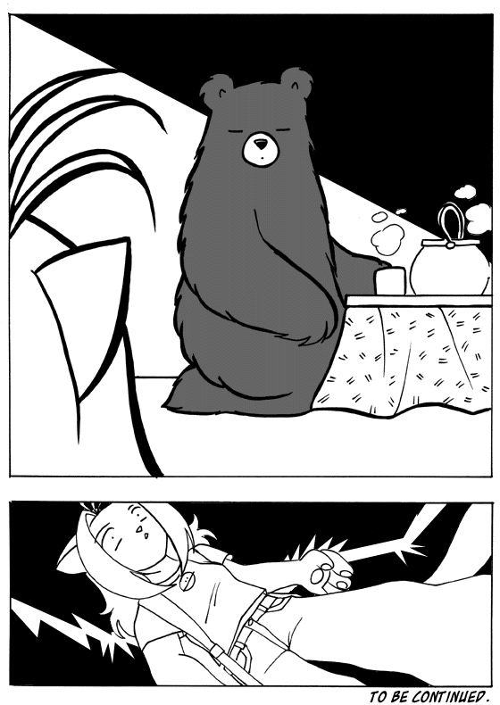
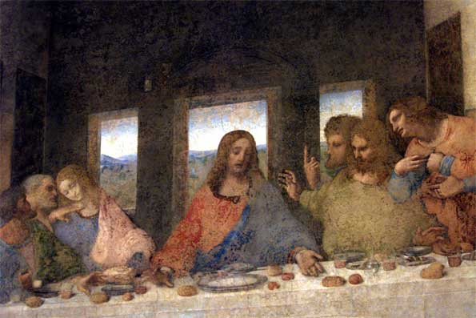

If you're leaving yourself, please post that you're doing so in this thread instead of creating a new one yourself. I will add any new names to the list of course.
edit: thx
*ahem*
You saw nothing. NOTHING I TELL YOU.
*hands over bribe*
You saw nothing. NOTHING I TELL YOU.
*hands over bribe*
The Leavers thread is, like, forty times better than the Farewell thread. A leaver is a type of person, but farewell is, like, a verb used imperatively.
I suggest everyone become a proud member of the Leavers thread! All you have to promise is that when you wish to leave Metanet, you do it without saying any "farewell"s or "goodbye"s.
*begins playing some sappy, John Williams, walking-away music*
The leavers thread is king!
The farewell thread is oppressive, yet self-effacing! Hypocrisy!!
Also, it sucks about those guys leaving. But I see Kablizzy as often as most non-leaving members, so....
Tea anyone?
I suggest everyone become a proud member of the Leavers thread! All you have to promise is that when you wish to leave Metanet, you do it without saying any "farewell"s or "goodbye"s.
*begins playing some sappy, John Williams, walking-away music*
The leavers thread is king!
The farewell thread is oppressive, yet self-effacing! Hypocrisy!!
Also, it sucks about those guys leaving. But I see Kablizzy as often as most non-leaving members, so....

Tea anyone?
Whoa! Blue_tetris, d'ya think be a leaver is better than a "farewell" thread supporter?
I can't agree with you but I can't, also, oppose to your though.
EDIT:
Yes, thanks, without milk and 2 lumps of sugar.
I can't agree with you but I can't, also, oppose to your though.
EDIT:
Yes, thanks, without milk and 2 lumps of sugar.
What about Eldrial? He seems to have mysteriously vanished.....
You're right. I keep on asking him to finish off judging and he's not there.
Hmmm.
Hmmm.
I think the irony is that a "leaver" would does not post a proper "farewell" could never make the leavers list, because no one would ever know he was leaving.
Eldrial may, in fact, be a leaver. I think that is much more admirable than being a noisy fareweller. Either way, he might be gone--which makes for to being of the sadness.

Eldrial may, in fact, be a leaver. I think that is much more admirable than being a noisy fareweller. Either way, he might be gone--which makes for to being of the sadness.
But I do see Kablizzy posting from time to time... or is that me? Or is it a recent/late post? Uh... eh... *goes into seigure*
But to be serious, I think Sendy is gone too.
But to be serious, I think Sendy is gone too.
*feels a lump form in throat*
there are too many good people on that list. it hard to see the bright side of anything anymore.
even the sun.
there are too many good people on that list. it hard to see the bright side of anything anymore.
even the sun.
Actually, I've received updates from Kablizzy and Tsukatu once in a while. It's not very often, and certainly doesn't happen enough for them to be considered "active", but they still exist.
And I agree. Eldrial's disappeared from both Web Riddler and here. I think he's gotten hooked on Soldat. Keron, could you go find him and smack some sense into him?
And I agree. Eldrial's disappeared from both Web Riddler and here. I think he's gotten hooked on Soldat. Keron, could you go find him and smack some sense into him?
Maybe he died...
I'm much less active ever since school started. I'm not sure if that qualifies me as a "leaver," but it's certainly a noticable difference.
I'm much less active ever since school started. I'm not sure if that qualifies me as a "leaver," but it's certainly a noticable difference.
Well, I know Eldrial is still alive for sure. He commented/demoed some maps back around the 15th or something.
A lot can happen in fifteen days, templex. 
Let me tell you all that the only reason I'm leaving iswow! not Maniacnevermore getting me upset. I know he'll tell you something about how I suck at life and telling people they suck at life and other stuff like how I don't contribute a single thing to this forum and how everyone hates me and that I should totally be killed and brought out of this world and that I bring shame to all wolves and that when I am dead my corpse should be looted then shot to make my spirit leave the earth and how I am so heartless and mean to everyone on this forum and that I post very stupid one or two word posts that are just to raise my post count to a number that isn't even 1/6 of his and that I'm some stupid n00b who doesn't deserve to treat everyone as equals and that I should rub everyone's fricken' feet to make up for all the shame and disgrace that I have brought upon myself!
Now, he's going to warn me for bringing the spirit of the community to an all-time low that has never happened before and making everyone mad that I didn't leave sooner.Then he's going to ban me for saying that I'm leaving and be like, oops, too bad, you said you were leaving so it wouldn't matter if you were banned or not so BANN'D!
Now, he's going to warn me for bringing the spirit of the community to an all-time low that has never happened before and making everyone mad that I didn't leave sooner.Then he's going to ban me for saying that I'm leaving and be like, oops, too bad, you said you were leaving so it wouldn't matter if you were banned or not so BANN'D!
Um ok. Melodramatic much?
If your that influenced by other peoples opinions and typed insults, then you probably shouldnt be on the internet.
Off topic, any wolves need an avatar. This pic is cool.
If your that influenced by other peoples opinions and typed insults, then you probably shouldnt be on the internet.
Off topic, any wolves need an avatar. This pic is cool.
Sheesh. Everyone knows that shooting the corpse won't make the spirit leave. 
But people relations have been tense to say the least. I know maniac hates me on some days, but we're still friends. kind of.
But people relations have been tense to say the least. I know maniac hates me on some days, but we're still friends. kind of.
I'm kind of tipping the fence. Should I leave or should I stay? That, is the question.
I am one of those, melodramatic fools,
neurotic to the bone no doubt about it
Sometimes I give myself the creeps,
Sometimes my mind plays tricks on me,
It all keeps adding up, I think I'm cracking up,
Now am I just paranoid...
I am one of those, melodramatic fools,
neurotic to the bone no doubt about it
Sometimes I give myself the creeps,
Sometimes my mind plays tricks on me,
It all keeps adding up, I think I'm cracking up,
Now am I just paranoid...
Personally, I think the question is,
Where the hell is your therapist?
Where the hell is your therapist?
1337! "showtopic=5000" in the hyperlink 
Search for Eldrial to pwn with my SPAS-12? Will do, although I have much less time to actually play Soldat as compared to modding it (I tell my mom the .BMPs are for my Web Design class ). And, BTW, I've never seen him since 1.3
). And, BTW, I've never seen him since 1.3  He probably doesn't even know it exists, as many others I suspect don't...
He probably doesn't even know it exists, as many others I suspect don't...
BTW, threadstarter revised, and topic pinned.
About posting departures here instead of in personal threads, you don't have to worry too much over that; I can just merge the topics, you know")
Search for Eldrial to pwn with my SPAS-12? Will do, although I have much less time to actually play Soldat as compared to modding it (I tell my mom the .BMPs are for my Web Design class
). And, BTW, I've never seen him since 1.3 He probably doesn't even know it exists, as many others I suspect don't...BTW, threadstarter revised, and topic pinned.
About posting departures here instead of in personal threads, you don't have to worry too much over that; I can just merge the topics, you know
Should I mention that trib4l is back with a new new nick name?
Trib4ltax
Trib4ltax
Yes, you can.
I think he is back, too.
100th post!!!!
I think he is back, too.
100th post!!!!
Why'd he change?  Oh, well; revised...
Oh, well; revised...
Oh, well; revised...What ever happened to Jeff Kineggin?
Let me tell you all that the only reason I'm leaving iswow! not Maniacnevermore getting me upset. I know he'll tell you something about how I suck at life and telling people they suck at life and other stuff like how I don't contribute a single thing to this forum and how everyone hates me and that I should totally be killed and brought out of this world and that I bring shame to all wolves and that when I am dead my corpse should be looted then shot to make my spirit leave the earth and how I am so heartless and mean to everyone on this forum and that I post very stupid one or two word posts that are just to raise my post count to a number that isn't even 1/6 of his and that I'm some stupid n00b who doesn't deserve to treat everyone as equals and that I should rub everyone's fricken' feet to make up for all the shame and disgrace that I have brought upon myself!
Now, he's going to warn me for bringing the spirit of the community to an all-time low that has never happened before and making everyone mad that I didn't leave sooner.Then he's going to ban me for saying that I'm leaving and be like, oops, too bad, you said you were leaving so it wouldn't matter if you were banned or not so BANN'D!
Holy hell, where did that come from?
Eh wha? I'm in shock. I have nothing against you, and you must understand that I don't hold grudges. You had a couple of spammy posts, so I decided to give you a warn. At the same time, I removed a warn that I thought was dealt unfairly. Your warn meter stayed the same - I just wanted to bring to your attention that you had been spamming.
I don't know why you would leave because I'm _trying to do my job_, but I think it's an overreaction and a half. I haven't been *mean* in the least bit. Whatever I've said to you that might have seemed offending was purely in the interest of keeping these forums fun for all of us.
And you think I hate you? Wasn't I the one that helped you out when you were having shyness problems in the "girl" thread?
Seriously, take a step back and re-evaluate the evidence. Something must have gone wrong in your calculations, because what you just stated was totally and completely far from the truth.
Oh, and by the way, Greenday, "Basketcase."

Blackwolf, if you're not leaving, why do you post everywhere saying you are leaving?
Now that's spammish behavior.
Now that's spammish behavior.
O_O
Where t3h fuggs did that come from, Blackwolf? To prevent from being warned, you could:
a) leave forevar,
b) die, or
c) stop spamming.
I advise option C. It's the most rational and simple way of improving the community. Once in a while, you may think of a question you'd like to ask or something you'd like to say. If this statement fits two or more of these criteria, it is spam:
a) has nothing to do with the topic of the thread,
b) is only one or two sentences long,
c) could be better issued as a PM to a specific member, or
d) could be included as part of a larger or more relevant post.
Think before you post and you won't have to... go off the deep-end like that evar again.
Where t3h fuggs did that come from, Blackwolf? To prevent from being warned, you could:
a) leave forevar,
b) die, or
c) stop spamming.
I advise option C. It's the most rational and simple way of improving the community. Once in a while, you may think of a question you'd like to ask or something you'd like to say. If this statement fits two or more of these criteria, it is spam:
a) has nothing to do with the topic of the thread,
b) is only one or two sentences long,
c) could be better issued as a PM to a specific member, or
d) could be included as part of a larger or more relevant post.
Think before you post and you won't have to... go off the deep-end like that evar again.
I disagree with .
The others are good, though.
Sometimes a post is just to point something out to someone, and you usually only require one sentence for that. Sometimes a post is for humor, and you might only need one or two sentences. And sometimes a post just doesn't need very many words.
.The others are good, though.
Sometimes a post is just to point something out to someone, and you usually only require one sentence for that. Sometimes a post is for humor, and you might only need one or two sentences. And sometimes a post just doesn't need very many words.
Err... nevermore, I assume you meant rather than
And, to keep this from being spam, I haven't seen _any_ spammy posts by blackwolf. (That dosen't mean they don't exist, I just havent seen em.)
rather than And, to keep this from being spam, I haven't seen _any_ spammy posts by blackwolf. (That dosen't mean they don't exist, I just havent seen em.)
I know. That's why there's the two-out-of-three failsafe. There are some instances when a), , c), and d) are all useful for posting.
Why are you guys having so much trouble writing "b)"?
, c), and d) are all useful for posting.Why are you guys having so much trouble writing "b)"?
Because the forum system keeps changing b's to B's, thus activating the smilie!
Keron, if you read this, I beg you: PLEASE change the code for the smilie!
Keron, if you read this, I beg you: PLEASE change the code for the
smilie!What? I have no trouble writing B) Do you? B) B) B) B) B) B) B) B) B) B) B) B)
I could do that all day.
But I think posts are allowed to be one or two sentences. But maniacs goggle eyed posts are very spammy and annoying.
I could do that all day.
But I think posts are allowed to be one or two sentences. But maniacs goggle eyed posts are very spammy and annoying.
Yes, agreed. Very much so.
jflash - Right, you may not have seen them, but they're there. I feel like blackwolf has been spamming more than any other member recently, including his conversation with you about school which you guys could have had in pms, his irrelevant posts... righto.
jflash - Right, you may not have seen them, but they're there. I feel like blackwolf has been spamming more than any other member recently, including his conversation with you about school which you guys could have had in pms, his irrelevant posts... righto.
@nevermore: Where was that? I'll remember it when I see it...
*sigh*
*sigh*
Also, it sucks about those guys leaving. But I see Kablizzy as often as most non-leaving members, so....
Really? o_O
Wow, I guess that, for me, "leaving," isn't quite as severe.
Uh, we did have a long talk about stuff over PMs. This shows that I even deleted the recieved messages.
@nevermoreIs that who it's by? I just heard while in my friend's car.
@nevermoreIs that who it's by? I just heard while in my friend's car.
@nevermore: Where was that? I'll remember it when I see it...
*sigh*
I just said, in the girl thread. The thread entitled "Girls."
blackwolf - regardless of the fact that later you went on to speak in pms, you guys still spammed up a topic, and it wasn't good.
Then why'd he get warned and I didn't? Not that I want a warn, I'm just curious.
I gave you a verbal warning. Both of you.
I only warned blackwolf later. After a few more incidents.
I only warned blackwolf later. After a few more incidents.
I feel really bad. It's my job for people to have someone to take their anger out on. Warn me all you want guys.
WTF????????????????
I'm sorry, Jesus Blackwolf Christ, but it seems your cross is made out of flimsy cardboard.
And.... WTF are you talking about?!?!
No one is taking their anger out on you! A mod will warn you because you spam and post things that are entirely unnecessary--like how you intend to crucify yourself for the enjoyment of others.
Such a f***ing saint.
God. I don't even.... understand how you could think the way you're thinking. Do you honestly feel like you are sacrificing yourself for something? Do you honestly not know what qualifies as spam?
Uuugh.
I'm sorry, Jesus Blackwolf Christ, but it seems your cross is made out of flimsy cardboard.
And.... WTF are you talking about?!?!
No one is taking their anger out on you! A mod will warn you because you spam and post things that are entirely unnecessary--like how you intend to crucify yourself for the enjoyment of others.
Such a f***ing saint.
God. I don't even.... understand how you could think the way you're thinking. Do you honestly feel like you are sacrificing yourself for something? Do you honestly not know what qualifies as spam?
Uuugh.
Ohhhh, yeah. This is why I was going to leave.
Drop it, all of you. So what if he was going to be hypocritical and not leave when he said he would? A few posts could've resolved that but the matter of blackwolf leaving or not leaving over some spam has consumed half of this thread.
... It's my job for people to have someone to take their anger out on....If you have that kind of mindset you'd best leave the forums and use the time for something more constructive.
Hey everyone!
Forgive me for my lack of intermittent visiting; but although you haven't seen me posting much, I have actually been lurking quite a bit.
I have particularly enjoyed reading through the two latest forum RPGs - The Eldritch Seas and The Hundred Doors. Kudos for Daddalumas' and blue_tetris' fascinating creations. Lately I have been getting on almost daily to check the latest happenings on these two threads. I <3 your swashbuckling pirate tale, blue!
I was originally planning on making a post containing data for the tons of unreleased N maps I had on my hard drive, but I sadly forgot to save all this data when I reformatted my laptop! anyway... I'm off to work now. I will try to stop in again tomorrow, if time permits. farewell metanet brethren!
Forgive me for my lack of intermittent visiting; but although you haven't seen me posting much, I have actually been lurking quite a bit.
I have particularly enjoyed reading through the two latest forum RPGs - The Eldritch Seas and The Hundred Doors. Kudos for Daddalumas' and blue_tetris' fascinating creations. Lately I have been getting on almost daily to check the latest happenings on these two threads. I <3 your swashbuckling pirate tale, blue!
I was originally planning on making a post containing data for the tons of unreleased N maps I had on my hard drive, but I sadly forgot to save all this data when I reformatted my laptop! anyway... I'm off to work now. I will try to stop in again tomorrow, if time permits. farewell metanet brethren!
That's a shame about the map data, great_sea.
blackwolf, if you can't deal with us, and you have a complex and think the world's out to get you, then you should honestly just leave.
Then again, you could just reform. It doesn't take very much work.
Great_sea - Great to sea* you again! I'd really love to see those maps... That's really too bad.
*dumb joke, I get it.
Then again, you could just reform. It doesn't take very much work.
Great_sea - Great to sea* you again! I'd really love to see those maps... That's really too bad.
*dumb joke, I get it.
Good News!! I will be back around the 11th of November. And I am still semi-active on NUMA.
I also would parenthetically like to add that one of my recent maps (Undergrounder, to be specific) is one of the best I've ever made, and is almost epic-worthy. I won't link it, so don't be offended that I'm sorta advertising for myself here.
I also would parenthetically like to add that one of my recent maps (Undergrounder, to be specific) is one of the best I've ever made, and is almost epic-worthy. I won't link it, so don't be offended that I'm sorta advertising for myself here.
Alright, I've decided, as long as I don't have to deal with tetris on drugs, I'm staying and I'm going to be a perfect little angel from now on. Less than 3 posts a day, like everyone wants and I will do anything for anyone like I'm supposed to so that I contribute something to the community.
If you need anything done from me, I will be your slave only here to be commanded.
macaddict, good job! Glad you can come back.
If you need anything done from me, I will be your slave only here to be commanded.
macaddict, good job! Glad you can come back.
*stumbles in with bloodshot eyes*
Wha? Heeheeheeheeheeheeeheee.
*puts on his serious face*
Is it okay if I crash over here, guys? Thanks.
Wha? Heeheeheeheeheeheeeheee.
*puts on his serious face*
Is it okay if I crash over here, guys? Thanks.
Woah, whats with all the recent comebacks? Reunion much!?
Alright, I've decided, as long as I don't have to deal with tetris on drugs, I'm staying and I'm going to be a perfect little angel from now on. Less than 3 posts a day, like everyone wants and I will do anything for anyone like I'm supposed to so that I contribute something to the community.
If you need anything done from me, I will be your slave only here to be commanded.
macaddict, good job! Glad you can come back.
We don't care about how much you post in a day, or making you a slave to the community. As long as you don't spam and be really stupid, no-one will
Seriously, there's no need to seem so down-trodden.
So, I've checked all Eldrial's usual hangouts. I've found nothing.
So he died?  Praise the- I mean, uh...
Praise the- I mean, uh... 
@jflash: why bother changing the code for
Praise the- I mean, uh... @jflash: why bother changing the code for
B)when you can just use 1), 2), 3)...?
Have you tried google? He said one time that he was the only Eldrial on google.
I don't know. But I can write B)
Whatever happened to maximo and Castaway considering they were top posters here. Did they leave or are they just on vacation or school or what?
Edit: Also, Kablizzy and Sendy...
Edit: Also, Kablizzy and Sendy...
Blackwolf, what was that thing about being a good samaritan? You might want to start by fixing things up like this.
Plus, what the heck does the post right above this mean? At least put enough effort into your posts so that they're comprehensive.
Plus, what the heck does the post right above this mean? At least put enough effort into your posts so that they're comprehensive.
What do you think that "where are maximo and castaway" means? Seriously, what happened to them?
I can understand the post.
I thought that Maximo had made a big comeback... I remember he edited his sig to say that he had returned.
Castaway, I never had the pleasure of making his aquantance.
I thought that Maximo had made a big comeback... I remember he edited his sig to say that he had returned.
Castaway, I never had the pleasure of making his aquantance.
I remeber Castaway vaguely. I think he was around just as I joined. And I just noticed, but Trogdor, you joined several months after me and have nearly twice my post count. 
Nearly? Try almost three times!
I have a lot to say. And I rarely spam.
I never met Maximo... we've sort of conversed...
I have a lot to say. And I rarely spam.
I never met Maximo... we've sort of conversed...
I remember how good of maps he made. And then I think ian (who seems to be at uni) made a map that was great and dedicated to maximo's leaving.
Sorry, blackwolf, that was a misunderstanding. The second part of my last post was actually directed towards trogdor.
Castaway's one of my personal friends. He just decided to stop coming here. Nothing triggered it, he just lost interest.
Trogdor - I beg to differ. While you don't spam insanely, you do spam a bit more than you might think.
Also, yeah, maximo did return. I think he's... on forum sabbatical... or something?
Oh, and many people made maximo dedications when he left. Me included.
Castaway's one of my personal friends. He just decided to stop coming here. Nothing triggered it, he just lost interest.
Trogdor - I beg to differ. While you don't spam insanely, you do spam a bit more than you might think.
Also, yeah, maximo did return. I think he's... on forum sabbatical... or something?
Oh, and many people made maximo dedications when he left. Me included.
Ah, yes. Sorry.
I do spam, don't I...
Sorry.
I do spam, don't I...
Sorry.
I remember Castaway. He was one of those crazy fellows that always had his own take on any situation. His signature was pretty similar to Nevermore's. And, of course, he made a couple of levels, Leap of Faith and Spire Jump being two of them. Overall, he was one step away from being a popular entity. The only obstacle: he wasn't on very often. Then he just kindof stopped coming... 
His sig wasn't similar to mine in any way aside from the fact that they were both red. And we both drew our pictures from animes, while the both of our animes were different.
Trogdor: No worries, everybody spams.
Castaway had a couple of pretty good levels, including a nice thwump only dda. He also had some awful maps. I remember at around the time that he left he showed me a launchpad only dda he was working on. It was very, very impressive, which is surprising, considering launchpads are very easy to propel the ninja with.
Trogdor: No worries, everybody spams.
Castaway had a couple of pretty good levels, including a nice thwump only dda. He also had some awful maps. I remember at around the time that he left he showed me a launchpad only dda he was working on. It was very, very impressive, which is surprising, considering launchpads are very easy to propel the ninja with.
I spam in moderation. And it's rarely off topic spam.
But why was castaway called sir spamsalot?
But why was castaway called sir spamsalot?
Isn't that self-explanatory?...
Did he spam? A lot?
I'd think if he'd spam enough for such a name, he'd be top ten.
where foxhunter go?
I'd think if he'd spam enough for such a name, he'd be top ten.
where foxhunter go?
He _was_ in the top ten. For a while. Then people like me came along and kicked him off.
Did he make those spammer threads that are in off topic?
And people like the mister 4000s
And people like the mister 4000s
I said nothing... 
Chief-Sits-On-Ass is just a cooler version of Sir Spamsalot.
Stop spamming about spam, seriously (any pun is unintended). This thread is about people who are leaving, and only those who are leaving.
I'm considering leaving and I'm sure no one minds.
EDIT: Sheesh, only considering people. In fact I'll just stay then But If I do change my mind.. I'll edit my post here.
EDIT 2: Scratch that. See my latest post.
EDIT: Sheesh, only considering people. In fact I'll just stay then But If I do change my mind.. I'll edit my post here.
EDIT 2: Scratch that. See my latest post.
Shall I fetch your hankerchief, sir?
GW, why are you leaving?
Yup. Time to fetch my hankerchief now. People start hating me, I ask why they hate me, they say they've never hated me and then decide they'll really hate me and I'm gone. It's like I can never enjoy myself in any community. No am not emo... stop asking me (You too digitboy). In fact just stop labeling. Oh and for those who think I am stupid it never would've happened if I could edit my comments on NUMA.
Bleh... excuses you might be thinking, but that's an opinion IMO. I think what amazes me more is that I'm being insulted by people who are definitely younger than me. Especially Templex who only came on these forums after me just wants to show it to the world the moment something I do becomes wrong. Now this Baba (Too lazy to remember) fellow already seems to be topping me and I barely noticed!
But you know what? I could be the only hated person that follows the rules. (No warns here). Somehow through the natural way that I have always been typing words I somehow come out to be weird or strange. Oh don't say the reasons for hating me is because I think I hate you.
I'm sure someone will vouch for me but that person will probably get mad at him just because he liked me. People will be mad at me just because I've always been the way I am.
I better leave now before my emotions kick in again. (No... stop saying that's my responsibility. My anger and your anger are very different forms of anger. It will always be like this. Farewell. The lone wolf of games has typed. (Oh, remember when I say 'you' I don't mean everybody)
EDIT: N IRC is the clue.
Bleh... excuses you might be thinking, but that's an opinion IMO. I think what amazes me more is that I'm being insulted by people who are definitely younger than me. Especially Templex who only came on these forums after me just wants to show it to the world the moment something I do becomes wrong. Now this Baba (Too lazy to remember) fellow already seems to be topping me and I barely noticed!
But you know what? I could be the only hated person that follows the rules. (No warns here). Somehow through the natural way that I have always been typing words I somehow come out to be weird or strange. Oh don't say the reasons for hating me is because I think I hate you.
I'm sure someone will vouch for me but that person will probably get mad at him just because he liked me. People will be mad at me just because I've always been the way I am.
I better leave now before my emotions kick in again. (No... stop saying that's my responsibility. My anger and your anger are very different forms of anger. It will always be like this. Farewell. The lone wolf of games has typed. (Oh, remember when I say 'you' I don't mean everybody)
EDIT: N IRC is the clue.
Wow, way to leave in a 'leaver's thread'. But dude, why are you pinning everything on yourself? Your practically forcing everyone to hate you by stating "No, dont say noone hates me because I know you do". Messages like that inccrease the chance of members disliking you, I personallly had no problem with you, and I think its because ive only been here for a month. And what are you saying when someone backs you up, they will be equally hated? Thats not true, sticking up for someone that everybody hates sorta boosts up the comunity's morale. So, farewell fellow Nember (no pun intended) im sure you will be missed, in fact Ill add your name to my sig to show that your not hated (=P), if you actually show up again that will prove that you really do love us, and that nonsense was filling up your head.
G-bye wolf, and if you were just joking about leaving and you actually come back, then thats pathetic.
G-bye wolf, and if you were just joking about leaving and you actually come back, then thats pathetic.
Yup. Time to fetch my hankerchief now. People start hating me, I ask why they hate me, they say they've never hated me and then decide they'll really hate me and I'm gone. It's like I can never enjoy myself in any community. No am not emo... stop asking me (You too digitboy). In fact just stop labeling. Oh and for those who think I am stupid it never would've happened if I could edit my comments on NUMA.
Bleh... excuses you might be thinking, but that's an opinion IMO. I think what amazes me more is that I'm being insulted by people who are definitely younger than me. Especially Templex who only came on these forums after me just wants to show it to the world the moment something I do becomes wrong. Now this Baba (Too lazy to remember) fellow already seems to be topping me and I barely noticed!
But you know what? I could be the only hated person that follows the rules. (No warns here). Somehow through the natural way that I have always been typing words I somehow come out to be weird or strange. Oh don't say the reasons for hating me is because I think I hate you.
I'm sure someone will vouch for me but that person will probably get mad at him just because he liked me. People will be mad at me just because I've always been the way I am.
I better leave now before my emotions kick in again. (No... stop saying that's my responsibility. My anger and your anger are very different forms of anger. It will always be like this. Farewell. The lone wolf of games has typed. (Oh, remember when I say 'you' I don't mean everybody)
I was never aware of anyone hating you or even disliking you. Heck, I have no idea what you're talking about whatsoever.
... G-bye wolf, and if you were just joking about leaving and you actually come back, then thats pathetic.
Nah, not joking would've been even more pathetic. Whatever did he do to make anyone angry at him? He's leaving insensibly IMO.
I don't think anyone hates you, man. At least, I don't hate you. And I'm, like, the only really important member. I hope you'll still be swinging by to check out the RPG every now and then. Peace.
I dont hate you.
Youre taking things to heart too much.
IRC cannot convey sarcasm. Remember that.
Youre taking things to heart too much.
IRC cannot convey sarcasm. Remember that.
Your practically forcing everyone to hate you by stating "No, dont say noone hates me because I know you do".
People don't hate him, but GamingWolf does things like that that pisses us off on IRC. All he ever did on IRC was complain and complain about his depressing life where nobody likes him because he's so "weird," and then when he tries to explain to us what makes him a "freak," he makes up a bunch of nonsense excuses. So, since everyone got tired of all that nonsensical whining of his, we told him to shut up and stop expressing his "emotions" in the channel and do it elsewhere. Sometimes it's hard to try to not express your emotions, but what GamingWolf can't understand is that it's simple to do that on IRC. You can complain on the forums or something, but the channel is for discussion, not a bunch of whining. It's easy enough to not type a bunch of random complaints. Not only that, he tries to act cooler by seeming "mysterious" and "cryptic." Well, GW, this is probably why people don't like you. It's all absolutely annoying. I used to think that you were cool, but after a while you started to whine and it just got plain annoying. You're not even willing to properly discuss your problem. We're all sick of giving you sympathy.
Does GamingWolf know of Kablizzy's past?
GW< I don't hate you. I'm not so sure of Patrick, he's always obnoxious  .
.
You do, however, annoy me sometimes.
.You do, however, annoy me sometimes.
Does GamingWolf know of Kablizzy's past?What do you mean, Keron?
And I don't think GW should leave.
GamingWolf has decided not to leave. I offered to post for him his decision, and he said go ahead.
Quote: GW on IRCOk... whoever wanted to post for me can say I'm not leaving.
Oh... Why did he want you to post for him?
Does GamingWolf know of Kablizzy's past?What do you mean, Keron?...
In terms of how life is going GamingWolf is better off than me, and I'm supposedly better off than Kablizzy (and that's saying something)

How is gw better than you!?!?! 
How you're doing in life is purely subjective. I mean, can you even be sure anyone else is actually living? No. So the comparison is impossible.
Oh... Why did he want you to post for him?
He was tired, so I offered to post for him.
Ok, my ban has been extended about 2 weeks past the 11th. Sorry.
*ouch!*
By the way, is Sendy still here, or AWOL, or what?
By the way, is Sendy still here, or AWOL, or what?
well I'm out of here! 7654321 think about what you sent me! bullcrap huh? well I'm out and don't ban me.
That's so uncalled for. I can't make you stay, but I'm sure that what digit boy sent you couldn't have been that bad. What'd he do?
Instead of storming off in a temper tantrum, why don't you talk about it?
Instead of storming off in a temper tantrum, why don't you talk about it?
Because, as I said earilier, he's not that bright.
[@ everyone] Leaving, or fake leaving is not a good way to gain popularity. [/@everyone]
[@ everyone] Leaving, or fake leaving is not a good way to gain popularity. [/@everyone]
I don't know it just that he just came at me the wrong way and I don't like that. we've talking it over and he siad he was sorry and all it's cool now.
Why would you leave, when you already have a custom title!?
You've been a member for a month, and you have a title. wow.
You've been a member for a month, and you have a title. wow.
Why would you leave, when you already have a custom title!?
You've been a member for a month, and you have a title. wow.
A mod or admin probably inserted the title as a joke, without him knowing. But, after reading your post her probably found out, or he already knew. Or im so awesome because I too have a title.
Thats right bastards, I got away with a title, me! New user! Without me, it would be aweso. Wooooooo!
...
By the way, is Sendy still here, or AWOL, or what?
*ahem*
*Reinforces question*
Sendy made a map not long ago on numa.
Oh and she was in the epic series.
So yeah, Sendy is still around.
Oh and she was in the epic series.
So yeah, Sendy is still around.
Starcrossed has got a novelty title too.
just so you all know, im leaving. and not temporailly. dont expect to see me on irc cause as soon as im through typing this, im deleting mIRC.
i apologize for being the stupid retarded ass that is me.
...well, no not really. i cant apologize for i did nothing that i regret.
bye.
i apologize for being the stupid retarded ass that is me.
...well, no not really. i cant apologize for i did nothing that i regret.
bye.
Okay...
... i apologize for being the stupid retarded ass that is me....well, no not really. i cant apologize for i did nothing that i regret....
*lol* Nice.
See ya. Hope you find a healthy solution to your life's conditions...If this is as a result of me...
Well, what can I say.
I'm sorry you took it that way.
Well, what can I say.
I'm sorry you took it that way.
just so you all know, im leaving. and not temporailly. dont expect to see me on irc cause as soon as im through typing this, im deleting mIRC.
i apologize for being the stupid retarded ass that is me.
...well, no not really. i cant apologize for i did nothing that i regret.
bye.
Argh... Poop... Members...
dropping like flies...
MUST FIND MORE!
*tells friends to join forum*
No, they're not n00bs.
QuoteMembers...
dropping like flies...
Thats a very good way to describe it.....
Bye Kai....
Well, for one thing, he didn't delete IRC.
Update: Take Eldrial off the AWOL list and put Chasmyr on.
We still don't know what happened to Chasmyr do we?
We still don't know what happened to Chasmyr do we?
Okay, I'm going away. Don't panic, though, I'm not leaving as much as I am taking a break. Every time I get on the computer, I play N while doing my homework. But it's making me miss small assignments. I make them up, but they add together which makes me get a crummy report. So, I'm going, but I'll be back, when you least expect it. Maybe, like, tomorrow. Or not. I honestly have no idea.
Erm- bye.
Erm- bye.
O_O
This... This... I can't take it.
Are you sure everyone isn't just following each other and leaving?
...
This... This... I can't take it.
Are you sure everyone isn't just following each other and leaving?
...
The community will still stick together.
Welp, it was fun while it lasted.
Yep, Im leaving you all, as you can tell I havent been active for a while, thats because something REALLY bad happened to n1.4, as in ALL my progress, ALL my levels, were wiped out, dissapeared, deleted, on its own for no reason at all. In my fury, I deleted it, along with IRC. The reason why I deleted IRC was because it malfunctioned, yep, you would think the problem why everything went screwy is because I use windows... but no, just those 2 programs overrided. After that crisus, I decided "Whats the use?" and stopped visitng this forum, then stopped playing (duh, I deleted it) and almost forgot about this place. But, the past months of "fun" with you guys was er... fun, cool. Hope this forum still lives if I still remember it in the future, most likely not. So by peeps, im gone. Forum was cool when I lasted.
[R.I.P]Atticus 8-26 to 11-13
Yep, Im leaving you all, as you can tell I havent been active for a while, thats because something REALLY bad happened to n1.4, as in ALL my progress, ALL my levels, were wiped out, dissapeared, deleted, on its own for no reason at all. In my fury, I deleted it, along with IRC. The reason why I deleted IRC was because it malfunctioned, yep, you would think the problem why everything went screwy is because I use windows... but no, just those 2 programs overrided. After that crisus, I decided "Whats the use?" and stopped visitng this forum, then stopped playing (duh, I deleted it) and almost forgot about this place. But, the past months of "fun" with you guys was er... fun, cool. Hope this forum still lives if I still remember it in the future, most likely not. So by peeps, im gone. Forum was cool when I lasted.
[R.I.P]Atticus 8-26 to 11-13
Well, I'd like to say that I knew you well, but I didn't know you at all. You were at least not an annoying noob, so farewell. Have a good time in life. Eat some pretzels. Do some stuff. Yeah...
Sad to see you go.
This is why you back up your .sol
(that's probably not what you want to hear, but it's true)
This is why you back up your .sol
(that's probably not what you want to hear, but it's true)
Well... I must leave this forum for 3 or 5 months.
School is evil...
I'll miss this forum.
However... Bye bye, see you soon guys!
School is evil...
I'll miss this forum.
However... Bye bye, see you soon guys!
Sendy made a map not long ago on numa.When you say she, you're reffering to Sendy? Is Sendy really a boy or a girl? In my opinion, Sendy is an it with map-making ability...haha.
Oh and she was in the epic series.
So yeah, Sendy is still around.
Sorry to hear that Dis.
oops. Shoulda said this earlier: I'm back on. I did a bit of makup work, and my grades rose to 96%. Woo, yay.
Tuesday has been and gone, and I'm still here.
Scrap that.
Scrap that.
you can move me to People who supposedly "departed" but appear from sporadic time to time:. i think i've been pretty active lately. i'm sure i'll be around here and there. 
Search for Eldrial to pwn with my SPAS-12? Will do, although I have much less time to actually play Soldat as compared to modding it (I tell my mom the .BMPs are for my Web Design classpfft. no way you can kill me at Soldat Keron (though the couple times i played you, you did kill me....). well, i left Soldat when 1.3 came out. it's disable of mods made me slowly lose interest.
Hang on... this thead is about levers, right?
http://www.vectorpark.com/levers.html
No? Oh, what a shame.
http://www.vectorpark.com/levers.html
No? Oh, what a shame.
tad random, but i see the relations.
TDL removed, Eldrial moved.
*drinks a 5 second spasm coffee*
Sorry, left...will appear at sporadic times...bye---Zzz
Sorry, left...will appear at sporadic times...bye---Zzz
alright....
there's a 50/50 chance that this will be the last day that I post here for a few years...so, hopfully you'll hear from me tomarrow. if not....well....
...this sucks ass.......
there's a 50/50 chance that this will be the last day that I post here for a few years...so, hopfully you'll hear from me tomarrow. if not....well....
Quote: Goodbye for Now @ Metanet...I can still see the light
at the end of the tunnel shine
through the dark times
even when I lose my mind
But it feels like no one
in the world is listening
and I can't ever seem
to make the right decisions
I walk around in the same haze
I'm still caught in my same ways
I'm losing time in these strange days
but somehow I always know
the right things to say
I don't know what time it is
or whose the one to blame for this
Do what I believe what I can't see
And how do you know
which way the wind blows
Cause I can feel it all around
I'm lost between the sound
And just when I think
I know, there she goes
[Chorus]
Goodbye for now
Goodbye for now
So long
Goodbye for now (I'm not the type to say I told you so)
Goodbye for now
So long (I think the hardest part of holding on is lettin go)
When will we sing
A new song
A new song
Were still smilin as the day goes by
and how come nobody
ever knows the reasons why
Burry you deep so far
you can't see
If you're like me
who wears a broken
heart on your sleeve
Pains is troubles that
you know so well
Either time don't
It can't or you just won't tell
I'm not the type to say
I told you so
I think the hardest part
of holding on is lettin it go
I don't know what time it is
or whose the one to blame for this
Do what I believe what I can't see
And how do you know
which way the wind blows
Cause I can feel it all around
I'm lost between the sound
And just when I think I know
there she goes
Goodbye for now
Goodbye for now
So long
Goodbye for now (I'm not the type to say I told you so)
Goodbye for now
So long (I think the hardest part of holdin on is lettin it go)
[Repeat]
When will we sing
A new song
A new song
And you can sing until
theres no song left (song left)
And I can scream until
the world goes deaf (goes deaf)
For every other word
left unsaid you should
have took the time to
read the sign and
see what it meant
In some ways everybody
feels alone so if the
burden is mine then
I can carry my own
If joy really comes
in the morning time
then I'm gunna sit back
and wait until the
next sun rise
Goodbye for now
Goodbye for now
So long
Goodbye for now (I'm no the type to say I told you so)
Goodbye for now
So long (I think the hardest part of holdin on is lettin it go)
[Repeat 2x]
When will we sing
A new song
A new song
...this sucks ass.......
Ach kai... hope you're back tommorow. Otherwise we'll miss you and your crazy, crazy ways.
Have a good one.
Have a good one.
I'll miss you if so. You were a great man. You actually provided a good source of entertainment. *cries and floods up the house*
awwww....im loved  .
.
well, turns out that fate gave me another chance to NOT fudge up.
in other words.........WOO HOOOOO!!! IM STILL A FREE MAN BIZACH!!!!
.well, turns out that fate gave me another chance to NOT fudge up.
in other words.........WOO HOOOOO!!! IM STILL A FREE MAN BIZACH!!!!
I might be officially leaving for a while. I'm getting a tad "bored", wich can be seen in my activity lately. (And I've got a dozen of things to do...)
It's just that everything, (even great games) gets boring after a while.
Its like you've eaten too much candy, you're all stuffed and it starts to taste bad.
Then you just want to stop eating for a while, and do other things.
But one day, I SHALL RETURN!!!
*Echoing maniac laughter*
Keep up the good work, and I'll still read the posts and do random visits. Just not as often as I used to do. (I've always been the quiet, "invisible" type of forumer, I don't post much, but I read almost 90% of all posts and threads.
But, really. Don't let this place get corrupted while I'm gone.
It's just that everything, (even great games) gets boring after a while.
Its like you've eaten too much candy, you're all stuffed and it starts to taste bad.
Then you just want to stop eating for a while, and do other things.
But one day, I SHALL RETURN!!!
*Echoing maniac laughter*
Keep up the good work, and I'll still read the posts and do random visits. Just not as often as I used to do. (I've always been the quiet, "invisible" type of forumer, I don't post much, but I read almost 90% of all posts and threads.
But, really. Don't let this place get corrupted while I'm gone.
... Don't let this place get corrupted while I'm gone.
I'll try (no guarantees, tho'). Bai for now.

So this is going to go unchallanged. It's ok to berate people like me on this forum without people batting an eyelid? You know, I've never forced anybody to call me anything, just stated what I am going through with honesty. If you knew what I have to cope with every day you'd see I'm no inert 'thing' or subhuman - the transsexuals who aren't fighters end up dead - they commit suicide. Unless you meant something different by the word 'it', in which case, tell us.Sendy made a map not long ago on numa.When you say she, you're reffering to Sendy? Is Sendy really a boy or a girl? In my opinion, Sendy is an it with map-making ability...haha.
Oh and she was in the epic series.
So yeah, Sendy is still around.
Sorry to hear that Dis.
Are you a boy or girl?
I am soo thinking that you are a guy...
I am soo thinking that you are a guy...
I really don't think he meant any offense by 'it', although I find it hard to believe he managed to be on these forums and avoid the numerous explanations of your situation.So this is going to go unchallanged. It's ok to berate people like me on this forum without people batting an eyelid? You know, I've never forced anybody to call me anything, just stated what I am going through with honesty. If you knew what I have to cope with every day you'd see I'm no inert 'thing' or subhuman - the transsexuals who aren't fighters end up dead - they commit suicide. Unless you meant something different by the word 'it', in which case, tell us.Sendy made a map not long ago on numa.When you say she, you're reffering to Sendy? Is Sendy really a boy or a girl? In my opinion, Sendy is an it with map-making ability...haha.
Oh and she was in the epic series.
So yeah, Sendy is still around.
Sorry to hear that Dis.
Quote: dictionary.comit
pron.
1. Used to refer to that one previously mentioned. Used of a nonhuman entity; an animate being whose sex is unspecified, unknown, or irrelevant; a group of objects or individuals; an action; or an abstraction: polished the table until it shone; couldn't find out who it was; opened the meeting by calling it to order.
That sounds awfully cold, but that would've been the general meaning of it.
(and: that was totally unnecessary and nasty, Mysterypower)
Yeah, I don't think he meant offense, I think it was just a slightly thoughtless post.
Ok, I see sense there. Either way my response shows that I am tense in some kind of subconscious way. I *know* there are many people out there who'se construct of reality I offend merely by existing, but I thought I had accepted that and got past it.
Clearly I need to stop aimlessly surfing the web for a while - it's not doing me any good - especially when there are some things that are out of my hands and making me subconsciously agitated.
Damn, I'm not perfect. I hate that.
Clearly I need to stop aimlessly surfing the web for a while - it's not doing me any good - especially when there are some things that are out of my hands and making me subconsciously agitated.
Damn, I'm not perfect. I hate that.
Well, if it makes you feel better, I admire your honesty. If you'd just said you were female from the start, nobody would have known otherwise, after all.
Well, Sendy's avvie is deliberately ambiguous. Blue is a commonly accepted boy's color, and many people associate pink with girls. But purple is *right* in between.
Well, Sendy's avvie is deliberately ambiguous. Blue is a commonly accepted boy's color, and many people associate pink with girls. But purple is *right* in between.
You just gave more thought to that than I ever have, but yeah
Sendy
Uh, bye.
(guess I'll delete all my maps soon, cuz' I hate them).
(guess I'll delete all my maps soon, cuz' I hate them).
What the bloody fruitbasket?!
Don't pull an Atramentis, man! COME BACK!
*gets on his knees*
Don't pull an Atramentis, man! COME BACK!
*gets on his knees*
I'm not mimicking Atra, I just don't want an excuse to come back.
And I almost forgot, there's no point in keeping this column I'm working on so I'll dump it here.
See ya, fellas.
And I almost forgot, there's no point in keeping this column I'm working on so I'll dump it here.
See ya, fellas.
Wow, you sure went quick. I don't think deleting your maps was the right way to go though -- they were just loads of fun, now they're gone. Thanks anyway. You were great.
Take care.
Take care.
Tomorrow will be my last posting day on these forums. After that, I'm going cold turkey.
It's a matter of moving on in my life. I really don't feel like explaining it.
It's a matter of moving on in my life. I really don't feel like explaining it.
Uh, bye.
(guess I'll delete all my maps soon, cuz' I hate them).
Well, I liked them. And now I can't play them anymore. Thank you.
Tomorrow will be my last posting day on these forums. After that, I'm going cold turkey.
It's a matter of moving on in my life. I really don't feel like explaining it.
Are you serious? I hope not.
Uh, bye.
(guess I'll delete all my maps soon, cuz' I hate them).
Woah. Please don't delete your maps. It'd be nice if you didn't leave, but that's your choice, so all I ask is just not to delete your maps. The reasons being threefold:
- It just means people cannot play them anymore
- I will have to remove all of them from the bitesizeNUMA database
- Like Atramentis you will probably lose several Dronies nominations... Atramentis might have won something last year, but his ill-thought actions lost him that chance
Wellp, we might as well add poor GamingWolf to the list.
And about Barabajagal...yes, he did indeed delete all his maps. Which really sucks.
And about Barabajagal...yes, he did indeed delete all his maps. Which really sucks.
... just deleted over 60 of his maps from the bitesize database.
*wipes tear from eye*
*wipes tear from eye*
wait, Barabajagal...wtf, why'd you delete all those maps...that's just....its just...wrong.
You have killed ten people and wound seven in your actions.... I can see leaving, but why delete your maps?
You have killed ten people and wound seven in your actions....
I can see leaving, but why delete your maps?I know I haven't been aroud here long at all, so maybe nobody will even notice or care, but I am leaving. Not because I want to but because I have to. My mom and older brother think that I spend too much time on the forums but they don't understand. You guys seem like family to me and I have only been around for a short time. I felt as though I was making some good friends and that I was even able to be of some help every now and then. However, obey I must, so goodbye and farewell. I am sorry for the help that I promised people that will never get done and I will miss all of with whom I spent time with here. I might come back next year or just to drop in but then again, as I have said before, it isn't likely most of you shall even notice my absence since I was only a forum member for 2 weeks or so. Here is a poem that my brother wrote that reminds me of leaving things behind and how hard it is:
Look! there's a light in the window;
A lantern is hung by the door;
Inside, on a nail by the doorway,
Waits a shield to be wielded once more.
The step and the lintel are trodden,
The hinges are worn down with use;
But the flag that lies limp on the table
Is a plain, tattered banner of truce.
Feel how the key has been tarnished
From years in your pouch and your hand,
Moulded and dented and weathered
By lock and by rock and by sand.
Put your sword back in its scabbard;
Wrap it and lay it aside,
Swathed in your old leather jerkin -
Stained, scarred and beaten with pride.
Carefully loosen your bowstring;
Coil it and put it away;
Hang up your bow in its place on the wall,
Safe for another day.
Put your books back on the bookshelf;
They hold no more use for you now:
You're leaving the life you were born for
To tend to another man's plow.
Take a step into the darkness,
Your weapons and armor behind;
From now on pay heed to your speaking:
You're entering the land of the blind.
But leave a hot coal in the fire,
And a good, sturdy faggot of wood;
Slip the key into your pocket:
Did you think you were leaving for good?
Your love won't be aimless forever;
The truest of lifes is not gone -
One day you'll be given a summons,
And the quest of all quests will go on.
Goodbye and keep up the good work!
Look! there's a light in the window;
A lantern is hung by the door;
Inside, on a nail by the doorway,
Waits a shield to be wielded once more.
The step and the lintel are trodden,
The hinges are worn down with use;
But the flag that lies limp on the table
Is a plain, tattered banner of truce.
Feel how the key has been tarnished
From years in your pouch and your hand,
Moulded and dented and weathered
By lock and by rock and by sand.
Put your sword back in its scabbard;
Wrap it and lay it aside,
Swathed in your old leather jerkin -
Stained, scarred and beaten with pride.
Carefully loosen your bowstring;
Coil it and put it away;
Hang up your bow in its place on the wall,
Safe for another day.
Put your books back on the bookshelf;
They hold no more use for you now:
You're leaving the life you were born for
To tend to another man's plow.
Take a step into the darkness,
Your weapons and armor behind;
From now on pay heed to your speaking:
You're entering the land of the blind.
But leave a hot coal in the fire,
And a good, sturdy faggot of wood;
Slip the key into your pocket:
Did you think you were leaving for good?
Your love won't be aimless forever;
The truest of lifes is not gone -
One day you'll be given a summons,
And the quest of all quests will go on.
Goodbye and keep up the good work!
ill remember you, but then again, iv only been around for a few months
You should add the (NUMA Leavers) Section. And add me up
I will definatly miss you dude. Its quite rare to have someone who puts so much care and effort into being a good, helpful member. I only wish there were more people like you out there.
Goodbye, Wedgie, it was good getting to know you a little bit and I will miss you...-st- as well
SW, I'd say something, but wedgie took the words out of me. You were an incredibly helpful new member (something we don't regularly see, it seems), and I appreciate the fact that you took time to make images of many of the maps that people asked for help on.
It sucks that you have to leave two and a half weeks after you joined, but do come back whenever you can. See ya.
It sucks that you have to leave two and a half weeks after you joined, but do come back whenever you can. See ya.
You'd better come back. You took a while.
Look at my sig, I will be able to be back for a week stint in a bit.
^ I see no sig.
Sorry, that note above was mine from when I wasn't signed in...
Postscript: I miss you guys...I think I am going through withdrawals.
Postscript: I miss you guys...I think I am going through withdrawals.
Read this, and the map that is linked to it I don't know if it's the right thing to do if there's really a hacker, but I figure The_Ninja_Game is one of these:
People who supposedly "departed" but appear from sporadic time to time:
Enjoy your future life any ome back soon!
I'm expecting you
I'm expecting you
Sketch will not be here for the next two weeks. Just a heads up.Quote-->| Sketch (~chatzilla@ottawa1.mWtNet) has joined #N
<Sketch> can i get a mod or admins attention?
<Cerberus> Why?
<Sketch> I would like to request a temporary ban until June 16th
<Cerberus> for you?
<Sketch> its when exams end, it would help me alot
<Sketch> yes.
<Cerberus> Ah, wise choice.
<Sketch> so any one bite?
<Sketch>
<Sketch> well il be going now, maybe youl read my request, Cerberus be a pal and remind a mod or admin when they log on?
Talking about the IRC. I apologised.
On-topic: So sketch is concentrating on his exams... Wise thinking.
On-topic: So sketch is concentrating on his exams... Wise thinking.
Speaking of leavers...
...Where'd the saybox go?
...Where'd the saybox go?
And where the heck has Suki been? I loved it when he nonchalantly bashed my religion.
Mmmmm. Laptop died. The computer I'm using right now is really really laggy so I probably will be taking a break until mid-july/august. Seeya!
[edit/] A break from making maps, that is... I'm still gonna be on the forums
[edit/] A break from making maps, that is... I'm still gonna be on the forums
You could say I'm already gone, but it's more because I don't have the time anymore than anything else. And I don't plan to give up procrastination, bludging and disorganization anytime soon so...
meh.
meh.
other great ppl have gone to....for example temporis went....then came back...and >stardeash is gone....and i loved his maps...
might want to take eldrial off the "People who supposedly "departed" but appear from sporadic time to time:" list, and i think ive seen maximo and kablizzy be a little more active recently too... as for tsukatu and trib4l, why did they have to go (actually i didnt join soon enough to really seen trib4l any...)
(actually i didnt join soon enough to really seen trib4l any...)rocket_thumped has said that he is leaving numa. i was amazed that he said that
>stardeash was awesome and he should be on the "leaving" list....and so should some other ppl....except they aren't that well known....oh, and snuggletummy is the like best tileset maker ever!...and he's not on that list.... 
EDIT: when i saw that snuggletummy wasn't on that list i was like wtf is wrong with these ppl...he's great....and better than some of you guys....
EDIT: when i saw that snuggletummy wasn't on that list i was like wtf is wrong with these ppl...he's great....and better than some of you guys....
Snuggle tummy is the same person as Srgt. Poptarts slain wraith
Quote: glenno14, June 15, 2006 04:11 pmIm going on a short 3 day holiday to celebrate my birthday.
NOOOOOO!! DON'T GOOOOOOO!!!!!
hey isn't razorstar back?
And I'm going on holiday this summer.
: /
I dunno how long yet.
: /
I dunno how long yet.
^I object! That just isn't fair! Who makes comics if both you and b_t are gone?
Anyway, have a good time doing...whatever it is you do.
Anyway, have a good time doing...whatever it is you do.
^Yeah, I like their comics...
Anyway, I'll be gone for a few days starting tomorrow. VACATION! YAY!
Naaaah, who am I kiddin', who is really going to miss me?
Anyway, I'll be gone for a few days starting tomorrow. VACATION! YAY!
Naaaah, who am I kiddin', who is really going to miss me?
I'll be on vacation from Sunday to Friday (the 18th to the 23rd).
I'm leaving NUMA if you care to add me to the list I'm helping a friend to continue the 'legacy'. I PM'd you too.
I'm helping a friend to continue the 'legacy'. I PM'd you too.I left Numa and Metanet when my family member died. Now I'm back to Metanet, but not Numa quite yet.
im sorry..
i lost a family member as well.sister.
i lost a family member as well.sister.
I feel sorry for you, man.
~~~~~~~~~~~~~~~~~~
Wow, a lot of people seem to be going on holiday all of a sudden...
Oh, I will be gone for 7 days.
Ssseeevvveeeennnn daaayyyssssss... [/The Ring]
~~~~~~~~~~~~~~~~~~
Wow, a lot of people seem to be going on holiday all of a sudden...
Oh, I will be gone for 7 days.
Ssseeevvveeeennnn daaayyyssssss... [/The Ring]
Me and Zacko are leaving again, day after tomorrow for five days, no computer, so don't expect us to post.
BUT IT WILL BE FUN!!!!!1
BUT IT WILL BE FUN!!!!!1
I be leaving for week after tomorrow morning, then back for a day or two next weekend, and then I'll be gone for another week.
Edit:Would you look at that. My new avatar is working.
Edit:Would you look at that. My new avatar is working.
If you haven't realized already, I'll be here sporadically (since June 26th) until the 28th of July. If you have...well...go find someone else to stalk.
Just a heads-up: I'll be leaving tomorrow to a university on the east coast for three weeks.
I will see you in three weeks. I'll wait here, at my very chair, waiting for Baraba.
im leaving on 27th july for 2 weeks. i should be back on monday 14th august. holiday in france. oooh yeah!
i will leave august 4th and return june 1st 2007 for next summer... 
sniff..il be at school..( i go to an Amish Boarding School)
sniff..il be at school..( i go to an Amish Boarding School)
As if they have education.
i will not be here for the next 2 weeks starting tommorow as i am on holiday \o/
I'm off trekking in Morrocco for a fortnight, so I'll see you in a bit. Happy holidays, y'all
No! The forums will crumble without you to handout your 1337n335 warns! Be quick and come back soon!
Yes, come back as soon as possible or all humanity as we know it will destroy itself.
And Sharc, dang.
And Sharc, dang.
Hey yall, thought id post im coming back on sunday. I've been at camp without a computer and today i got 15 mins to mess around.
Anyway, i saw my topic, thanks Obby... and screw the rest of yall.
Sometimes, people just make too much of a damn deal out of shit...On both sides of the table
I've changed on this computer usage drought. Im now a 7' tall green monster with red eyes and a detachable tail that can be used as a floatation device.
Anyway, 'til sunday
P.S. I decided to not leave a thread about my leave of absence because i felt pretty bad about creating a spammy thread about being grounded earlier...
(darn these macs, they're so damn confuzzling)
Edit:
Whats with the New banner, is the left guy TNG?
and what about BnT?
Anyway, i saw my topic, thanks Obby... and screw the rest of yall.
Sometimes, people just make too much of a damn deal out of shit...On both sides of the table
I've changed on this computer usage drought. Im now a 7' tall green monster with red eyes and a detachable tail that can be used as a floatation device.
Anyway, 'til sunday
P.S. I decided to not leave a thread about my leave of absence because i felt pretty bad about creating a spammy thread about being grounded earlier...
(darn these macs, they're so damn confuzzling)
Edit:
Whats with the New banner, is the left guy TNG?
and what about BnT?
Hello McP. The new banner is in league with TNG. Its getting lots oh ype now. An BnT was changed to a passowrd so people wont stumpble in there to see all the sex realtated threads.
See you sunday.
See you sunday.
What new banner? Unless you're talking about the forum's new banner.
Wow. I just don't understand people who don't correct typos.
How can you stand that Obby?
Anyhoo, welcome back McP.
How can you stand that Obby?
Anyhoo, welcome back McP.
@McP': codename "Robotology," not "TNG"
Wow. I just don't understand people who don't correct typos.
How can you stand that Obby?
Meh. I usually try to keep my typing here pretty clean, but not on IRC. I just dont see the point on places like AIM or IRC. When ts fast paced, I just get my point across. As for here, I usually keep it pretty good, with a few mistakes. Its here that its slower and not as hurried. So I take my time. As for others, as long as I can read it pretty well, and it gets the point across, its fine with me.
Wow. I just don't understand people who don't correct typos.
How can you stand that Obby?
Anyhoo, welcome back McP.
Aw, come on, RR. Spehlling is fohr loozers.
It's nice to know you're still alive, McP. And pretty tall, too.

Even though I haven't been posting at all lately, I thought I'd post this. Im off to Scotland for a week. I think im going to a place called Ayr. I THINK thats what it is called...
Anyway, I gotta go pack the rest of my stuff. Bye bye!
Anyway, I gotta go pack the rest of my stuff. Bye bye!
Hi Glenno! I'm sure you'll have a fun time there. It's a really interesting place, and beautiful, too. Though Ireland is beautiful...er. I know. I've been there!
I'm glad that you're still alive and well.
I'm glad that you're still alive and well.
I'm leaving to New York for next week, just sightseeing (even though I didn't really want to go; my mom booked us months in advance without my approval whatsoeverwe're not even going to check out the music school I want to attend in the future over there. Meh).
If I don't make a post in two weeks, you'll know what happened to me. *draws invisible decapitation line in front of neck with index finger* Blast those terrorists.
If I don't make a post in two weeks, you'll know what happened to me.
*draws invisible decapitation line in front of neck with index finger* Blast those terrorists.Ironclad has left.Quote: Ironclad @ PMI hate to do this as I think an artistic historical series pack could be fun, I really must return to reality forever and anon. If possible please remove my user account and email correspondingly from Metanet. I humbly bow to great service that I have recently come to know. Thank you all for what you helped me with in N. But all realms electronic may soon feel neglected in my life. Thanks for your time
Ironclad
i saw this thread with lv as the last post and for a second thought "nooo, lv's leaving?!??!?"
i saw this thread with lv as the last post and for a second thought "nooo, lv's leaving?!??!?"
Rofl, I was thinking the same thing.
Ironclad was pretty polite and used great sentence structure for having only been here a short time. It's too bad that he's left.
Starting now, I will be gone indefinitely.
Where you off to?
Well have fun never the less.
Well have fun never the less.
He's either kidding, or about to be murdered me thinks...
I wish you would be magically turned into bunnies, McP.
Tsukatu just signs in on IRC once in a while...
Nice guy.
Tsukatu just signs in on IRC once in a while...
Nice guy.
NOOOOOOOOOooooooo...
- Vader
Your avatar and signature really impressed me the best out of all of them out there, right up with Mojo's ranking.
Well, see ya Don't hold anything back in making the best of your life.
- Vader
Your avatar and signature really impressed me the best out of all of them out there, right up with Mojo's ranking.
Well, see ya
Don't hold anything back in making the best of your life.Sad to see you go, Glenno. Be sure to visit when 1.5 comes out.
(Btw, thankful is a real word.)
(Btw, thankful is a real word.
)Aw...
Glenno, you were one of the kindest people on these forums, in my opinion, so it's a real shame that you're leaving.
Take care, buddy.
Glenno, you were one of the kindest people on these forums, in my opinion, so it's a real shame that you're leaving.
Take care, buddy.
ah... another good member leaving... even though i hardly knew the 
Same. But glenno, you sound like a nice guy. Sorry to see you leave though.
I never leave, I just selectively lurk. :3
I never leave, I just selectively lurk. :3
Well I hope you selectively lurk more often. >.>
Wow. I didn't even talk to you, until now.
Im assuming you two know each other?
Everyone knows Mojo. He created the forum banner (at least, before sweep slapped on the Robotology graphic), Kablizzy's signature image, etc.
Everyone knows Mojo. He created the forum banner (at least, before sweep slapped on the Robotology graphic), Kablizzy's signature image, etc.I agree with Keron, SWEEP MUST DIE!
As a side note, I left for roughly a week and didn't tell anyone. I returned because of Toribash.
Your avatar and signature really impressed me the best out of all of them out there, right up with Mojo's ranking.
If you're talking about the Jugger avatar and signature, Pembie made those.
Everyone knows Mojo. He created the forum banner (at least, before sweep slapped on the Robotology graphic), Kablizzy's signature image, etc.I agree with Keron, SWEEP MUST DIE!
I could so sue your ass for that.
TDL left. I thought I'd drop you the line. This information may or may not be true. He just informed me in PMs that he'd be leaving.
Either way, it's worth noting that he probably won't be around for a while.
Either way, it's worth noting that he probably won't be around for a while.
Too bad...he really took Atramentis' death badly. I didnt know they were such good friends.
College + workload = Bye.
I will be on IRC, though, and I'll post occasionally if it's something I want to do. But I've quit playing N for now.
I will be on IRC, though, and I'll post occasionally if it's something I want to do. But I've quit playing N for now.
I've quit playing N for now.
NOOOOO!
Your one of my favorite highscorers
(you stupid owl
)College + workload = Bye.
I will be on IRC, though, and I'll post occasionally if it's something I want to do. But I've quit playing N for now.
Please come back soon...
Oh dear, but you will struggle to get rid of me!
I'm going to be pretty scarce around here for a week to catch up on schoolwork. So bye!
Ah well, 'tis only a week. G'luck with schoolwork.
Hurry back!
Hurry back!
School work?
How old are you again ?
How old are you again
?School work?
How old are you again
Nineteen. I'm in college.
I'm also back, by the way. Not that I was even completely gone while I was away. But I'm back anyway.
Take this in no way bad, but I thought you were 'Blizzy's age
Take this in no way bad, but I thought you were 'Blizzy's ageHeh. Blizzy's only 22, and he's in school as well.
Hang on, you in the UK?
Oh, never mind I go confused...
Don't warn me for saying you looked a bit more mature for you age
Oh, never mind I go confused...
Don't warn me for saying you looked a bit more mature for you age
Hang on, you in the UK?All of us three admins are American.
Don't warn me for saying you looked a bit more mature for you age
Mods and Admins are impartial to everyone, and they cannot warn you based upon personal issues.
... well maybe they can, but it's a little unethical, and I doubt any of them would do that.
... Except maybe Suki.

Except maybe Suki.
I mean if I see this in an e-mail:
It's okay, but if I see this:QuoteLittleViking001 has just posted a reply to a topic that you have subscribed to titled "Lust".
I'm scared to death. Especially if I just posted something that could be rude...QuoteTsukatu has just posted a reply to a topic that you have subscribed to titled "ignored PM's".
Looks like it's time again for me to be accused of unfair moderating. It happens every once in a while. At first I was bewildered and frustrated, but now I just accept that my attitude will warrant these claims eventually.
I'm mean to stupid people. It pleases me to be so. But that's me as a member. I make an effort to keep my guns blazing only in the BnT. Sometimes it leaks out, but it's never as vicious as it would be in Bash n' Thrash.
But I distinguish my actions as a member with my actions as a moderator. 99% of my interaction with members of this forum are conducted as a member, myself. When I flame you in BnT for placing arbitrary faith in an invisible babysitter, I'm doing that as a member. But I'd give myself some complex if I caught myself acting on my hate as a moderator. I will never warn someone just because I don't like them. Every warn I give you will be justified. If it isn't and you can explain to me why it wasn't deserved, then I'll appologize, take back the warn, and lose sleep thinking about what I'm becoming.
Unless I specifically tell you that I'm acting as a moderator (I usually say something like, "as a moderator, I am telling you that...") you can assume that I'm acting as a member, and you will not receive any wrath from me as a moderator if you disagree or even flame me in return, provided you don't break any rules. I still happily encourage you to fear any verbal backlash you'll receive from me as a member, but disagreeing with me or flaming me (in the appropriate forum) will never earn you a warn if you stay within the rules.
But I, as a member, would not advise it.
I'm mean to stupid people. It pleases me to be so. But that's me as a member. I make an effort to keep my guns blazing only in the BnT. Sometimes it leaks out, but it's never as vicious as it would be in Bash n' Thrash.
But I distinguish my actions as a member with my actions as a moderator. 99% of my interaction with members of this forum are conducted as a member, myself. When I flame you in BnT for placing arbitrary faith in an invisible babysitter, I'm doing that as a member. But I'd give myself some complex if I caught myself acting on my hate as a moderator. I will never warn someone just because I don't like them. Every warn I give you will be justified. If it isn't and you can explain to me why it wasn't deserved, then I'll appologize, take back the warn, and lose sleep thinking about what I'm becoming.
Unless I specifically tell you that I'm acting as a moderator (I usually say something like, "as a moderator, I am telling you that...") you can assume that I'm acting as a member, and you will not receive any wrath from me as a moderator if you disagree or even flame me in return, provided you don't break any rules. I still happily encourage you to fear any verbal backlash you'll receive from me as a member, but disagreeing with me or flaming me (in the appropriate forum) will never earn you a warn if you stay within the rules.
But I, as a member, would not advise it.
Ah, don't worry Suki, it's the way you are and how you act.
I love the way to speak and love you just the way you are.
I'd even got to say you have as much respect as Keron
I love the way to speak and love you just the way you are.
I'd even got to say you have as much respect as Keron
I'm sorry guys, but I won't be present as much until mid-November, maybe around a bit here and there, will be here from Wednesday 23rd until Sunday 29th October, but after that, it will be a week or so until I am back online 100%, ok.
BTW, the reason for this is because I am going to France next Friday (Be at school for 12:40am ) But anyway, after the half term, it is the GCSE mock exams, so I will be offline most of the time then...so, bye...
) But anyway, after the half term, it is the GCSE mock exams, so I will be offline most of the time then...so, bye...
And a third point, I will be online as normal until next Thursday so you all know!
BTW, the reason for this is because I am going to France next Friday (Be at school for 12:40am
) But anyway, after the half term, it is the GCSE mock exams, so I will be offline most of the time then...so, bye...And a third point, I will be online as normal until next Thursday so you all know!
Looks like it's time again for me to be accused of unfair moderating. It happens every once in a while. At first I was bewildered and frustrated, but now I just accept that my attitude will warrant these claims eventually.
I'm mean to stupid people. It pleases me to be so. But that's me as a member. I make an effort to keep my guns blazing only in the BnT. Sometimes it leaks out, but it's never as vicious as it would be in Bash n' Thrash.
But I distinguish my actions as a member with my actions as a moderator. 99% of my interaction with members of this forum are conducted as a member, myself. When I flame you in BnT for placing arbitrary faith in an invisible babysitter, I'm doing that as a member. But I'd give myself some complex if I caught myself acting on my hate as a moderator. I will never warn someone just because I don't like them. Every warn I give you will be justified. If it isn't and you can explain to me why it wasn't deserved, then I'll appologize, take back the warn, and lose sleep thinking about what I'm becoming.
Unless I specifically tell you that I'm acting as a moderator (I usually say something like, "as a moderator, I am telling you that..." you can assume that I'm acting as a member, and you will not receive any wrath from me as a moderator if you disagree or even flame me in return, provided you don't break any rules. I still happily encourage you to fear any verbal backlash you'll receive from me as a member, but disagreeing with me or flaming me (in the appropriate forum) will never earn you a warn if you stay within the rules.
But I, as a member, would not advise it.
Argh! Doesn't that always happen? Anybody just mentions Suki and he posts like an essay explaining something.
I'm sorry guys, but I won't be present as much until mid-November, maybe around a bit here and there, will be here from Wednesday 23rd until Sunday 29th October, but after that, it will be a week or so until I am back online 100%, ok.
BTW, the reason for this is because I am going to France next Friday (Be at school for 12:40am
And a third point, I will be online as normal until next Thursday so you all know!
Seeya Chase!
Have a nice time and have a good few days in France

Argh! Doesn't that always happen? Anybody just mentions Suki and he posts like an essay explaining something.I can hear my name uttered by any mortal in a radius of 240 astronomical units.
Argh! Doesn't that always happen? Anybody just mentions Suki and he posts like an essay explaining something.I can hear my name uttered by any mortal in a radius of 240 astronomical units.
At least Suki does post in detail - Django on the other hand just posts rude one liners
Argh! Doesn't that always happen? Anybody just mentions Suki and he posts like an essay explaining something.I can hear my name uttered by any mortal in a radius of 240 astronomical units.
Hillarious
!That goes in my signature.
No more posts after this unless you're leaving. If you want to discuss Tsukatu (and who doesn't?), start a new thread for it.
I will be gone for the next week. Bye...
hm, have a nice time in france chase, where exactly are you going? next week im going to france with school to loire valley to absorb culture etc. etc.
Okay, after a lovely episode in my personal life (not), and more course work to do, I'll now also have to crack on with school as well. And my business.
Sorry dudes, but I'm going to be gone for this week, and will try to post in the evenings, me hopes
So, I'll have to say 'cheerio' until the week end
Hope you all enjoy the peace 'round here with me gone,
Be seein' ya' all,
B-dubs
Sorry dudes, but I'm going to be gone for this week, and will try to post in the evenings, me hopes
So, I'll have to say 'cheerio' until the week end
Hope you all enjoy the peace 'round here with me gone,
Be seein' ya' all,
B-dubs
Sorry mate, shame you cannot hang around much, I guess you are in Year 10? That is a bad time for coursework...
and cowgomoo, I will be in southern normandy, upper loire, so I doubt I will see you, as I am with school at a PGL camp!
Go 16 hour elastic band war!
and cowgomoo, I will be in southern normandy, upper loire, so I doubt I will see you, as I am with school at a PGL camp!
Go 16 hour elastic band war!
CTB BWD is home school'd (sp)
anyways i'll be gone till about sunday the 29th as i am on holiday
anyways i'll be gone till about sunday the 29th as i am on holiday
ah crap you wont be at school tommorow
I thought I might as well make it official, as I disappeared around a year ago, shortly after the downfall of the hugely popular (inside my head) N-Formation.
Most.. Practically all of you won't know me, so I guess you shouldn't bother with anything. I only came back here today to grab my signature for another forum (this time to do with animating), another that will surely die with my account within a year. This is what it's like with me. Me and my friends have mini crazes, where we move on to do something else, and it's boring. Things such as internet online games, video creating, photoshopping, IRC, and, unfortunately, N and this forum.
As I skimmed over the forum quickly, and got into more topics to do with leaving, I realised how many were going. I suspect a few have the same reason as me, complete N, make maps, move on. Some aren't like that. I am.. I can never stick to anything. I got bored of.. stuff in general. It's just annoying, knowing that you are letting yourself slowly fade away from things that you love and know you should keep up.
I couldn't.
PS. I'll only come back to skim over topics and only post if anything interesting is going on, like TNG. If you care
Keron, don't auto prune me please.
Most.. Practically all of you won't know me, so I guess you shouldn't bother with anything. I only came back here today to grab my signature for another forum (this time to do with animating), another that will surely die with my account within a year. This is what it's like with me. Me and my friends have mini crazes, where we move on to do something else, and it's boring. Things such as internet online games, video creating, photoshopping, IRC, and, unfortunately, N and this forum.
As I skimmed over the forum quickly, and got into more topics to do with leaving, I realised how many were going. I suspect a few have the same reason as me, complete N, make maps, move on. Some aren't like that. I am.. I can never stick to anything. I got bored of.. stuff in general. It's just annoying, knowing that you are letting yourself slowly fade away from things that you love and know you should keep up.
I couldn't.
PS. I'll only come back to skim over topics and only post if anything interesting is going on, like TNG. If you care
Keron, don't auto prune me please.
Okay, time has come...So sorry you had to leave mate, was only looking at your first posts yesterday
Thanks for having fun, and I'll comtact you if nv.15 or TNG gets out.
Thanks for staying and hope you enjoy your new forum - B-Dubs
Well, I'm going to be very busy with Higher GCSE Maths this next 2 days and trying to fit in my Open University Web Design mid-term (exam style paper) CMA that has to be in within the next 3.
All this is going to need good sleeping time and no fooling around with you guys on N.
It'll be until Thursday I'll be properly back, so until then, good night and good riddance
All this is going to need good sleeping time and no fooling around with you guys on N.
It'll be until Thursday I'll be properly back, so until then, good night and good riddance
Did slices of bread come back to the forums?
It's been a long time since we saw him..
If he posted. I was to lazy to read.
And sadly. I leave NUMA.
It's been a long time since we saw him..
If he posted. I was to lazy to read.
And sadly. I leave NUMA.
Well work form both a University test/exam and GCSE Maths test to both be done in this week means I'll have to take a leave from here for a week.
Plus, I just want a break from you all, so when I come back I'll see what I've missed, and enjoy your company all the more.
Side note, if you really have to speak, I'll still be on MSN and on IRC at night.
Seeya'll in a week !
Plus, I just want a break from you all, so when I come back I'll see what I've missed, and enjoy your company all the more.
Side note, if you really have to speak, I'll still be on MSN and on IRC at night.
Seeya'll in a week
!Bye BWD
he's 13... and he is going to have his uni exam?!?
Yes I am 13, and yes I am at uni. It's the Open University and I'm studying a web design course.
Got in on my current skill with web coding and overall skill to learn fast.
And if you don't believe me, just ask one of my mates here like Chasethebase...
Got in on my current skill with web coding and overall skill to learn fast.
And if you don't believe me, just ask one of my mates here like Chasethebase...
Yes I am 13Whoa. Hold up. Right when you got here, I thought that you were one of the older members (21?). I think you posted that once. I might've dreamed it, though.
if you don't believe me, just ask one of my mates here like Chasethebase
Do you two know each other? You seem like good friends here.
BTW, I'll be coming back to NUMA soon. I know that this is the Leaver's thread, but what the hell.
21? That's nice of you... na, I'm 13.
And Chase and I are great mates
And Chase and I are great mates
Are you some sort of child prodigy or something?
No, you're 21. Look.
13. 1+3=4
13 has two numbers in it. So now look at 21. 2 Numbers. And Oh! A coincidence of another 2? thats now two 2s. So...
2+2=4
Both equal 4. So really, you are 21. Game is up BWD, you lost.
13. 1+3=4
13 has two numbers in it. So now look at 21. 2 Numbers. And Oh! A coincidence of another 2? thats now two 2s. So...
2+2=4
Both equal 4. So really, you are 21. Game is up BWD, you lost.
I'm totally leaving IRC and numa for like, ever. I'm totally sick of them. The forums are still poppin' and fun, though.
I'm totally leaving IRC and numa for like, ever. I'm totally sick of them. The forums are still poppin' and fun, though.I'm sick of NUMA too, but I love making maps. It's a down-under pickle! I don't know what to do!
I'm totally leaving IRC and numa for like, ever. I'm totally sick of them. The forums are still poppin' and fun, though.
Wow, I completely take that back. I'll still browse numa, I just won't submit maps anymore. (Like I do anyway..
)I also feel up for some IRC too. So, yeah.
You know who I haven't seen post in a while? trogdor007.
Meh. Ol' troggy was quite the one to "cast the first stone". If you know what i mean.
^did he leave? he made pretty good N Arts
edit: but was too dumb to classify them as N Arts
edit: but was too dumb to classify them as N Arts
No, you're 21. Look.
13. 1+3=4
13 has two numbers in it. So now look at 21. 2 Numbers. And Oh! A coincidence of another 2? thats now two 2s. So...
2+2=4
Both equal 4. So really, you are 21. Game is up BWD, you lost.
What a twisted mind... no, really I am 13. I'm sorry, I just had to post back to that EDIT: Yet again I post through Opera and not Firefox, hence the wrong account *smacks self*
No, you're 21. Look.
13. 1+3=4
13 has two numbers in it. So now look at 21. 2 Numbers. And Oh! A coincidence of another 2? thats now two 2s. So...
2+2=4
Both equal 4. So really, you are 21. Game is up BWD, you lost.
EDIT: Yet again I post through Opera and not Firefox, hence the wrong account *smacks self*
why'd you get a new account?
why'd you get a new account?
It's a tetris account. There were many _tetris accounts made a long time ago, like yellow_tetris, emo_tetris, green, orange, christohper_*i forgot the last name*tetris...
why'd you get a new account?It's a tetris account. There were many _tetris accounts made a long time ago, like yellow_tetris, emo_tetris, green, orange, christohper_*i forgot the last name*tetris...
why? is blue_tetris one of them?
why'd you get a new account?
He did it because racists were sniping his maps, so he was a pussy and made a whole new account.
Wait, I think I'm confusing that story with some other member.
Does nobody read?Quote: From my tetris sigInspired by that mad fool Fol64's topic on the many tetris's..
^ omg. i just literally read that.
im thinking i might take alittle break, but im not too sure yet...
im thinking i might take alittle break, but im not too sure yet...
No, you're 21. Look.
13. 1+3=4
13 has two numbers in it. So now look at 21. 2 Numbers. And Oh! A coincidence of another 2? thats now two 2s. So...
2+2=4
Both equal 4. So really, you are 21. Game is up BWD, you lost.
EDIT: Yet again I post through Opera and not Firefox, hence the wrong account *smacks self*
WTF, I'm not a fool, and it's fol67 not 64. And fol is not misspelling of fool. It's supposed to fol. And I though Tetris accounts were banned?
Nope, only Dave gets multiple account priviledges.
I don't know if those accounts have been locked though.
Anyway, I will be less active in the time around Xmas because of my WII! PLus the fact I won't be at home. So don't go requesting sig tags on Xmas Day.
I don't know if those accounts have been locked though.
Anyway, I will be less active in the time around Xmas because of my WII! PLus the fact I won't be at home. So don't go requesting sig tags on Xmas Day.
So don't go requesting sig tags on Xmas Day.
What a Scrooge
lucky b******, im trying to get a wii at the moment but their all sold out pretty much everywhere. have fun, knowing that somewhere I will be crying... Wii-less
have fun, knowing that somewhere I will be crying... Wii-less
And you have fun knowing somewhere, some kid will be crying... homeless.
yeah man, be greatful.have fun, knowing that somewhere I will be crying... Wii-lessAnd you have fun knowing somewhere, some kid will be crying... homeless.
WTF, I'm not a fool, and it's fol67 not 64. And fol is not misspelling of fool. It's supposed to fol. And I though Tetris accounts were banned?Yes, you are a fool.
BTW, how the hell did we get to talking about this s***? This is 'The "Leavers" Thread', not open 'The Open Discussion Thread'.
Brb dawgs. 2week
I won't be here for the next two weeks either...my brother's come back from uni and my cousin's here from India so I'm going to be either hanging with them or revising for my mock GCSE's right after the winter break, which means no forums for a while. I might pop in now and then but I'm going to be mostly inactive, so bye bye for now!
I'm leaving. I've been trying, but I just can't stand most of the moderators of the forums anymore. I'll be back for the next version of N.
Yeah, Most of you might know me and to those that do... It's been a ride. Numa has lost interest to me which is amazing as I never thought It would be possible. I'll probably be back around when the live n comes out but not till then. I'll probably make a going a way map and do other sappie things, but I will post other aliases in my sig so you dont have to lose all hope of seeing my gorgeous body again. See you guys later.
----#------------------------------------------------------------------------------------
------#----------------------------------------------------------------------------------
-------#---------------------------------------------------------------------------------
-------#---------------------------------------------------------------------------------
-------#--------##--------###----###---------###------##--------#----------
------#-------#--#-----##----#-#----##-----#----------#---#------#-----------
--####-------##----#--#---##-#---##----##-------#----#-----#--------#-
--##----####--###-----###---##--###---####--------###------#----
-----------------------------#--#-----------------------------------#---###--------
---------------------------#---#------------------------------######---------##
---------------------------##-------------------------------#-----#--------------##
---------------------------------------------------------------###--------------------
Oh yeah, and its been about a year (give or take a week) since I first played N.
----#------------------------------------------------------------------------------------
------#----------------------------------------------------------------------------------
-------#---------------------------------------------------------------------------------
-------#---------------------------------------------------------------------------------
-------#--------##--------###----###---------###------##--------#----------
------#-------#--#-----##----#-#----##-----#----------#---#------#-----------
--####-------##----#--#---##-#---##----##-------#----#-----#--------#-
--##----####--###-----###---##--###---####--------###------#----
-----------------------------#--#-----------------------------------#---###--------
---------------------------#---#------------------------------######---------##
---------------------------##-------------------------------#-----#--------------##
---------------------------------------------------------------###--------------------
Oh yeah, and its been about a year (give or take a week) since I first played N.
^That looks awesome. Did it take long to make? Or did you even make it?
Eh? I didn't paint my sig if that what you mean, but I can edit pictures fairly well. To do all the clone stamping, cutting, pasting, and hunting down of pictures, it took about an hour or two.
I am saddened no one has said goodybye to me, am I not remembered by this forum?
I am saddened no one has said goodybye to me, am I not remembered by this forum?
*salutes Blazeraid*
Well, it's sad that you have to go. Love you always
I am saddened no one has said goodybye to me, am I not remembered by this forum?
Well, I'm saddened.
...
*Takes a deep breath*
Well, I guess this is it. I just really don't have the time to play N anymore.
And I don't like it at all. I've always been keen on making maps and read the forums actively.
After my first "break", I came back only to see that I still did not have enough free time from other games/hobbies/school...
And the fact that Im a moderator on an another forum doesn't make it any easier.
This just might be my last post here.
I'd like to thank all of you for being so kind and funny.
There hasn't been one dull moment with you...
I will always remember that.
Villemancer
*Takes a deep breath*
Well, I guess this is it. I just really don't have the time to play N anymore.
And I don't like it at all. I've always been keen on making maps and read the forums actively.
After my first "break", I came back only to see that I still did not have enough free time from other games/hobbies/school...
And the fact that Im a moderator on an another forum doesn't make it any easier.
This just might be my last post here.
I'd like to thank all of you for being so kind and funny.
There hasn't been one dull moment with you...
I will always remember that.
Villemancer
Later dudes, I had a blast, but my active days are pretty much shot. I have way, way too many projects away from this that I'm working on. With my music, my writing, and my photography, I don't have much time to contribute anymore. Yet don't think is the last of me. There will be the occasional post or map, maybe even a level-pack. And I'll probably be posting my outside projects for you all to enjoy. Though, truthfully, I don't think I could ever fully leave this place.
See you around.
Edit: Maybe more clearly put, I'm not permanently leaving, I'm only going to be much(very much) less active.
See you around.
Edit: Maybe more clearly put, I'm not permanently leaving, I'm only going to be much(very much) less active.
Nice hanging with you, dude. Be sure to drop by on IRC when I'm on once in a while, y'hear?
I'm leaving till the end of the school year. You know why? cause I'm grounded. Do you know why I'm grounded? My dad asked me if I had any projects due, and I said no cause I forgot. My teacher calls today saying that a project is due tomorrow. she is simply reminding me. Yeah. stupid parents. I'd like to say I'm sorry I didn't get 1 more comic out. I've been ungrounded since last Wednesday, it's just that I got a wii, and I've been hooked. ;_;
your grounded for the rest of the school year?
my dad is.................
a pastor.
*GAG*
And my mom is.................
a teacher.
*GAG* *GAG*
How can you get more strict? Don't answer that.
a pastor.
*GAG*
And my mom is.................
a teacher.
*GAG* *GAG*
How can you get more strict? Don't answer that.
Well, for the small amount if time I talked to you, you seemed a cool guy. We'll be waiting when you come back! Who knows what else will be out by then, maybe even Nv1.5!
sorry guys, but I'm going to be less active for the next three months at the very least, due to SATS.
*sigh*
Well. I'm leaving.
'Bout time eh? Lately I just haven't been active at all, there's way too much going on in life now. I just started getting into my trade and I need to concentrate on that as it will be my future. Also, this girl Mary has been a charm lately, I hope that I can have a relationship with her. I just wanna die.
I will be here from time to time and I will still be around making images, I guess. But, I won't be here often at all. I had a great time and I met some amazing people. I hope everyone the best in life and to be safe, you never know what's going to happen 2 seconds from now.
I know many of you and I really got to know some of you quite well. I'm glad I did. You know who you special people are.
This is my farewell. Have a good time, cheers.
- Brian W Ellsworth
Well. I'm leaving.
'Bout time eh? Lately I just haven't been active at all, there's way too much going on in life now. I just started getting into my trade and I need to concentrate on that as it will be my future. Also, this girl Mary has been a charm lately, I hope that I can have a relationship with her. I just wanna die.
I will be here from time to time and I will still be around making images, I guess. But, I won't be here often at all. I had a great time and I met some amazing people. I hope everyone the best in life and to be safe, you never know what's going to happen 2 seconds from now.
I know many of you and I really got to know some of you quite well. I'm glad I did. You know who you special people are.
This is my farewell. Have a good time, cheers.
- Brian W Ellsworth
*sigh*
Well. I'm leaving.
'Bout time eh? Lately I just haven't been active at all, there's way too much going on in life now. I just started getting into my trade and I need to concentrate on that as it will be my future. Also, this girl Mary has been a charm lately, I hope that I can have a relationship with her.
I will be here from time to time and I will still be around making images, I guess. But, I won't be here often at all. I had a great time and I met some amazing people. I hope everyone the best in life and to be safe, you never know what's going to happen 2 seconds from now.
I know many of you and I really got to know some of you quite well. I'm glad I did. You know who you special people are.
This is my farewell. Have a good time, cheers.
- Brian W Ellsworth
What?.... You can't leave! You make my signatures!
Well, best of life dude. It was great talking to you. It really was. I hope only the best for you in life.
Brian, I'm really going to miss you. You've been a good friend to me here.

Noooooo... Dude, you can't leave now! Twilight hasn't come yet! Damn... Oh well, your choice, not mine. Best wishes,
Pheidi
Edit: That sounded self-centered. Sorry. Have a great time without N, if that's possible. Good luck with Mary, and have a great time pracitcing your trade, whatever it is. Just remember that you should enjoy doing what you do for a living, otherwise it might not be worth it. You were a great friend, and I'll miss you, man.
Pheidi
Edit: That sounded self-centered. Sorry. Have a great time without N, if that's possible. Good luck with Mary, and have a great time pracitcing your trade, whatever it is. Just remember that you should enjoy doing what you do for a living, otherwise it might not be worth it. You were a great friend, and I'll miss you, man.
*sigh*
Well. I'm leaving.
'Bout time eh? Lately I just haven't been active at all, there's way too much going on in life now. I just started getting into my trade and I need to concentrate on that as it will be my future. Also, this girl Mary has been a charm lately, I hope that I can have a relationship with her.
I will be here from time to time and I will still be around making images, I guess. But, I won't be here often at all. I had a great time and I met some amazing people. I hope everyone the best in life and to be safe, you never know what's going to happen 2 seconds from now.
I know many of you and I really got to know some of you quite well. I'm glad I did. You know who you special people are.
This is my farewell. Have a good time, cheers.
- Brian W Ellsworth
Hope for the best in the future.
I'm leaving NUMA.
*sigh*
Well. I'm leaving.
'Bout time eh? Lately I just haven't been active at all, there's way too much going on in life now. I just started getting into my trade and I need to concentrate on that as it will be my future. Also, this girl Mary has been a charm lately, I hope that I can have a relationship with her.
I will be here from time to time and I will still be around making images, I guess. But, I won't be here often at all. I had a great time and I met some amazing people. I hope everyone the best in life and to be safe, you never know what's going to happen 2 seconds from now.
I know many of you and I really got to know some of you quite well. I'm glad I did. You know who you special people are.
This is my farewell. Have a good time, cheers.
- Brian W Ellsworth
Nooooo...don't go, well bye i'll miss you. I always hate checking this thread, because someone is either going into hibernation (metaphorically), or leaving for good. *sigh...*
*sigh*
Well. I'm leaving.
'Bout time eh? Lately I just haven't been active at all, there's way too much going on in life now. I just started getting into my trade and I need to concentrate on that as it will be my future. Also, this girl Mary has been a charm lately, I hope that I can have a relationship with her.
I will be here from time to time and I will still be around making images, I guess. But, I won't be here often at all. I had a great time and I met some amazing people. I hope everyone the best in life and to be safe, you never know what's going to happen 2 seconds from now.
I know many of you and I really got to know some of you quite well. I'm glad I did. You know who you special people are.
This is my farewell. Have a good time, cheers.
- Brian W Ellsworth
Well, it was great to know you, Brian. You really contributed to the imaging section of this forum when you got CS2. You're a great friend, and I hope that luck is on your side with Mary.
Good luck.
~Jakel
*sigh*
Well. I'm leaving.
'Bout time eh? Lately I just haven't been active at all, there's way too much going on in life now. I just started getting into my trade and I need to concentrate on that as it will be my future. Also, this girl Mary has been a charm lately, I hope that I can have a relationship with her.
I will be here from time to time and I will still be around making images, I guess. But, I won't be here often at all. I had a great time and I met some amazing people. I hope everyone the best in life and to be safe, you never know what's going to happen 2 seconds from now.
I know many of you and I really got to know some of you quite well. I'm glad I did. You know who you special people are.
This is my farewell. Have a good time, cheers.
- Brian W Ellsworth
...
*sigh*
Man, at this rate, all my friends will be gone in about 2-3 months.
I have Kimmies email, and if anyone wants it, they can PM me and not tell anyone. Well, Brian, good luck with life. Its been real man. Later.
damnit! I'm new to the forums (or rather to look at the forums), and xdude was one of the people who stood out and who I noticed, plus he made kickass signatures. :'(
Sorry guys, but it is getting to that time of year...
I have to take leave for a while, I may pop in every so often, but I really have to focus on revision and coursework...
I highly doubt I will come back if I go forever...
Bye!
P.S I will finish the MICC and other projects I have begun...Max_Ride, I have to drop out of the MPT...
I have to take leave for a while, I may pop in every so often, but I really have to focus on revision and coursework...
I highly doubt I will come back if I go forever...
Bye!
P.S I will finish the MICC and other projects I have begun...Max_Ride, I have to drop out of the MPT...
Sorry guys, but it is getting to that time of year...
I have to take leave for a while, I may pop in every so often, but I really have to focus on revision and coursework...
I highly doubt I will come back if I go forever...
Bye!
See ya later
first xdude now CTB. This isn't a good week :'(
hope you do come back mate
hope you do come back mate
people always popping in and out like little moles. */laughs at image.
*/then sees xdude is leaving. */cries.
see you later ctb.
*/then sees xdude is leaving. */cries.
see you later ctb.
No, See ya Chase i'll miss you.See ya, CTB. The Somnium Expansion was fun. This isn't a good week is right. Later.
Don't panic guys, I'm still around, just not as often...
*sigh*
Well. I'm leaving.
'Bout time eh? Lately I just haven't been active at all, there's way too much going on in life now. I just started getting into my trade and I need to concentrate on that as it will be my future. Also, this girl Mary has been a charm lately, I hope that I can have a relationship with her.
I will be here from time to time and I will still be around making images, I guess. But, I won't be here often at all. I had a great time and I met some amazing people. I hope everyone the best in life and to be safe, you never know what's going to happen 2 seconds from now.
I know many of you and I really got to know some of you quite well. I'm glad I did. You know who you special people are.
This is my farewell. Have a good time, cheers.
- Brian W Ellsworth
I'm sorry I only realized this now. You've been a great friend to me, and I'd like to thank you for that time. It'll be good that you'll be still on the forums periodically though. I wish you the best with Mary. Also, my first round in the Map Playing Tournament is against you, so maybe compete with me one final time?
Farewell.
I'm leaving for an indefinite amount of time.
Bye.
Bye.
;_;
No way.
*Goes into hibernation due to insane amounts of GCSE coursework due in for Fri (Art), next Fri (Gfx) and the friday after that (IT), followed by a German Oral, then straight into GCSE revision*
Ack. Good luck with your GCSEs, I'm taking 3 early this year but I'll be in exactly the same position next year.
I'm leaving for an indefinite amount of time.
Bye.
See ya, have a good life
I'm leaving for an indefinite amount of time.
Bye.
mongoose go bye-bye? ;_;
*is sad. and talking in an idiotic baby vioce*
;_;
Before saying any more good-byes to me, I'm not leaving: I don't have the guts.
Lucky I said "Indefinite, eh?
Lucky I said "Indefinite, eh?
So glad you stayed, welcome back!I'm not really active as I was around the new year
I'll be out until Easter Holidays, and even in Easter Holidays I won't be so active. There's no broadband in villages at the mouintain so I'll be here for 1/2 an hour a day during Easter, then I will be active!
Sorry guys, but it won't be as big as CTB's less activeness or xdude leavingness
I'll be out until Easter Holidays, and even in Easter Holidays I won't be so active. There's no broadband in villages at the mouintain so I'll be here for 1/2 an hour a day during Easter, then I will be active!
Sorry guys, but it won't be as big as CTB's less activeness or xdude leavingness
well, im glad you are not leaving for ever, as long as you come back im happy ^ what he said. atleast your coming back
I'll be gone from tomorrow to Tuesday unless I find a computer in Chicago.
I'll be gone from tomorrow to Tuesday unless I find a computer in Chicago.
Good luck, dude. Chicago is all but computer-free.
Hahahaha....elaxion, you talk as if Chicago is a /real/ place.
0.o
I will venture to the land of the Chigans at the toll of the dwarves.
I will venture to the land of the Chigans at the toll of the dwarves.
Well, I'm just going to leave. I really just.. don't want to be a part of the community. Not that it's a bad community (I love it!) I'm just sick of it. So, yeah. That's the end of Aju.
*fades into the distance, waving..*
*fades into the distance, waving..*
See ya, Aju. It's been fun. I'll miss ya.
Well, I'm just going to leave. I really just.. don't want to be a part of the community. Not that it's a bad community (I love it!) I'm just sick of it. So, yeah. That's the end of Aju.
*fades into the distance, waving..*
I'll be on vacation for the next week.
Bye.
Bye.
I think that I need a break from this place. I'm not that friend-less guy that moved from South-East Asia a year ago. I have friends and a social life now. I'm just sick of this place is all. So see you guys whenever I'm back.
Want a suspension with that?
No, seriously. A couple people actually PM me every year or so asking to be temporarily suspended since this place is so addicting. Granted, your case is completely the opposite (you're leaving willingly, heh), but I figured there'd be no hurt in suggesting, and people here tend to... regress, even in leaving willingly.
(Except for capt_weasle, blast him.) Anyways, see ya, and tell me what real life is like sometime.
No, seriously. A couple people actually PM me every year or so asking to be temporarily suspended since this place is so addicting. Granted, your case is completely the opposite (you're leaving willingly, heh), but I figured there'd be no hurt in suggesting, and people here tend to... regress, even in leaving willingly.
(Except for capt_weasle, blast him.) Anyways, see ya, and tell me what real life is like sometime.
Anyways, see ya, and tell me what real life is like sometime.
Real life? What's that? Sounds pretty gross though, whatever it is.
On a more serious note, what about Twilight?
Except for capt_weasle, blast him.
...what happened to him? I haven't given it a thought. sheesh. we lose people and I don't even notice.

good bye people leaving,
'yay' to those who are staying.
Real life? What's that? Sounds pretty gross though, whatever it is.
QFE and a half. I'd rather my internet world. *twitch*.
Cya
I'll be basically gone for the next month or so.
I'll still visit to do the competitions that I havent already failed, but I just need to get on with the real world.
...(and get some time to actually complete the map that has already wasted over an hour of time and is nowhere near completed)...
Yeah, but Im gone from here and Numa.
I'll be basically gone for the next month or so.
I'll still visit to do the competitions that I havent already failed, but I just need to get on with the real world.
...(and get some time to actually complete the map that has already wasted over an hour of time and is nowhere near completed)...
Yeah, but Im gone from here and Numa.
I might not come back until after Easter
but unlikely but possible i might be leaving
It won't be to big for you, because not many people know me well
Be back on the 11th-ish
Be back on the 11th-ish
Your sig gives me wet dreams nightmares.
Zres, you and I can't leave at the same time! I was thinking the same thing, that I've got to take a step back. See my latest map, just click my sig. R4T3 M3 5555/5!!!!1!1!!
Be gone for a couple of weeks, but I'm certainly coming back (possibly sooner, we'll see).
About Twilight? I'll definitely keep in touch, epigone. I'll be checking my PMs. Count on it.
Be gone for a couple of weeks, but I'm certainly coming back (possibly sooner, we'll see).
About Twilight? I'll definitely keep in touch, epigone. I'll be checking my PMs. Count on it.
Sorry guys. I've been having a better life without you. My social skill has gone up 78 parsecs of space, and I don't want it to go down. Besides, I've found more games that grab my soul and tells me to play. Warrock is a big one, and I just got Trackmania United (which happens to be online). You guys were great, but, I'm just leaving. I just feel like I've been pushed out of the line of N fans by other games. Besides, my grades have been going up by many points. I'll try to finish my part of Twilight people. This level pack can definetly not go downhill because of me. I've let down too many people. But other than that, I'm going. It's been nice knowing you guys.
And please. One more thing. Don't read this post and just walk past by. I feel like I need to be noticed. For my almost 12 years of life, I've been sitting in the background. Waiting for something to happen. I knew that this was my chance. I had dreams of this game when I was 5 years old. Not even when I knew the game or if it was made yet for that matter. It was my chance. You guys gave me friends I now have in real life. you guys gave me the first smile here in America when I moved here. You guys gave me almost everything that I have now. So, thank you. You guys gave me the possibilities to do what I wanted to do in my social life. You taught me how to do that. Please, just think of me as a someone, not just as a little bug in the windshield of the forums' history. I need a spotlight. it's been gone from me for too long.
Goodbye.
~Nick
And please. One more thing. Don't read this post and just walk past by. I feel like I need to be noticed. For my almost 12 years of life, I've been sitting in the background. Waiting for something to happen. I knew that this was my chance. I had dreams of this game when I was 5 years old. Not even when I knew the game or if it was made yet for that matter. It was my chance. You guys gave me friends I now have in real life. you guys gave me the first smile here in America when I moved here. You guys gave me almost everything that I have now. So, thank you. You guys gave me the possibilities to do what I wanted to do in my social life. You taught me how to do that. Please, just think of me as a someone, not just as a little bug in the windshield of the forums' history. I need a spotlight. it's been gone from me for too long.
Goodbye.
~Nick
Mm...
For an 11 year old, I respected you for your great image talent and overall cheeriness you've brought to us. I wish you the best in life, Zres.
For an 11 year old, I respected you for your great image talent and overall cheeriness you've brought to us. I wish you the best in life, Zres.
You were great to have around, Zres. I never talked to you much, but I still noticed that you have been active and you were a good guy.
Only 11!!?? Wow. I'm impressed. Both by your imaging skills and by your forum abilities (if that makes sense). Later man, have a good life.
Only 11!!?? Wow. I'm impressed. Both by your imaging skills and by your forum abilities (if that makes sense). Later man, have a good life.
Have a good life Zres. Best of luck with your assorted duties.
Sorry guys. I've been having a better life without you. My social skill has gone up 78 parsecs of space, and I don't want it to go down. Besides, I've found more games that grab my soul and tells me to play. Warrock is a big one, and I just got Trackmania United (which happens to be online). You guys were great, but, I'm just leaving. I just feel like I've been pushed out of the line of N fans by other games. Besides, my grades have been going up by many points. I'll try to finish my part of Twilight people. This level pack can definetly not go downhill because of me. I've let down too many people. But other than that, I'm going. It's been nice knowing you guys.
And please. One more thing. Don't read this post and just walk past by. I feel like I need to be noticed. For my almost 12 years of life, I've been sitting in the background. Waiting for something to happen. I knew that this was my chance. I had dreams of this game when I was 5 years old. Not even when I knew the game or if it was made yet for that matter. It was my chance. You guys gave me friends I now have in real life. you guys gave me the first smile here in America when I moved here. You guys gave me almost everything that I have now. So, thank you. You guys gave me the possibilities to do what I wanted to do in my social life. You taught me how to do that. Please, just think of me as a someone, not just as a little bug in the windshield of the forums' history. I need a spotlight. it's been gone from me for too long.
Goodbye.
~Nick
I check the Leavers Thread to make sure people know I've left, and this is what I find? I'll miss ya, man. Have a great life. No, wait. Have a fantastic life. *Goes back to not being here.*
Zres, dude. That was touching. Rock on, man, rock on.
We're going to miss you, Zres. You were an awesome peer, dude. Have fun with your life.
----------------
I'm liek back.
----------------
I'm liek back.
...
You guys gave me friends I now have in real life. you guys gave me the first smile here in America when I moved here.
...
Goodbye.
~Nick
You moved to the U.S.?
And your name is NICK ?!?!
The plot thickens, I sure hope they dont end this series soon or there will be some ugly, geek fan-boy riots.
McP3000 asked to be banned for two weeks.
(I banned him for six. >_>)
(I banned him for six. >_>)
McP3000 asked to be banned for two weeks.
Any particular reason as to why? Is he trying to force himself to stay away from the forums?
(I banned him for six. >_>)
...
McP3000 asked to be banned for two weeks.Any particular reason as to why? Is he trying to force himself to stay away from the forums?
(I banned him for six. >_>)
...
He was another one of IAABH's accounts, obviously.
Joke. Please don't start a flame war.
So yeah. Noticably i am less active in the forums. But that's the point i'm telling so yeah.
I will might leave the forums. But not IRC. The forums don't have much of a time to talk into.
Since the disco thing. My IQ dropped by a little. Making a point why i MIGHT leave the forums.
Since then. I retired mapmaking near maybe.... october or something. So yeah. I lost my mapmaking touch a that time. So this is what i will make a failure
1. The Z project: Yeah i've done a little bit of maps since my preview. But they sucked apples. That was the time where i started failuring in mapmaking. No more ideas.
2. The most intelligence in posting: I've started to make more retarded posts and became very negative these days. I've been rushing to much in life because that i go to forums. And still don't realize how school is much more important then this piece of platinum peanut.
More reasons. But they're not important to here.
So much sorrow in my life now. My grades are going down. I'm not asking for a ban. And i still love ( as in friends ) you guys.
Sorry about what i've done. Seriously. I'll cry all night about this.
I will might leave the forums. But not IRC. The forums don't have much of a time to talk into.
Since the disco thing. My IQ dropped by a little. Making a point why i MIGHT leave the forums.
Since then. I retired mapmaking near maybe.... october or something. So yeah. I lost my mapmaking touch a that time. So this is what i will make a failure
1. The Z project: Yeah i've done a little bit of maps since my preview. But they sucked apples. That was the time where i started failuring in mapmaking. No more ideas.
2. The most intelligence in posting: I've started to make more retarded posts and became very negative these days. I've been rushing to much in life because that i go to forums. And still don't realize how school is much more important then this piece of platinum peanut.
More reasons. But they're not important to here.
So much sorrow in my life now. My grades are going down. I'm not asking for a ban. And i still love ( as in friends ) you guys.
Sorry about what i've done. Seriously. I'll cry all night about this.
Peace out, dude, you'll be missed. Stay away from that 4chan crap, and you'll be fine.
Hey man, can you do me a favour?
I'd love to see the Z project before you go, no matter how bad you think it is, could you submit it to the forums?
I'd love to see the Z project before you go, no matter how bad you think it is, could you submit it to the forums?
Sorry to see you leave, have fun with real life.
Hey man, can you do me a favour?
I'd love to see the Z project before you go, no matter how bad you think it is, could you submit it to the forums?
Sure. But careful. The last 4 maps do uber suckage. Since they're formed of letters
Aw, man. I'll miss you. Peace.
Mysterypower, did you really right your own "Goodbye, Mysterypea: You will be missed" day on the calendar? So you will miss yourself. Fun.
Mysterypower, did you really right your own "Goodbye, Mysterypea: You will be missed" day on the calendar? So you will miss yourself. Fun.
It's the day that i really leave the forums.
And i am not missing myself
Did you really need to tell yourself that you will be missed? That's as idiotic as writing stories in the 2nd person!
Did you really need to tell yourself that you will be missed? That's as idiotic as writing stories in the 2nd person!
Just... agh.... Nevermind
Verbal warning to Trogdor007: Stop trolling.
im really sorry to see you go MP. i hope you have a nice life and all. se-ya
I'm glad you are leaving to your own accord this time, and not being kicked out by the mods for spamming.
That was so un-called for, but I just had to say it. Sorry.
Anyway, peace to you and may life bless you well !
That was so un-called for, but I just had to say it. Sorry.
Anyway, peace to you and may life bless you well
!I thank ellvee for a superific custom title change.
I can live in peace~
I can live in peace~
I say, if your gonna leave, then leave. You don't have to tell everyone about it and make yourself look like an attention whore.
I say, if your gonna leave, then leave. You don't have to tell everyone about it and make yourself look like an attention whore.Hey now, a ton of people have done the same thing yet you don't tell them off for supposedly attention-whoring. I wouldn't want someone to leave without any trace of reason or warning (brickman) rather than someone who constantly reminds us that they're gonna leave.
I didn't specify that I felt that way about MP, I was merely saying that the above was my say. Though I probably should have made that a little clearer.I say, if your gonna leave, then leave. You don't have to tell everyone about it and make yourself look like an attention whore.Hey now, a ton of people have done the same thing yet you don't tell them off for supposedly attention-whoring. I wouldn't want someone to leave without any trace of reason or warning (brickman) rather than someone who constantly reminds us that they're gonna leave.
Oh, and while we are on the subject of brickman, I would want him to just get up and leave. That guy annoyed the hell out of me.
That was the way I felt about Brickman, too. Eventually I liked him, but whatever. I'm sorry if I came across harsh before, I deserved the verbal warning.
But on Wedgie's note: We should consider a new forum rule: No leaving topics. There's a topic designated for such things, and I don't believe that any non-mods deserve to make such topics. It's honestly a situation of attention-whoring and exaggerations. I'm not saying warn people for it, I just think that these topics should be combined with the tears, hugs and drunken memories topic.
But on Wedgie's note: We should consider a new forum rule: No leaving topics. There's a topic designated for such things, and I don't believe that any non-mods deserve to make such topics. It's honestly a situation of attention-whoring and exaggerations. I'm not saying warn people for it, I just think that these topics should be combined with the tears, hugs and drunken memories topic.
Good idea, actually.
Remind me to merge this thing later.
Remind me to merge this thing later.
*snaps off padlock*
Well, guess what? I'm not going. You guys are great, and I'll just have to make room in life for foruming. Once my life goes down the drain again I'll be inactive for a week or so to patch things up. Guh, I've been chatting too much... I can't type real words that quickly anymore.
So you are not leaving now?
Sorry i wasn't here bud to wish you luck in life when you said you have left, but now you are staying welcome back!
Sorry i wasn't here bud to wish you luck in life when you said you have left, but now you are staying welcome back!
One member leaving, one member returning for a day, BT is right, the community changes with time, members come, members leave, that's life at its greatest. But BT, you were one of the people I looked up to when I joined, mainly you and Sweep were the people who helped me along, and now look, most of the members who were around when I joined have left, I have been around for a year, yes, but I am slowly losing interest in this place too...
=====
Games like Counter-Strike: Source have been eating my life recently, because it is so addictive and so much fun, I just don't feel the need to check these forums anymore, I may post here and there, but my post count has not increased as rapidly as it used to.
=====
Projects like "The N League" and the MICC have been great fun, I enjoyed them, and I hope all of you did, but the forums were definately much more fun back when I joined, compared to now, when a member a day gets banned or something...
"Banning a member a day keeps the doctor away?!?"
Yeah, so, this is kinda like my leaving post too...I will be around, just not as often, because of GCSE's and all that crap, but also, mapmaking has lost it's charm, I was always mediocre, and always will be.
~Chase
P.S. It's been fun here!
Post moved by moi to somewhere relevant!
=====
Games like Counter-Strike: Source have been eating my life recently, because it is so addictive and so much fun, I just don't feel the need to check these forums anymore, I may post here and there, but my post count has not increased as rapidly as it used to.
=====
Projects like "The N League" and the MICC have been great fun, I enjoyed them, and I hope all of you did, but the forums were definately much more fun back when I joined, compared to now, when a member a day gets banned or something...
"Banning a member a day keeps the doctor away?!?"
Yeah, so, this is kinda like my leaving post too...I will be around, just not as often, because of GCSE's and all that crap, but also, mapmaking has lost it's charm, I was always mediocre, and always will be.
~Chase
P.S. It's been fun here!
Post moved by moi to somewhere relevant!
I think I'm going to stop with highscoring for a while, and hopefully permanently. I never truly realized how much of my time is spent highscoring until recently when I was trying to get back a score from crappitrash. I sat down, started working on the level, and before I knew it, I spent nearly three hours on that level alone accomplishing absolutely nothing. I may like it, I may not. If I end up missing it too much, I will probably come back.
Now this doesn't mean I am going to stop with N and the forum altogether. I will still be here giving my help to people who ask for it. I don't think I can ween myself off of you guys just yet.
Lastly, I will finish out my contests and will hopefully be done with highscoring once and for all.
Sorry if this doesn't qualify for the Leavers Thread, but this is a huge deal for me, and I hope I can end my time consuming obsession with N.
Now this doesn't mean I am going to stop with N and the forum altogether. I will still be here giving my help to people who ask for it. I don't think I can ween myself off of you guys just yet.
Lastly, I will finish out my contests and will hopefully be done with highscoring once and for all.
Sorry if this doesn't qualify for the Leavers Thread, but this is a huge deal for me, and I hope I can end my time consuming obsession with N.
I'm going to stop map-making for a while. I haven't submitted maps for a while now, and I'll try to make one every two months or so. I just don't think it was as fun as before. Also, I have other things I need to do.
He was another one of IAABH's accounts, obviously.McP3000 asked to be banned for two weeks.Any particular reason as to why? Is he trying to force himself to stay away from the forums?
(I banned him for six. >_>)
...
Joke. Please don't start a flame war.
Of course that's logical...
I'm going to stop map-making for a while. I haven't submitted maps for a while now, and I'll try to make one every two months or so. I just don't think it was as fun as before. Also, I have other things I need to do.
Why are people posting these things? its a leavers thread, not a map/highscoring retirement thread.
Bah, screw it. I'm not leaving. I never really left, anyway. I just never posted.
Hey, it was almost a month. Pretty good for my first time, right?
Hey, it was almost a month. Pretty good for my first time, right?
Oh, fyi guys
I needed to get this school project done and i was way behind. I decided to return on my birthday, a few days after i turned it in just for kicks.
I needed to get this school project done and i was way behind. I decided to return on my birthday, a few days after i turned it in just for kicks.
Well, I decided to take a break from NUMA and the forums for a while. I'm moving on... I need to concentrate on my projects and my work rather than this sticking to the back of my mind. I'll make one last race for my last, and it is one that hasn't been made for a while. I have slowed my map creating speed since March, as you might tell. I enjoy playing Monopoly more than playing N, to be honest. I'm currently red, and be warned - I'm usually hanging around Park Place, where all the other high-rated people hang out. It's very fun and the chat is built-in, so instant access. You make some great friends, and some enemies. I've been there for about 3 years. During Spring, Summer (lol) I just enjoy Monopoly all of a sudden, and during Autumn, Winter, it gets tiring. So... that's that? I'll be back for 1.5 though!
Spoiler: Top people to beat
- lolly5 (lost 2)
- aquaman40s (lost 3)
- KarineEve20 (lost 2)
- Karaoke (lost 1)
- xRedFalconx (won 1)
- Bobwire007 (lost 2)
I've been there for about 3 years. During Spring, Summer (lol) I just enjoy Monopoly all of a sudden, and during Autumn, Winter, it gets tiring. So... that's that? I'll be back for 1.5 though!Well, I decided to take a break from NUMA and the forums for a while. I'm moving on... I need to concentrate on my projects and my work rather than this sticking to the back of my mind. I'll make one last race for my last, and it is one that hasn't been made for a while. I have slowed my map creating speed since March, as you might tell. I enjoy playing Monopoly more than playing N, to be honest. I'm currently red, and be warned -I'm usually hanging around Park Place, where all the other high-rated people hang out. It's very fun and the chat is built-in, so instant access. You make some great friends, and some enemies.Spoiler: Top people to beat
- lolly5 (lost 2)
- aquaman40s (lost 3)
- KarineEve20 (lost 2)
- Karaoke (lost 1)
- xRedFalconx (won 1)
- Bobwire007 (lost 2)
Have fun.
Well...GCSE's here. I'm sure you know how it is. I really need to get down to some hardcore revision now and the forums won't really help, so I'll be gone for a while. I really should've done this a long time ago, actually...I've already left this a bit late...but might as well leave now and cause the least damage to my results. No worries, I'll be back in July...see you guys then. Ta ta.
I've lost interest in here. I might be on here rarely, but probably not. I just wanna say thanks to everyone who took my time and made it worthwhile here. It is true how it works, you leave the internet for a while, things in real life go great. I've got myself a girlfriend, and I'm doing good with her. I've gotten better at skating. I've made new friends. If you need me by any chance, you can message me on MySpace, at http://myspace.com/9_element_9. I've also got Xbox Live, if you hadn't seen my old topic sometime during February, I believe. My GamerTag is Element22022. Later.
Well, have fun with life. Come back soon. We'll miss you.
BTW, this belongs in 'the leavers thread'
BTW(part two): I've got myself a girlfriend, and I'm doing good with her, should read I've got myself a girlfriend, and I'm doing well with her.
BTW, this belongs in 'the leavers thread'
BTW(part two): I've got myself a girlfriend, and I'm doing good with her, should read I've got myself a girlfriend, and I'm doing well with her.
I decided to change my mind. Monopoly is slowly getting boring and this forum is a hell of a lot better than Monopoly because most of my friends aren't on when I'm on. Also, I hate the losing aspect of it.
I've lost interest in here. I might be on here rarely, but probably not. I just wanna say thanks to everyone who took my time and made it worthwhile here. It is true how it works, you leave the internet for a while, things in real life go great. I've got myself a girlfriend, and I'm doing good with her. I've gotten better at skating. I've made new friends. If you need me by any chance, you can message me on MySpace, at http://myspace.com/9_element_9. I've also got Xbox Live, if you hadn't seen my old topic sometime during February, I believe. My GamerTag is Element22022. Later.
I didn't read the post cuz i'm too lazy, but didn't u get banned?
You guys will see alot less of me 'round here cuz i'm getting bored of this place. I recently downloaded AIM (that's right, I have life now
) so now I talk to my friends. i'll pop in every now and then when there's no one to talk to. C ya!I've lost interest in here. I might be on here rarely, but probably not. I just wanna say thanks to everyone who took my time and made it worthwhile here. It is true how it works, you leave the internet for a while, things in real life go great. I've got myself a girlfriend, and I'm doing good with her. I've gotten better at skating. I've made new friends. If you need me by any chance, you can message me on MySpace, at http://myspace.com/9_element_9. I've also got Xbox Live, if you hadn't seen my old topic sometime during February, I believe. My GamerTag is Element22022. Later.I didn't read the post cuz i'm too lazy, but didn't u get banned?
You guys will see alot less of me 'round here cuz i'm getting bored of this place. I recently downloaded AIM (that's right, I have life now
You're a real cool dude.
c ya! Have a nice life
1) I didn't read the post cuz i'm too lazy, but didn't u get banned?
2) You guys will see alot less of me 'round here cuz i'm getting bored of this place. I recently downloaded AIM (that's right, I have life now
1) He was; he's been unbanned for a long time now, dude.
2) Crap. AIM has downgraded you to internet slang... ;_;
I've lost interest in here. I might be on here rarely, but probably not. I just wanna say thanks to everyone who took my time and made it worthwhile here. It is true how it works, you leave the internet for a while, things in real life go great. I've got myself a girlfriend, and I'm doing good with her. I've gotten better at skating. I've made new friends. If you need me by any chance, you can message me on MySpace, at http://myspace.com/9_element_9. I've also got Xbox Live, if you hadn't seen my old topic sometime during February, I believe. My GamerTag is Element22022. Later.I'll miss you.
who the hell cares? I read Element's post, and I agree. when u let yourself go for a while, you realize how unimportant this place is. im tired of being a loser all the time, and wasting so much time here.1) I didn't read the post cuz i'm too lazy, but didn't u get banned?1) He was; he's been unbanned for a long time now, dude.
2) You guys will see alot less of me 'round here cuz i'm getting bored of this place. I recently downloaded AIM (that's right, I have life now
2) Crap. AIM has downgraded you to internet slang... ;_;
Ive gotten to know you guys all so well. I wish u all luck in life, and dont let this place take it away.
You guys can always IM or email me. Just check my pro
Well, what can I say? By now, I am probably known to half of the forum as a pompous, arrogant, ultra-conservative, pretentious, annoying, nitpicking, sore-loser grammar fanatic. But now I've tired of this facade and will be sending it into retirement. You have my word. Tomorrow, you will be able to wake up and realize that Mixed_Thunder, that asshole who ruined a few days of your life in the Metanet Forums and in NUMA, is gone forever.
It's time to come clean. I'm not from Germany, I'm not a grammar fanatic, I'm not ultra-conservative, I don't believe that I'm the greatest mapmaker in the world (even considering the maps from my true account), and I'm not so arrogant that I can't admit my own mistakes. I won't be revealing my name or my real account, but suffice to say that I'm from America and slightly liberal. I do take pains to use correct grammar when I write, but that's just to stay in the habit for the many essays I have to write in school. I tried to present to you a foolproof argument, but I'm afraid too many errors slipped by my eyes.
I'm sorry if you hated me. I know that some of you thought I was a real pain in the ass, but I hope you don't take life so seriously that you weren't able to get a few kicks out of this ridiculous persona. I was bored, and I wanted some intellectual stimulation, so I invented the persona you know M_T as. I picked grammar as a subject to enforce, started up an old account I'd used to have a few laughs in my earlier days in NUMA and began the "holy crusade against bad spelling and grammar."
This is goodbye. To the admins out there, I plan to end this nonsense, and if you would be so kind, please ban or delete this account so I'm not tempted when I have a few free hours. But give me a little time, say, a few days, I want to see at least one last PM response before I go.
It's been great.
Adios, au revoir, ciao, etc.
M_T
EDIT: I forgot. Thanks to epigone, for the avatar. I laughed my ass off when I first saw that picture you posted. Also, iangb was the one who gave me the convincing argument I'd asked for, so you can thank him if you're glad for my leaving. Sorry for all the flaming tirades, and have a good life.
EDIT2: Actions speak louder than words. I'd like to acknowledge the fact that Keron, Obby, and a few others caught a number of my errors. Yep, I'm not perfect at grammar and learned a few things of my own.
It's time to come clean. I'm not from Germany, I'm not a grammar fanatic, I'm not ultra-conservative, I don't believe that I'm the greatest mapmaker in the world (even considering the maps from my true account), and I'm not so arrogant that I can't admit my own mistakes. I won't be revealing my name or my real account, but suffice to say that I'm from America and slightly liberal. I do take pains to use correct grammar when I write, but that's just to stay in the habit for the many essays I have to write in school. I tried to present to you a foolproof argument, but I'm afraid too many errors slipped by my eyes.
I'm sorry if you hated me. I know that some of you thought I was a real pain in the ass, but I hope you don't take life so seriously that you weren't able to get a few kicks out of this ridiculous persona. I was bored, and I wanted some intellectual stimulation, so I invented the persona you know M_T as. I picked grammar as a subject to enforce, started up an old account I'd used to have a few laughs in my earlier days in NUMA and began the "holy crusade against bad spelling and grammar."
This is goodbye. To the admins out there, I plan to end this nonsense, and if you would be so kind, please ban or delete this account so I'm not tempted when I have a few free hours. But give me a little time, say, a few days, I want to see at least one last PM response before I go.
It's been great.
Adios, au revoir, ciao, etc.
M_T
EDIT: I forgot. Thanks to epigone, for the avatar. I laughed my ass off when I first saw that picture you posted. Also, iangb was the one who gave me the convincing argument I'd asked for, so you can thank him if you're glad for my leaving. Sorry for all the flaming tirades, and have a good life.
EDIT2: Actions speak louder than words. I'd like to acknowledge the fact that Keron, Obby, and a few others caught a number of my errors. Yep, I'm not perfect at grammar and learned a few things of my own.
Hmmm.... I wonder who would do that kind of thing....
- Not German
- Uses language arts to annoy us
- Is bored a lot
Mixed Thunder: I actually didn't mind you one bit. I mean, you stirred things up, what more can one ask for? You've sure made my last few days more interesting. Have a good one.
You've sure made my last few days more interesting. Have a good one.He he. Yeah, I had everyone up in arms all right.
Though there were some people thinking, "This guy can't be serious, can he?"
(lord_day: "I think someone's trying to pull one on us.")
Though there were some people thinking, "This guy can't be serious, can he?"
(lord_day: "I think someone's trying to pull one on us.")
Hmmm.... I wonder who would do that kind of thing....Well, judging by that list, I'll have to guess Limer, because he is bored about 75% of the time.
- Not German
- Uses language arts to annoy us
- Is bored a lot
Limer is from the United Kingdom, usaswim.
Germany is in England?
I decided to change my mind. Monopoly is slowly getting boring and this forum is a hell of a lot better than Monopoly because most of my friends aren't on when I'm on. Also, I hate the losing aspect of it.
i was wondering why you were posting comments on my maps alot
are you still making maps?
ps. losing in monopoly sucks, one of the most depressing games to lose in, you play for ages and get nothing out of it... grr
Well, what can I say? By now, I am probably known to half of the forum as a pompous, arrogant, ultra-conservative, pretentious, annoying, nitpicking, sore-loser grammar fanatic. But now I've tired of this facade and will be sending it into retirement. You have my word. Tomorrow, you will be able to wake up and realize that Mixed_Thunder, that asshole who ruined a few days of your life in the Metanet Forums and in NUMA, is gone forever.
It's time to come clean. I'm not from Germany, I'm not a grammar fanatic, I'm not ultra-conservative, I don't believe that I'm the greatest mapmaker in the world (even considering the maps from my true account), and I'm not so arrogant that I can't admit my own mistakes. I won't be revealing my name or my real account, but suffice to say that I'm from America and slightly liberal. I do take pains to use correct grammar when I write, but that's just to stay in the habit for the many essays I have to write in school. I tried to present to you a foolproof argument, but I'm afraid too many errors slipped by my eyes.
I'm sorry if you hated me. I know that some of you thought I was a real pain in the ass, but I hope you don't take life so seriously that you weren't able to get a few kicks out of this ridiculous persona. I was bored, and I wanted some intellectual stimulation, so I invented the persona you know M_T as. I picked grammar as a subject to enforce, started up an old account I'd used to have a few laughs in my earlier days in NUMA and began the "holy crusade against bad spelling and grammar."
This is goodbye. To the admins out there, I plan to end this nonsense, and if you would be so kind, please ban or delete this account so I'm not tempted when I have a few free hours. But give me a little time, say, a few days, I want to see at least one last PM response before I go.
It's been great.
Adios, au revoir, ciao, etc.
M_T
EDIT: I forgot. Thanks to epigone, for the avatar. I laughed my ass off when I first saw that picture you posted. Also, iangb was the one who gave me the convincing argument I'd asked for, so you can thank him if you're glad for my leaving. Sorry for all the flaming tirades, and have a good life.
EDIT2: Actions speak louder than words. I'd like to acknowledge the fact that Keron, Obby, and a few others caught a number of my errors. Yep, I'm not perfect at grammar and learned a few things of my own.
I got some kicks out of the persona. I didn't get any kicks out of the fact that you really messed up a bunch of threads. It's satisfying to know you're not real, however.
There are good jokes and bad jokes. This MixedThunder incident was one of the latter.
He acted trollish, spammed up threads, called people idiots, and generally, his only purpose was just to annoy the other members. He wanted attention in a negative way, and unfortunately got it. Now he just says 'oops, it was a joke', and thinks to get away with it? We're just supposed to forgive him and laugh at this? No wonder he doesn't want to reveal his real account.
I think everybody realized that he wasn't serious, but this thing did cross the line a few times. Anonymity and not being serious don't grant anyone freedom to start trolling 'just for fun'.
Overall, this was extremely bizarre, but simply not funny. Maybe I'm being a bit too critical, but there was just nothing to laugh at.
He acted trollish, spammed up threads, called people idiots, and generally, his only purpose was just to annoy the other members. He wanted attention in a negative way, and unfortunately got it. Now he just says 'oops, it was a joke', and thinks to get away with it? We're just supposed to forgive him and laugh at this? No wonder he doesn't want to reveal his real account.
I think everybody realized that he wasn't serious, but this thing did cross the line a few times. Anonymity and not being serious don't grant anyone freedom to start trolling 'just for fun'.
Overall, this was extremely bizarre, but simply not funny. Maybe I'm being a bit too critical, but there was just nothing to laugh at.
Bye MixedThunder. It was fun while it lasted.
Well, what can I say? By now, I am probably known to half of the forum as a pompous, arrogant, ultra-conservative, pretentious, annoying, nitpicking, sore-loser grammar fanatic. But now I've tired of this facade and will be sending it into retirement. You have my word. Tomorrow, you will be able to wake up and realize that Mixed_Thunder, that asshole who ruined a few days of your life in the Metanet Forums and in NUMA, is gone forever.Well, so long my friend that I love to hate. It was sure fun while it lasted. I'll admit that you irritated me at times, and I couldn't believe your act was real. Convincing, to be sure, but squirrely. I'll PM you about who I think you really are, wrong as I may be or not.
It's time to come clean. I'm not from Germany, I'm not a grammar fanatic, I'm not ultra-conservative, I don't believe that I'm the greatest mapmaker in the world (even considering the maps from my true account), and I'm not so arrogant that I can't admit my own mistakes. I won't be revealing my name or my real account, but suffice to say that I'm from America and slightly liberal. I do take pains to use correct grammar when I write, but that's just to stay in the habit for the many essays I have to write in school. I tried to present to you a foolproof argument, but I'm afraid too many errors slipped by my eyes.
I'm sorry if you hated me. I know that some of you thought I was a real pain in the ass, but I hope you don't take life so seriously that you weren't able to get a few kicks out of this ridiculous persona. I was bored, and I wanted some intellectual stimulation, so I invented the persona you know M_T as. I picked grammar as a subject to enforce, started up an old account I'd used to have a few laughs in my earlier days in NUMA and began the "holy crusade against bad spelling and grammar."
This is goodbye. To the admins out there, I plan to end this nonsense, and if you would be so kind, please ban or delete this account so I'm not tempted when I have a few free hours. But give me a little time, say, a few days, I want to see at least one last PM response before I go.
It's been great.
Adios, au revoir, ciao, etc.
M_T
EDIT: I forgot. Thanks to epigone, for the avatar. I laughed my ass off when I first saw that picture you posted. Also, iangb was the one who gave me the convincing argument I'd asked for, so you can thank him if you're glad for my leaving. Sorry for all the flaming tirades, and have a good life.
EDIT2: Actions speak louder than words. I'd like to acknowledge the fact that Keron, Obby, and a few others caught a number of my errors. Yep, I'm not perfect at grammar and learned a few things of my own.
Hmmm... Well can't they see MixedThunder's IP and find out who multi-accounted? Anyway, I just read
the whole topic in B&T and it was pretty crazy. Bye, MT. Too bad I missed the fun; the topic was locked.
the whole topic in B&T and it was pretty crazy. Bye, MT. Too bad I missed the fun; the topic was locked.
Heh That was expected. Now if you were REALLY being serious about that, I'd've gotten to wondering. You otherwise seem like a pretty cool guy, but thank goodness this board has a B&T section or you'd've been high-tailed on outta here Laterz.
That was expected. Now if you were REALLY being serious about that, I'd've gotten to wondering. You otherwise seem like a pretty cool guy, but thank goodness this board has a B&T section or you'd've been high-tailed on outta here Laterz.ps. losing in monopoly sucks, one of the most depressing games to lose in, you play for ages and get nothing out of it... grr
QFE
Ohhh man, I can lose like a good sport in just about any game, but Monopoly? It's just so depressing when you lose. It just... lowers my self esteem and confidence level for a short period of time. Meh, I still find map-making boring, but I'm working on a race right now, and you should see it by June or July sometime.
Well, what can I say? By now, I am probably known to half of the forum as a pompous, arrogant, ultra-conservative, pretentious, annoying, nitpicking, sore-loser grammar fanatic. But now I've tired of this facade and will be sending it into retirement. You have my word. Tomorrow, you will be able to wake up and realize that Mixed_Thunder, that asshole who ruined a few days of your life in the Metanet Forums and in NUMA, is gone forever.Thanks for leaving.
It's time to come clean. I'm not from Germany, I'm not a grammar fanatic, I'm not ultra-conservative, I don't believe that I'm the greatest mapmaker in the world (even considering the maps from my true account), and I'm not so arrogant that I can't admit my own mistakes. I won't be revealing my name or my real account, but suffice to say that I'm from America and slightly liberal. I do take pains to use correct grammar when I write, but that's just to stay in the habit for the many essays I have to write in school. I tried to present to you a foolproof argument, but I'm afraid too many errors slipped by my eyes.
I'm sorry if you hated me. I know that some of you thought I was a real pain in the ass, but I hope you don't take life so seriously that you weren't able to get a few kicks out of this ridiculous persona. I was bored, and I wanted some intellectual stimulation, so I invented the persona you know M_T as. I picked grammar as a subject to enforce, started up an old account I'd used to have a few laughs in my earlier days in NUMA and began the "holy crusade against bad spelling and grammar."
This is goodbye. To the admins out there, I plan to end this nonsense, and if you would be so kind, please ban or delete this account so I'm not tempted when I have a few free hours. But give me a little time, say, a few days, I want to see at least one last PM response before I go.
It's been great.
Adios, au revoir, ciao, etc.
M_T
EDIT: I forgot. Thanks to epigone, for the avatar. I laughed my ass off when I first saw that picture you posted. Also, iangb was the one who gave me the convincing argument I'd asked for, so you can thank him if you're glad for my leaving. Sorry for all the flaming tirades, and have a good life.
EDIT2: Actions speak louder than words. I'd like to acknowledge the fact that Keron, Obby, and a few others caught a number of my errors. Yep, I'm not perfect at grammar and learned a few things of my own.
As correct as my grammar is, I couldn't stand you.
Get a life... or write a book, and before you request a publication, shove it up your ass.
Much love,
~Kimmie~
sweetFOTF IS THE BEST. FOTF IS THE BEST. FOTF IS THE BEST. FOTF IS THE BEST. FOTF IS THE BEST. FOTF IS THE BEST.QFE
Ohhh man, I can lose like a good sport in just about any game, but Monopoly? It's just so depressing when you lose. It just... lowers my self esteem and confidence level for a short period of time. Meh, I still find map-making boring, but I'm working on a race right now, and you should see it by June or July sometime.
i think if you dont like map making as much anymore you should really take a large break from it, not just subbing levels ever now and then, and then after a while it will hopefully come back to you and youll like map making as much as you used to
M_T: You may have been a pain in the rectum, and it appears you've lied to us all with your German persona, but to be honest I don't give a damn.
Live life, and I do hope that you enjoy it.
Now pack your bags and leave us fools in peace... - King
Live life, and I do hope that you enjoy it.
Now pack your bags and leave us fools in peace... - King
I think someone should check Mixed_Thunder's IP to see if he's another member of the forums. I could totally see Blue-y doing this.
I checked a long time ago. He has no relations. Don't be mean.
Ah...well i wasnt trying to be mean. It just seemed very Dave-esque.
Ah...well i wasnt trying to be mean. It just seemed very Dave-esque.
He did, didn't he?I checked a long time ago. He has no relations. Don't be mean.
Ever heard of owning more than one computer or a computer cafe, KC?
Well, since there is no IP relations, we can never be sure unless someone comes forward and provides proof. There is only proof that MT's IP doesn't match anyone else and there is only speculation of someone playing a trick. So end of argument until someone admits it or doesn't.
I checked a long time ago. He has no relations. Don't be mean.Ever heard of owning more than one computer or a computer cafe, KC?
I can tell you with 100% certainty that it wasn't blue_tetris.
Well then LV, who is it?
I know who it is (a NUMA investigation is ongoing), and I don't believe I've ever seen them on the forums.
M_T is no one else on the forums. M_T may be someone else on NUMA, but his only account here is M_T.
M_T is no one else on the forums. M_T may be someone else on NUMA, but his only account here is M_T.
Heh.
As annoying as whoever M_T was, it's still sad to see him leave. Oh well.
By the way guys, there are a number of ways M_T could've bypassed forum IP detection: proxies, using a friend's computer, he might have a dynamic IP, computer cafe, school computers, using a laptop to leech off someone's wireless signal...
By the way guys, there are a number of ways M_T could've bypassed forum IP detection: proxies, using a friend's computer, he might have a dynamic IP, computer cafe, school computers, using a laptop to leech off someone's wireless signal...
bye
Okay, well, you may have noticed that I haven't been here in a while.
I guess Metanet was my escape for when life sucked rat balls.
And now it doesn't. So I'm leaving.
I'll check in once in a while.
I want to thank:
uNcoNditioNal for being the best kid anyone could ever be.
chad_sxtn13 for always being there.
Mechtra for being my age-long Metanet bud.
mosh for being sexy.
silent_night for being so damn sweet.
remote and 29403 for being so awesomely nice.
amconline for rocking out loud.
yahoozy for being just plain awesome all the time.
LV for being an awesome dude and somehow dealing with me all the time.
wedgie for making me laugh.
McP and Obby for extremely obvious reasons (i.e, I them).
...and Keron, Mare, and Raigan. Without this community, I would've like... died... or... turned into Bill Gates' ass slave... or worse.
I guess I'll check in throughout today to answer any questions.
Oh, yeah... Dream has been canceled.
My compy got re-imaged and I lost every single map I made for the map pack.
So... uh... I hope you all continue to keep this community strong, and always keep rockin'.
Love,
~Kimmie~
I guess Metanet was my escape for when life sucked rat balls.
And now it doesn't. So I'm leaving.
I'll check in once in a while.
I want to thank:
uNcoNditioNal for being the best kid anyone could ever be.
chad_sxtn13 for always being there.
Mechtra for being my age-long Metanet bud.
mosh for being sexy.
silent_night for being so damn sweet.
remote and 29403 for being so awesomely nice.
amconline for rocking out loud.
yahoozy for being just plain awesome all the time.
LV for being an awesome dude and somehow dealing with me all the time.
wedgie for making me laugh.
McP and Obby for extremely obvious reasons (i.e, I
them)....and Keron, Mare, and Raigan. Without this community, I would've like... died... or... turned into Bill Gates' ass slave... or worse.
I guess I'll check in throughout today to answer any questions.
Oh, yeah... Dream has been canceled.
My compy got re-imaged and I lost every single map I made for the map pack.
So... uh... I hope you all continue to keep this community strong, and always keep rockin'.
Love,
~Kimmie~
Bye, Kimmie.
All I pretty much know about you is you have nice eyes.
but, bye none the less.
All I pretty much know about you is you have nice eyes.
but, bye none the less.
aww. 'tis a shame. i shall miss your presence, and i shall miss your maps.
bye bye
bye bye
I'm glad life has sorted itself out for you, it's the least you deserve. Enjoy the real world
Who keeps letting you back in?!
/me closes the windows, locks the doggy door.
/me shakes head.
/me closes the windows, locks the doggy door.
/me shakes head.
Love you kimmie
If you really do leave...
just, have a good time and don't take life too seriously, ya know? Just let it all flow over you.
Good luck!
*Waves hand, sniffles*
If you really do leave...
just, have a good time and don't take life too seriously, ya know? Just let it all flow over you.
Good luck!
*Waves hand, sniffles*
Toodles, Kimmie. I'll always remember that crazy night at the disco.
Aw man. That sucks. I never really knew you but bye.
Bye Kimmie
Have fun.
Have fun.
See you guys later.
Thanks for the fun times.
Thanks for the fun times.
"See you guys later" meaning you're coming back? Soon? Maybe?
If not, bye. Have fun.
P.S. Kwiftee misses you already.
If not, bye. Have fun.
P.S. Kwiftee misses you already.
Hey all, I was one of the veterans here, yes before all those people with two thousand post counts. If you want a reference its the same time as formica. No one probably knows who I am maybe people who have been here a while. I've been here for a long time, I guess I owe you guys this pathetic excuse of a post. I used to be really into the game, now I'm not anymore. I used to make the best tilesets and arts on the site, I don't anymore. I might come back when the new game is out, if it ever does come out.
Basically what I'm saying is I'm a has-been. I've completely lost interest and I don't feel the need to post here anymore, there aren't that many recognizable characters on this forum anymore. I mean sure, there's the witty person who thinks he's above everyone else because he makes small posts. There's the person who uses old jokes and randomly screams out words for no reason. Then there's the person who tries to maintain order to the rest of this forums cattle. Hopefully I'll pop around randomly and bicker at some people who haven't done anything wrong.
Thanks for the ride, but its time to get off.
Bye
Basically what I'm saying is I'm a has-been. I've completely lost interest and I don't feel the need to post here anymore, there aren't that many recognizable characters on this forum anymore. I mean sure, there's the witty person who thinks he's above everyone else because he makes small posts. There's the person who uses old jokes and randomly screams out words for no reason. Then there's the person who tries to maintain order to the rest of this forums cattle. Hopefully I'll pop around randomly and bicker at some people who haven't done anything wrong.
Thanks for the ride, but its time to get off.
Bye
;_;
Bye.
Bye.
Hey all, I was one of the veterans here, yes before all those people with two thousand post counts. If you want a reference its the same time as formica. No one probably knows who I am maybe people who have been here a while. I've been here for a long time, I guess I owe you guys this pathetic excuse of a post. I used to be really into the game, now I'm not anymore. I used to make the best tilesets and arts on the site, I don't anymore. I might come back when the new game is out, if it ever does come out.
Basically what I'm saying is I'm a has-been. I've completely lost interest and I don't feel the need to post here anymore, there aren't that many recognizable characters on this forum anymore. I mean sure, there's the witty person who thinks he's above everyone else because he makes small posts. There's the person who uses old jokes and randomly screams out words for no reason. Then there's the person who tries to maintain order to the rest of this forums cattle. Hopefully I'll pop around randomly and bicker at some people who haven't done anything wrong.
Thanks for the ride, but its time to get off.
Bye
Well, formica joined almost ten months before you. Anyway, if that's the attitude you have: goodbye!
I'm off, I may still wander around these parts every so often, but for now, I need a break.
See'ya 'round, Nathan.
Bye Pemb's and Sketch, it's been good...
Have fun, Sketch and Pembie.
Enjoy your lives
Damn. Every time I see a new post in this thread, I think that person is leaving.
Oh noes. See you around, Sketch and Pembie. I hope.
Damn. Every time I see a new post in this thread, I think that person is leaving.
Hehe. Me, too.
See you around, Sketch and Pembie.
^Yep. For a second I thought George was leaving.
Yeah, see ya Sketch and Pembie.
EDIT: LV. Ahahahahahahahahahahah.
Yeah, see ya Sketch and Pembie.
EDIT: LV. Ahahahahahahahahahahah.
^Yep. For a second I thought George was leaving.
Yeah, see ya Sketch and Pembie.
I would never leave this forum! How daring of you to even put that thought into your head!
See ya around, George and Clifty. You will be missed.
Bye guys, it's been a good time, but there isn't anything for me here anymore. Someone tell me on msn when robotogly/n v1.5 comes out. if ever.
~Harley
~Harley
You'll be missed, both of you.
On another note (I'm not leaving) isn't it sort of ironic that post of the well respected and more experienced users leave? It leaves new people to take their place eventually, but it seems ironic that people leave when they're mostly well-known.
On another note (I'm not leaving) isn't it sort of ironic that post of the well respected and more experienced users leave? It leaves new people to take their place eventually, but it seems ironic that people leave when they're mostly well-known.
*Tumblewede blows by*
*sigh*
Bye Sketch, Pembie, Shark, Harley.
I don't know you, Sketch or Pembie, but I do look up to you, and Shark and Harley, thanks for the memories.
I hope one day to have a fraction of your greatness.
*sigh*
Bye Sketch, Pembie, Shark, Harley.
I don't know you, Sketch or Pembie, but I do look up to you, and Shark and Harley, thanks for the memories.
I hope one day to have a fraction of your greatness.
LV, your post nearly killed me.
Sketch, Pembie, Shark, Harley, good luck in life, and try to have fun.
Sketch, Pembie, Shark, Harley, good luck in life, and try to have fun.
Bye, all you leaving people... I'm sure we'll have thousands of awesome updates right after you leave...
I'll be on vacation for a week with no Internet access, so don't be baffled if I don't answer a PM.
I'll be on vacation for a week with no Internet access, so don't be baffled if I don't answer a PM.
I am leaving
Not for ever though, only for 2 weeks while I sit on a beach in Greece in the glorious sunshine. Better weather than we have here at the moment anyway (I assume you all heard about the mass flooding).
Not for ever though, only for 2 weeks while I sit on a beach in Greece in the glorious sunshine. Better weather than we have here at the moment anyway (I assume you all heard about the mass flooding).
Better weather than we have here at the moment anyway (I assume you all heard about the mass flooding).
Greek Heat Wave Leaves Three Dead; Power Demand Hits Record
I'm going there too... in a month or two, after the tourists are gone. It's my graduation present to myself.
Haha. I got that same "oh no" feeling I got ages ago when I saw that LittleViking had posted here, when I saw that stepself had.
Have fun, Seaty.
Have fun, Seaty.
no! se-ya Sharc
I am leaving
That really freaked me out...
Have fun in Greece though.
Just so you all know, I'm going on holiday starting July 3rd. I'll be back on the 18th at the earliest.
Try not to miss me toooooo much!
Try not to miss me toooooo much!
Holy sh-
Summer school.
See ya to august guys.
Summer school.
See ya to august guys.
Well, I'll be in my brand new vacation house in Florida for the next month, so expect to see a lot less of me, as I'll actually have something to do down there. I'll stop in every once and a while, but until August, peace.
Yeah, I guess I'm off.
I'll check back and post every now and agian. Maybe the odd map to NUMA too.
Toodle pip.
I'll check back and post every now and agian. Maybe the odd map to NUMA too.
Toodle pip.
Wow, that's...sudden.
I've been wondering why i haven't seen unconditional posting...
Well, if you read this...have the best of luck.
Well, if you read this...have the best of luck.
Bye.
Bye.
You're leaving after a... month? Well, good luck in life anyways.
Well, I'm not really leaving. I just sorta needed a break.
That 60% warn really bothers me.
That 60% warn really bothers me.
Well, I'm not really leaving. I just sorta needed a break.
That 60% warn really bothers me.
That was too cruel a warn. It shouldv'e been 20 at the most. Come back soon though.
Tsukatu's word is law.
Anyway, it might be because I had three copies of the picture in my sig.
20 x 3 = 60%
Heh.
PS--If I don't post tomorrow, that means I'm gone for good.
Anyway, it might be because I had three copies of the picture in my sig.
20 x 3 = 60%
Heh.
PS--If I don't post tomorrow, that means I'm gone for good.
PS--If I don't post tomorrow, that means I'm gone for good.
Please don't leave for good.
Hey, guys.
I'm leaving. Not permanently, but I just need a break. I took a one-week hiatus from this place, and found out that I've been missing out on Summer. Every single day, I've been sitting on this chair staring at this monitor, and to be honest, I'm sick of it. I'm not leaving immediately; I'll be outta' here by Friday, but don't expect for me to be back for a while.
While I'm on a roll like this, I've got to let something out.
I'm not who you guys think that I am. I'm not that 12 year old kid that lives in Chicago. I've been a 15 year old that lives in New York for, well, the past year.. My name is also not what I said that it was on IRC. (For those of you that weren't there, I stated that my name was "Mike". It is not.)
Now that I've said this, I'll probably see you all in the middle of August or so.
Bye.
~Jakel
EDIT: Eh. Next Saturday.
I'm leaving. Not permanently, but I just need a break. I took a one-week hiatus from this place, and found out that I've been missing out on Summer. Every single day, I've been sitting on this chair staring at this monitor, and to be honest, I'm sick of it. I'm not leaving immediately; I'll be outta' here by Friday, but don't expect for me to be back for a while.
While I'm on a roll like this, I've got to let something out.
I'm not who you guys think that I am. I'm not that 12 year old kid that lives in Chicago. I've been a 15 year old that lives in New York for, well, the past year.. My name is also not what I said that it was on IRC. (For those of you that weren't there, I stated that my name was "Mike". It is not.)
Now that I've said this, I'll probably see you all in the middle of August or so.
Bye.
~Jakel
EDIT: Eh. Next Saturday.
Awww, I'll miss your images!
Hey, guys.You were always exceptionally nice to me, and I'm sure you'll be missed. Although, I'm glad to see you're trying to get out more. As for your age, I honestly don't care. You're still Jakel to me, either way.
I'm leaving. Not permanently, but I just need a break. I took a one-week hiatus from this place, and found out that I've been missing out on Summer. Every single day, I've been sitting on this chair staring at this monitor, and to be honest, I'm sick of it. I'm not leaving immediately; I'll be outta' here by Friday, but don't expect for me to be back for a while.
While I'm on a roll like this, I've got to let something out.
I'm not who you guys think that I am. I'm not that 12 year old kid that lives in Chicago. I've been a 15 year old that lives in New York for, well, the past year.. My name is also not what I said that it was on IRC. (For those of you that weren't there, I stated that my name was "Mike". It is not.)
Now that I've said this, I'll probably see you all in the middle of August or so.
Bye.
~Jakel
Wow, Jakel...I remember knowing you from way back at the voting scandal....good times? Heh. Well, it's probably for the best, that you take a break from here. So, have fun.
What a strange deception.
Well, I'm not really leaving. I just sorta needed a break.That was too cruel a warn. It shouldv'e been 20 at the most. Come back soon though.
That 60% warn really bothers me.
Sorry for not replying to this earlier.
The action taken against death threats is actually a permanent ban without exception.
60% was therefore a bit lighter than it should've been.
Sorry for not replying to this earlier.Well, I'm not really leaving. I just sorta needed a break.That was too cruel a warn. It shouldv'e been 20 at the most. Come back soon though.
That 60% warn really bothers me.
The action taken against death threats is actually a permanent ban without exception.
60% was therefore a bit lighter than it should've been.
In other words, the judgment to give you a 60% warn was kind and thoughtful, rather than mean and hateful. Don't leave. This community is great and you may very well grow into a great member.
I love you all.
I'm staying. Besides, my warn as of today is only 40%!
I'm staying. Besides, my warn as of today is only 40%!
In other words, the judgment to give you a 60% warn was kind and thoughtful, rather than mean and hateful.Sorry for not replying to this earlier.Well, I'm not really leaving. I just sorta needed a break.That was too cruel a warn. It shouldv'e been 20 at the most. Come back soon though.
That 60% warn really bothers me.
The action taken against death threats is actually a permanent ban without exception.
60% was therefore a bit lighter than it should've been.
Better being warned then banned. IP-banned at that.Quote: Forum RulesAnyone who posts death threats and/or others' home addresses, telephone #s, and/or any other private information without their consent, even if they're fake and/or were just joking, will be IP-banned and the appropriate posts deleted.
The warn goes down in a while anyway, so it's not that bad.
I love you all.
I'm staying. Besides, my warn as of today is only 40%!
Good. I'm glad you decided to stay.
Im taking a break as of from now. If you ever see a dda submitted by me during this period of break, please rate it. High ratings and rain make me happy.
I've had enough of this place.
That's always how those leaver posts tend to start, right? Anyway, I'm going to China for some ten days, leaving tomorrow. That means Trob'll be put on hold for a bit. No worries, I've already got one for when I come back. So, yeah.
That's always how those leaver posts tend to start, right? Anyway, I'm going to China for some ten days, leaving tomorrow. That means Trob'll be put on hold for a bit. No worries, I've already got one for when I come back. So, yeah.
Enjoy your little break. What parts of China are you visiting?
Shanghai, Beijing, and two other parts which I'm not entirely familiar with. Definitely the wall.
Awwww...I haven't been to Beijing yet
You'll need to bring an oxygen tank there though; the air is horrible
You'll need to bring an oxygen tank there though; the air is horrible
Send us some pics.
I'm back from my vacation, just in case any of you were wondering.
I went on a Mediterranean cruise.
I went on a Mediterranean cruise.
Welcome back!
Wait, do I know you?
Wait, do I know you?
I'm gonna be gone April 10th to the 25th.
Oh. Thanks for giving us the 9 month heads up.
Ahahaha. At first I thought he meant this year
Doh! I meant August 10th to the 25th. 

My birthday is April 10th...
My birthday is April 10th...
Um.. What?
I'll say it again people. I'm leaving August 10th to the 25th not April.
I know that.
I'm just pointing out what a coincidence it is that the wrong date you pointed out happens to be my birthday.
Yeah...whatever.
See ya.
I'm just pointing out what a coincidence it is that the wrong date you pointed out happens to be my birthday.
Yeah...whatever.
See ya.
I might take a small(large) break.
I'm going to Mexico tomorrow, be back in a week (not that you care). Also, when I get back I will be deleting all my maps & resubing all my decent maps with versions that have less problems with them (why, because I feel like it).
Also, when I get back I will be deleting all my maps & resubing all my decent maps with versions that have less problems with them (why, because I feel like it).
Don't do that. LV hates that.
Ok how bout I don't resub them I just put up the better versions (via editing) and delete all my crap maps?
I'd say you're better off just leaving your maps the way they are, or you can edit your maps to make improvements if you want to.
Oh, and how did you just make that post if you're banned?
Oh, and how did you just make that post if you're banned?
Well, i found shadenshaft's leave a VERY tragic occasion.
And he has -3 posts.
I am taking a small break in august, from the 10th to the 18th. Going to Montreal, and I don't want to use a computer on my vacation.
Well, i found shadenshaft's leave a VERY tragic occasion.
Whaaa? When did he leave?
I am taking a small break in august, from the 10th to the 18th. Going to Montreal, and I don't want to use a computer on my vacation.
Bring home some ice cream.
Im going to be at camp for the next two weeks.
Me and the captain wanted to say goodbye.
/me hugs captain
Me and the captain wanted to say goodbye.
/me hugs captain
Im going to be at camp for the next two weeks.
Me and the captain wanted to say goodbye.
/me hugs captain
See you later
I'll be gone 08/31 to 09/03. But I'll have a computer, but it doesn't have N on it. Meh.
does anybody have an idea of what might have happened to Exuberance? He has been gone almost 3 weeks now I think and I don't think anybody has heard a word from him unless he is on IRC or something.
Anyway jw.
Anyway jw.
does anybody have an idea of what might have happened to Exuberance? He has been gone almost 3 weeks now I think and I don't think anybody has heard a word from him unless he is on IRC or something.
According to his signature, he'll be back in August 6th.
Oh, and I haven't seen nevermore for ages. What happened to him?
Oh, and I haven't seen nevermore for ages. What happened to him?
I think he's in South Africa.
Well, as most people have noticed, i havn't been on as much lately. Well, its because i've been trying to live my own life, and N was making that hard. Please note, i'm not leaving forever, i will check back every once in awhile. I would like to give a thanks to all my friends that i've made through my time here, and i will miss you all. Well, its been good.
Enjoy whatever you have coming up for you.
I didn't know you but bye bye
Oh, and I haven't seen nevermore for ages. What happened to him?I think he's in South Africa.
He's back now, I believe.
Im back after a week of camp.
I got sent home, and i will throughly describe the experience in bash n thrash soon.
I got sent home, and i will throughly describe the experience in bash n thrash soon.
Ok how bout I don't resub them I just put up the better versions (via editing) and delete all my crap maps?
Why did this guy get banned for "being an asshole"?
Also, welcome back MCP.
Ok how bout I don't resub them I just put up the better versions (via editing) and delete all my crap maps?Why did this guy get banned for "being an asshole"?
He angered LV.
I think.
Yeah, and welcome back McP.
BTW nevermore's definitely here because I've recently seen his posts somewhere. Also, I saw him on the IRC.
welcome back, nevermore.
I'm gonna be taking a week long break from the forums so BYE!
Bye Nindae. And as a forewarn, me and Floorhugger (A.k.a Beastie) will be away from Aug.24th to Sept.2nd
I think I'm going to leave you all now. I'm getting tired of everyone. Not all of you, but some of you have finally pushed me to leave. I'm tired of getting puched around like I'm the biggest low-life human being. I'm just going to try to occupy my time with something else. So, I bid you all adu, and hope you all do great without me around.
Goodbye...Forever.
ChaosWolf/Sgt. Poptarts/Dustin.
Goodbye...Forever.
ChaosWolf/Sgt. Poptarts/Dustin.
I blame tanner and AF.
No ChaosWolf!
No General_Breakfastpastery!
Was it I, Poptarts?
You can't leave! Will you still be msn'ing?
No General_Breakfastpastery!
Was it I, Poptarts?

You can't leave!
Will you still be msn'ing?Later man.
It's been fun, CW. You ain't leaving Vent, are you...?
I blame tanner and AF.
Hey, am I supposed to LET him insult me and treat me like sh**? Who cares if I over-reacted? He's been getting me more and more worked up over the months, and I guess it just came to a head. I don't believe that anyone pushes him around, at least, I haven't seen evidence of it, if anything, he pushes other people with the way he insults his "good friends".
Well, I'll stop here, I don't want anyone mad at me just because I'm mad at CW, oh well.
*Hugs CW*.
I don't like Tanner at all, either.
I don't like Tanner at all, either.
I have no opinion on anyone in these forums, as I'm too renegade to make contact with anyone. I advise you all do the same, it stops rows.
Bye Poptarts.
Bye Poptarts.
Hey, am I supposed to LET him insult me and treat me like sh**? Who cares if I over-reacted? He's been getting me more and more worked up over the months, and I guess it just came to a head. I don't believe that anyone pushes him around, at least, I haven't seen evidence of it, if anything, he pushes other people with the way he insults his "good friends".Wait. You're AF?
Well, I'll stop here, I don't want anyone mad at me just because I'm mad at CW, oh well.
O_o You didn't know?
I think I'm going to leave you all now. I'm getting tired of everyone. Not all of you, but some of you have finally pushed me to leave. I'm tired of getting puched around like I'm the biggest low-life human being. I'm just going to try to occupy my time with something else. So, I bid you all adu, and hope you all do great without me around.
Goodbye...Forever.
ChaosWolf/Sgt. Poptarts/Dustin.
WAAAAAAAAAAAAAAAAAAAAAAAAAAAAUUUUUUUUUUUUGGGGGGGGHHHHHHHH!!!!!!!!
*heart attack*
It's sad to see you go.
Seeya Pops, sucks to see ya go.
Yeah seeya poptarts. I cant image this place without you mate. With irc and worms and everything. I haven't seen any evidence of this whole bulling thing, which makes this seem a little sudden. I don't think that you should leave because of something that others have done or said, but try to resolve these issues instead.
I think you should stay.
I think you should stay.
and as of this moment, I'm in vacation. Syy ya in a week!
*picks up vacation newspaper*
*picks up vacation newspaper*
Ditto!
Guys, I have to tell you something...
I can't stay here anymore. Everywhere I go I am never noticed or ignored, and I have not contributed enough things like images, comics, maps, etc. to the community. I'm truly sorry... but I am leaving. I hope to see you all in the future. Hehe...
I can't stay here anymore. Everywhere I go I am never noticed or ignored, and I have not contributed enough things like images, comics, maps, etc. to the community. I'm truly sorry... but I am leaving. I hope to see you all in the future. Hehe...
Don't be so paranoid.
I have to agree with Yanni here, Twistkill. You know that you contribute a lot here. You are awesome with helping out newbies that have problems. I would usually be there to help but you always beat me too it. This seems like its a bit of a sudden decision. Not that long ago you were saying that you would never leave this forum.
This seems like its a bit of a sudden decision. Not that long ago you were saying that you would never leave this forum. [ SIZE=-7][ color=white]Hehe...[/SIZE][/color]Be back soon.
apg caught it.
Yes, wedgie, I'm never going to leave unless I am forced to (Internet craps out, grounded, etc.). Sorry for joking about my departure, people. Looking back on my post, I should have made it more satirical or over-exaggerated to make it sound more like a joke, because it sounds quite sincere after re-reading it.
Yes, wedgie, I'm never going to leave unless I am forced to (Internet craps out, grounded, etc.). Sorry for joking about my departure, people. Looking back on my post, I should have made it more satirical or over-exaggerated to make it sound more like a joke, because it sounds quite sincere after re-reading it.
Twistkill! You're back!
Twistkill! You're back!
Yes, that was quick, wasn't it?
So, anyways...
Sgt Poptarts, I don't particularly know who has pissed you off to the point of leaving us forever, but I wish you a generally pleasant happy life without us.
Mwa. Everyone counts
...but I wish you a generally pleasant happy life without us.Surely that's impossible. I mean, life wouldn't exist without Metanet, right?
*ponders the meaning of life without Kablizzy*
Actually...After a day of deciding, I think I'll stay for a bit longer. It's impossible to go away from this place for more than a day.
Ok that's just not nice Twistkill.
Ok that's just not nice Twistkill.
It's been done before, albeit more outrageously to make it more noticeable, so I don't know why you're complaining about me for. I guess I should be ashamed of myself. That's been said to me before many times, so I'm used to it, however...
welcome back sgt. poptarts! This place is addicting, no?
I'm going to be taking a break from Metanet until October. Well, I don't like Tanner very much either. But, so what? Look, I don't care about that much now. The exams are the main reason I am taking a break. Until then, see ya'll!
ok, see ya round
I'm going to be taking a break from Metanet until October. Well, I don't like Tanner very much either. But, so what? Look, I don't care about that much now. The exams are the main reason I am taking a break. Until then, see ya'll!
See ya in October.
Well, I'm marking my return with a really good dda. It's already done but I want to keep it as a celebration dda. This exam is freaking hard and it determines my life. o_0
I am leaving the Metanet community.
Before I do that, I must address a few points.
Firstly, thanks to spect and cyby for keeping me company all those days and nights. Life would have been a lot harder if it weren't for you two.
Secondly, thanks to The Legacy Team for the awesome stuff they did for us guys.
Thirdly, thanks to Hope, for he knows what...
Big thanks go out to Amlt for loving my maps, Yanni for making Trob, Dave for all the awesome games, and LLCD for helping me beat 39-4. I miss that guy.
And congratulations to Tanner, who doesn't like dickheads. This makes one of us less. I hope you are happy.
Surely, you don't take this post seriously, right?
Bye.
Before I do that, I must address a few points.
Firstly, thanks to spect and cyby for keeping me company all those days and nights. Life would have been a lot harder if it weren't for you two.
Secondly, thanks to The Legacy Team for the awesome stuff they did for us guys.
Thirdly, thanks to Hope, for he knows what...
Big thanks go out to Amlt for loving my maps, Yanni for making Trob, Dave for all the awesome games, and LLCD for helping me beat 39-4. I miss that guy.
And congratulations to Tanner, who doesn't like dickheads. This makes one of us less. I hope you are happy.
Surely, you don't take this post seriously, right?
Bye.
Well, we'll miss you TS. Have fun doing whatever!
God, what are you trying to do? Kill a Scotsman?
God, what are you trying to do? Kill a Scotsman?
And congratulations to Tanner, who doesn't like dickheads. This makes one of us less. I hope you are happy.All I have to say is...Tanner is trying to mass exterminate us...
but upon further inspection...TS stays!
I may be wrong, but ah well.
Ok guys, enough of the fake leaving.
I need to take a little bit of a break for a while. I don't know how long.
I need to take a little bit of a break for a while. I don't know how long.
*Pulls smort back*
No you don't!
Whatever. Bye!
Leaving NUMA, except to submit CEC maps. Highschool's gonna kill me if I have distractions- I can work on those maps over the weekend.
Okay, so maybe I'm not leaving. I tried to cut myself off for a bit just to cut down on the addiction to this place, but it just doesn't work. Plus my PPD went up by .1 while I was "gone".
I agree with wedgie.
And that's not because of the soma. I'm just venturing into this brave new world of British acceptance in America.
And that's not because of the soma. I'm just venturing into this brave new world of British acceptance in America.
Okay, guys. I'm out 'till mid-December. See you guys then.
That's a long time...
Ahh well, see you 'blizz.
Back from my epic quest. It was successful. And epic.
Montreal was fun! I'm back.
Why am I only mentioned in the fake leaving threads? I'm obviously not pissing people off enough.
Back from Cyprus.
woo
wooI dicsovered Raspberry PiM's.
Hello.
Hello.
Welcome back to all who are back.
and goodbye to kablizzy
and goodbye to kablizzy
I must prepare for a major concert in Indonesia, one that could start off my career as a pianist.
I'll be back a week or so into September.
I'll be back a week or so into September.
Bye, mista blista. You're my hero... bye Keron.
Bye, KC... See you in September.
I must prepare for a major concert in Indonesia, one that could start off my career as a pianist.
I went there about two months ago! With all of the models (boys and girls) lining up the streets (NOT ALWAYS), you find it hard to believe that it is a third world country. Until you have to take a shower.

Today is my last day before I leave for college. I plan to stay relatively active on Metanet, no less than I am now probably, but my mapmaking will more than likely cease to exist. N doesn't work right on my laptop, so until Vista and N are more compatabile, I won't be able to make maps.
I come home in October, so I might make a map or two then.
I come home in October, so I might make a map or two then.
If I don't edit/delete this post, that means that I'm dead/gone.
No questions asked.
No questions asked.
Wha... Huh? Dead/Gone? No white text... Um, bye, Jakel...
I'll probably survive this and come back. Don't worry about me, guys. It'll pass.
EDIT: Back. Forget this ever happened.
EDIT: Back. Forget this ever happened.
Moving to Syria for school. Our PC there only has dial-up, and only at school is there a fast decent Internet connection. Then again, I might not get allowed in the computer lab during breaks...
Also, I never touched my Arabic homework, and my mom doesn't know. Any advice?
Also, I never touched my Arabic homework, and my mom doesn't know. Any advice?
*sigh*
I guess my time's up for the moment. Dial-up sucks. I can't even connect to the IRC...
So, yeah...
I'll see you guys in ~10 months.
...
Wait, that's too freakin' long!
I guess my time's up for the moment. Dial-up sucks. I can't even connect to the IRC...
So, yeah...
I'll see you guys in ~10 months.
...
Wait, that's too freakin' long!
Syria?
See you in 10 months, kydo!
See you in 10 months, kydo!
fear the wrath of LV....FEAR IT DAMMIT!!!!
ahem, but anyways, just letting ppl know im still alive. my pc crashed and i had to...."buy"....a copy of windows XP(i use "" with buy not because i downloaded it, but because its the first one i didnt download.... ).
but now i have XP up and running ....but for some reason it wont read my sound card, net card, or video buffers (not too sure bout the last one really, but im getting a unussually low frame rate).
its gonna be a bit before im up and running again.
ahem, but anyways, just letting ppl know im still alive. my pc crashed and i had to...."buy"....a copy of windows XP(i use "" with buy not because i downloaded it, but because its the first one i didnt download....
). but now i have XP up and running ....but for some reason it wont read my sound card, net card, or video buffers (not too sure bout the last one really, but im getting a unussually low frame rate).
its gonna be a bit before im up and running again.
Also, I never touched my Arabic homework, and my mom doesn't know. Any advice?
For starters, learn Arabic. Either that, or move back to the old US of A. Whichever's easier.
Enter Jakel once more.
I'm leaving.
I might come back.
Goodbye.
Oh, but I'll finish Cramped Competition first. Just to let you know.
I'm leaving.
I might come back.
Goodbye.
Oh, but I'll finish Cramped Competition first. Just to let you know.
Enter Jakel once more.I'll miss you...
I'm leaving.
I might come back.
Goodbye.
Oh, but I'll finish Cramped Competition first. Just to let you know.
EDIT: What the hell? Make up your mind already.
Enter Jakel once more.I'll miss you...
I'm leaving.
I might come back.
Goodbye.
Oh, but I'll finish Cramped Competition first. Just to let you know.
EDIT: What the hell? Make up your mind already.
Yeah, so, I'll leave in late September. Until then, though, I won't be very active.
Do you mean, like, forever this time, Jakel? See you.
Time goes by.
And by.
Anyways. I've been late on the calendar. i was supposed to leave because it's now summer. And now. It's time.
i guess i'll never see you guys again.
Even on IRC. because Tanner is being a b**** and always gets annoying...
Bye
And by.
Anyways. I've been late on the calendar. i was supposed to leave because it's now summer. And now. It's time.
i guess i'll never see you guys again.
Even on IRC. because Tanner is being a b**** and always gets annoying...
Bye
Farewell, paint sig master and Canadian Metanet Super-God.
I guess this year's the year of leaving people. So bye mpea, bye jakel, bye kydo, and bye pac.
I guess this year's the year of leaving people. So bye mpea, bye jakel, bye kydo, and bye pac.
People come and go all the time. And other people say everyone is leaving, all the time.
Actually, April of 2006 probably had the most leavers. And about half of them came back in June.
So y'all come back and visit, y'hear?
So y'all come back and visit, y'hear?
Hey guys, you can catch my post in the off-topic forum. I'm making this post because about five minutes after the new thread I started playing N seriously again, and it turns out that it is much easier than I used to think it was. A lot of that is probably due to the computer, but still... I managed to recreate months of playing and ripping my hair out in one day. One of my least favorite levels is suicide mission which took me like thre days of constant playing to beat last time, but this time I beat it on my first try, no lie! So has anyone else had this experience after leaving for awhile, or is it just the faster computer?
,kelso
,kelso
I'm back from France.
Yep. Forgot to post it here. Yea, I'm Leaving, made my last unrated map, and well, its been fun, but... never mind, thanks to all who helped me in my time and became my friend, so Martyr out!
Don't leave, martyr!
At least, go on the IRC a bit! Please?
At least, go on the IRC a bit! Please?
Bye Jakel, kydo and mpea.
All three of them rock.
All three of them rock.
Bye, martyr. It was fun while it lasted.
No! I love you martyr! Goodbye... Have fun with your life. Don't live up to your name.
Bye, guys.
Sorry, mistaken...you're going to have to finish Acid Shower without me. The times were good. You can keep Scatterbrained for your contest.
Sorry southpaw. You can go ahead and take me out of the fiver competition.
Chase, take me out of the Forum Worm and take my name off the Sigs on Demand imaging staff.
Sweep, do whatevah with my maps.
Enjoy my maps guys...I won't be making any more.
BeSilence...you win the sig war. Congrats.
The times were good. Bye, all.
Cheers,
~incluye
Sorry, mistaken...you're going to have to finish Acid Shower without me. The times were good. You can keep Scatterbrained for your contest.
Sorry southpaw. You can go ahead and take me out of the fiver competition.
Chase, take me out of the Forum Worm and take my name off the Sigs on Demand imaging staff.
Sweep, do whatevah with my maps.
Enjoy my maps guys...I won't be making any more.
BeSilence...you win the sig war. Congrats.
The times were good. Bye, all.
Cheers,
~incluye
Bye?
Why are you going so soon?
Why are you going so soon?
Peace Incluye, thanks again for the sig and avvy.
You were cool, too bad you decided to leave so soon after you joined.
Come back soon, ya hear?
You were cool, too bad you decided to leave so soon after you joined.
Come back soon, ya hear?
Bye, guys.
Sorry, mistaken...you're going to have to finish Acid Shower without me. The times were good. You can keep Scatterbrained for your contest.
Sorry southpaw. You can go ahead and take me out of the fiver competition.
Chase, take me out of the Forum Worm and take my name off the Sigs on Demand imaging staff.
Sweep, do whatevah with my maps.
Enjoy my maps guys...I won't be making any more.
BeSilence...you win the sig war. Congrats.
The times were good. Bye, all.
Cheers,
~incluye
You deserve the crown.
 . I'll miss you
. I'll miss you Heh. This is weird. I never had a decisive moment when I said I would leave, I just sort of drifted out. I still drop by every now and then though. Just to see what's happening in the world of N.
Seeya!
Seeya!
I've already been drifting from the forums a bit, but don't plan on leaving it any time soon.
However, lately I've been having difficulty with school, which has been causing me setbacks in my free time.
As a result, I will probably not be visiting the forums for quite a while. I will pop in once in a while, but as a daily forumer, i will not be for a while.
Darn you school...
So, yeah, I'll be back, just not now.
However, lately I've been having difficulty with school, which has been causing me setbacks in my free time.
As a result, I will probably not be visiting the forums for quite a while. I will pop in once in a while, but as a daily forumer, i will not be for a while.
Darn you school...
So, yeah, I'll be back, just not now.
Well, my computers sort of crashed, so until it's fixed I won't be around much. Just thought I'd let everyone know.
I'm a lot less active on the forums now, but I will be popping back once in a while, checking on the progress of 1.5, hoping that it will be Vista-compatible.
I've made my last map on NUMA. Again, interest will probably arise when v1.5 comes out, but will I even be checking when it comes out?
I've made my last map on NUMA. Again, interest will probably arise when v1.5 comes out, but will I even be checking when it comes out?
yes, i'll make sure of it
bye for now
Hmm.
Bye for the time being, hopefully I'll see you again.
Bye for the time being, hopefully I'll see you again.
I'm going to be very busy over the next month and a half, so I probably won't be here much anymore. I'll still try to be as active as I can though.
I'm leaving MetaNet forever, and I won't be back, so I hope that people don't forget me, especially Fractalp. This is tragic, for me.
*sigh* Dammit man, do you have to leave? I really liked your maps, however few of them there were.
Well i think i'm done with map making for quite a while
I can't seem to make anything good
I'll probably stay on the forums though
I can't seem to make anything good
I'll probably stay on the forums though
Well i think i'm done with map making for quite a while
I can't seem to make anything good
I'll probably stay on the forums though
Don't worry too much. Map making is a creative process; inspirations to map come and go.
Well i think i'm done with map making for quite a whileDon't worry too much. Map making is a creative process; inspirations to map come and go.
I can't seem to make anything good
I'll probably stay on the forums though
i hear that. i'm got map makers block now.
Complete mapmaker's block here. This is made worse because I have switched to other games.
My marks were once again mediocre this year. My parents have finally agreed to let me get tested for focus or learning problems. Except, I've been grounded. For all of highschool. I'm in grade 11.
If I don't come back by then, or before then, I'm searching for love. Shut up, it's cool.
Yesterday I was feeling really down, for other reasons as well as this which I can not say. LittleViking's kite on Deviantart may have saved my life.
Bye.
If I don't come back by then, or before then, I'm searching for love. Shut up, it's cool.
Yesterday I was feeling really down, for other reasons as well as this which I can not say. LittleViking's kite on Deviantart may have saved my life.
Bye.
Oh, your kidding me. anything but this...
?!?!
NO SMORT. NO.
NO SMORT. NO.
I can't think of anything to say that hasn't been said by Ignate.
How about "PLEASE NO!!! NOT SMORT!!! NOT ANOTHER GREAT PERSON!!!!!"
Only one thing I can say for smort -
I don't know anyone who won't miss you.
I hope you can be here some time in the future. I really do.
Good night (and hopefully not goodbye).
I don't know anyone who won't miss you.
I hope you can be here some time in the future. I really do.
Good night (and hopefully not goodbye).
Smort's not leaving completely
I can tell.

I can tell.
Me agrees with chase.
I hate it when people are right.
Okay, so I know that I said goodbye to alot of people, and said it was forever, but I can't stand it. I'm addicted. Totally addicted. Know what? That's not my fault, nor can I completely stop coming here. I need to deal with that.
Okay, so I know that I said goodbye to alot of people, and said it was forever, but I can't stand it. I'm addicted. Totally addicted. Know what? That's not my fault, nor can I completely stop coming here. I need to deal with that.
haha
confessions
~edit, this post made me a metanut
confessions
~edit, this post made me a metanut
I hate it when people are right.
Okay, so I know that I said goodbye to alot of people, and said it was forever, but I can't stand it. I'm addicted. Totally addicted. Know what? That's not my fault, nor can I completely stop coming here. I need to deal with that.
*Kablizzy sets mode +b smort*
...Whaddaya mean, Hypocrite? o_O
Okay, so I know that I said goodbye to alot of people, and said it was forever, but I can't stand it. I'm addicted. Totally addicted. Know what? That's not my fault, nor can I completely stop coming here. I need to deal with that.
Haha, I know exactly what you mean.
I hate it when people are right.
Okay, so I know that I said goodbye to alot of people, and said it was forever, but I can't stand it. I'm addicted. Totally addicted. Know what? That's not my fault, nor can I completely stop coming here. I need to deal with that.
how many people on here are addicts?

I definately am.

And admitting you have a problem is the first step to ignoring it.
I've decided to stop visiting this forum. I'm trying to keep up with far too many forums. In the excess of 10<#<20. I'm still gonna use irc and vent though. I've decided there are other forums that there is more that I can relate to.
Although you guys are better people in general ;D
Not that I really have been here for a long time or contributed much at all, but just to let you know.
Although you guys are better people in general ;D
Not that I really have been here for a long time or contributed much at all, but just to let you know.
Aww, bye Faemir.
Hope you reappear at some point - nearly everyone does, as can be seen above.
Hope you reappear at some point - nearly everyone does, as can be seen above.
No more maps for me. I'll be less active now. Not leaving though. Kinda addicted sometimes.
No more maps for me. I'll be less active now. Not leaving though. Kinda addicted sometimes
Translation: I want attention.
Right? Either that, or I completely misread it, because I havent seen maps from you in a while anyways.
QuoteI want attention.
no. Why can't I post that i'll be less active now just like everyone else?
Yours is the one I saw.
Just dont leave.
Just dont leave.
Well guys, after so long of not really doing anything here, I guess it's safe to say that I'm outta here. Tragic, I know, but I just haven't really done anything lately, and I guess it's time for me to go. Remember: you can still find me at STICKomix, and also at Myspace. Fare thee well, good patrons, goodbye.
-Agent 001/7 Total Tortilla
-Agent 001/7 Total Tortilla
I think my activity will permanently drop exponentially from here on out.
Just... throwing it out there, what with life and prospective music schools and stuff to look forward to...
Just... throwing it out there, what with life and prospective music schools and stuff to look forward to...
8/11/2007
User "kydo" managed to log in. Thousands scream in joy:...
In other words, yes, I'm back.
As long as dial-up is always this decent.
User "kydo" managed to log in. Thousands scream in joy:...
In other words, yes, I'm back.
As long as dial-up is always this decent.
This is certainly a happy day. Hope we can see you more often, kydo.
I am only considering leaving for a couple of reasons.
1. Yes, I may act like some complete stubborn little stuck up whatever, but if you knew me in real life, I'm nothing like that, and don't intend to act that way. But the way people treat me back for it, even some of my main friends here. It really makes me think.
2. College work is starting to wreak havok on my Online time, and if I stay online too long, my grade is affected, as well as my concentrating ability.
3. Over the past few months, I've seen a lot of change in this forum, possibly for the worse. If Keron wanted to give me mod of Images, give it to someone else like usaswim or xdude, because to be perfectly honest, looking at the way I act sometimes, I don't deserve it.
They are the reasons, now say whatever you like, flame me for all I care, because what you say in response to this post will confirm my decision.
1. Yes, I may act like some complete stubborn little stuck up whatever, but if you knew me in real life, I'm nothing like that, and don't intend to act that way. But the way people treat me back for it, even some of my main friends here. It really makes me think.
2. College work is starting to wreak havok on my Online time, and if I stay online too long, my grade is affected, as well as my concentrating ability.
3. Over the past few months, I've seen a lot of change in this forum, possibly for the worse. If Keron wanted to give me mod of Images, give it to someone else like usaswim or xdude, because to be perfectly honest, looking at the way I act sometimes, I don't deserve it.
They are the reasons, now say whatever you like, flame me for all I care, because what you say in response to this post will confirm my decision.
3. Over the past few months, I've seen a lot of change in this forum, possibly for the worse. If Keron wanted to give me admin, give it to someone else like usaswim or xdude, because to be perfectly honest, looking at the way I act sometimes, I don't deserve it.
I'm not going to flame you, so don't worry. Don't let this affect your view of these forums.
The reasons why I left are a lot like yours, Chase.
The reason why I don't hang around here anymore is because even though most of you members today are 14 or above, you still act like 3 year olds, running around with no clue of what's happening outside of the computer. None of you (except for my buddies on DA) are good at imaging, and have very bad tastes of humour. Now, all of you that actually act mature are basically never around. Now, with Keron being a lot less active, there's really only LittleViking. I don't think that he's on very much anymore, so that leaves it to you noobs.
NUMA has also gone for the worse in my opinion. All of the "best maps" are either DDA's or N-arts, and they are all alike. The actions and tilesets have also been used more than twice. Nothing is "new" anymore, just remakes.
I really don't care if you ban me. I'm never coming back, which I've stated before. Now I really mean it.
2 last things:
1. Ban me.
2. Screw you all.
Hey, see yah!
Wait, if you don't care about this forum, why do you want to be banned so much? Why don't you just, you know, leave? No offense intended with that comment, I'm just curious as to why you want to be banned.
lol i like generalising too
Really, now? I didn't realize my nonchalant posting was so subtly influential. Ironically, I've virtually departed (not willinglywell, kind of, yeah, but not because I enjoy leaving although, I do not regret it) specifically because of "what's happening outside of the computer" Hm.
As just of a kind of side thing, for #3: I'm not going to cushion my thoughtI don't think you deserve administrationship, or even moderatorship (Priv. Mod I guess would be fine, but anyways I digress). I think many people here are fine as members and should not have staff positions, simply because of their apparent mindsets as revealed through their posts' content (and activity and all those other technical tidbits). By no means does that mean you should leave. Don't ever think that the staff is superior to "lower" users; it is simply comprised of people who recognize how to manage conflicts and execute penalizations appropriately and, purportedly, unbiasedly. That does not make them better, although a few members of the field might seem to consider their privileges as such (but don't use the proud to stereotype an entire group as elite). Every member here contributes to the community and thus is important and is respected (or should be, anyways), so your leaving purely based on doubts of incapability as a staff member should be null. That has nothing to do with contribution to activity.
Your #2 is also partially why I think I'll be mainly withdrawing, although my introspection about this has been caused more from a major revelation of my perspective on life and everything. As you can see, I've thought about this, and I think I could one of the few to leave... without regressions.
But not now; I'm still sticking around Just... not as much... (unfortunately, or fortunately? That is indeed the question...)
Hm.As just of a kind of side thing, for #3: I'm not going to cushion my thoughtI don't think you deserve administrationship, or even moderatorship (Priv. Mod I guess would be fine, but anyways I digress). I think many people here are fine as members and should not have staff positions, simply because of their apparent mindsets as revealed through their posts' content (and activity and all those other technical tidbits). By no means does that mean you should leave. Don't ever think that the staff is superior to "lower" users; it is simply comprised of people who recognize how to manage conflicts and execute penalizations appropriately and, purportedly, unbiasedly. That does not make them better, although a few members of the field might seem to consider their privileges as such (but don't use the proud to stereotype an entire group as elite). Every member here contributes to the community and thus is important and is respected (or should be, anyways), so your leaving purely based on doubts of incapability as a staff member should be null. That has nothing to do with contribution to activity.
Your #2 is also partially why I think I'll be mainly withdrawing, although my introspection about this has been caused more from a major revelation of my perspective on life and everything. As you can see, I've thought about this, and I think I could one of the few to leave... without regressions.
But not now; I'm still sticking around
Just... not as much... (unfortunately, or fortunately? That is indeed the question...)As just of a kind of side thing, for #3: I'm not going to cushion my thoughtI don't think you deserve administrationship, or even moderatorship (Priv. Mod I guess would be fine, but anyways I digress). I think many people here are fine as members and should not have staff positions, simply because of their apparent mindsets as revealed through their posts' content (and activity and all those other technical tidbits). By no means does that mean you should leave. Don't ever think that the staff is superior to "lower" users; it is simply comprised of people who recognize how to manage conflicts and execute penalizations appropriately and, purportedly, unbiasedly. That does not make them better, although a few members of the field might seem to consider their privileges as such (but don't use the proud to stereotype an entire group as elite). Every member here contributes to the community and thus is important and is respected (or should be, anyways), so your leaving purely based on doubts of incapability as a staff member should be null. That has nothing to do with contribution to activity.
#3 wasn't really about asking for moderatorship, and I'm glad you've posted your opinion, and I most definately do not think that staff are superior than members. Yes, they have power to close topics etc. but it doesn't make them a greater person in real life. Say, Keron, you're younger than most members here (Even me
), but you have the highest staff position available, and I still don't think you're better than me, nor do I think I'm better than you, because that'd get me banned. People who are capable of solving problems efficiently get moderator spots. I may not be that person. I may have been asking for it in the past, but now I don't mind what happens. As you said, you cannot use one person to stereotype all. It's the same in real life. But to be honest, #3 was actually about the quality of posts here, what I would like to see, as one last thing, is that the staff become stricter with warns, and they keep this place clean as possible. That would be the one thing for me....
Who the Hell are you?
Chase: That most certainly wouldn't get you banned. Do we really give off that air, that we ban you for disagreeing with us?
...Who the Hell are you?
Chase: That most certainly wouldn't get you banned. Do we really give off that air, that we ban you for disagreeing with us?
I'm putting the wrong opinion across.
What I said was that trying to be a mod when you're not would easily get you warned. Right?
What, as in, hacked, or account? I'm Jakel. Gone now. Just wanted to see responses....Who the Hell are you?
Chase: That most certainly wouldn't get you banned. Do we really give off that air, that we ban you for disagreeing with us?
Uh... o_O See, this is why you ignore the eccentrics, dear Wunder Bunny, like I did...
And... what, Chase? You don't think you're better than me solely on the basis that I would ban you if so? Mr. Ridiculous! If I did that, then that would prove that you indeed are. Although it's been typed directly to my face only a few countable times, from what I can tell, many here may think (disregarding raw power & technical abilities) that they're superior to me. I don't mind; in fact, some very well could be, as much as I know of myself (though of course that word itself can also be two-faced depending on viewpoint).
But I see now that I misunderstood the whole point of #3 in the first place, ha That should be taken into consideration if it really has gotten that major, though I personally haven't noticed it much (then again, I equally haven't been really going out of my way to particularly look for it, but hey...).
And... what, Chase? You don't think you're better than me solely on the basis that I would ban you if so? Mr. Ridiculous! If I did that, then that would prove that you indeed are. Although it's been typed directly to my face only a few countable times, from what I can tell, many here may think (disregarding raw power & technical abilities) that they're superior to me. I don't mind; in fact, some very well could be, as much as I know of myself (though of course that word itself can also be two-faced depending on viewpoint).
But I see now that I misunderstood the whole point of #3 in the first place, ha
That should be taken into consideration if it really has gotten that major, though I personally haven't noticed it much (then again, I equally haven't been really going out of my way to particularly look for it, but hey...).Hey, you're doing a pretty good job of leaving. Maybe you can post a few more times before the door hits you on the way out.What, as in, hacked, or account? I'm Jakel. Gone now. Just wanted to see responses....Who the Hell are you?
Chase: That most certainly wouldn't get you banned. Do we really give off that air, that we ban you for disagreeing with us?
.....
I'll be creeping in and out of the shadows for awhile here.
I'll be creeping in and out of the shadows for awhile here.
Bye, guys.
Sorry, mistaken...you're going to have to finish Acid Shower without me. The times were good. You can keep Scatterbrained for your contest.
Sorry southpaw. You can go ahead and take me out of the fiver competition.
Chase, take me out of the Forum Worm and take my name off the Sigs on Demand imaging staff.
Sweep, do whatevah with my maps.
Enjoy my maps guys...I won't be making any more.
BeSilence...you win the sig war. Congrats.
The times were good. Bye, all.
Cheers,
~incluye
Aw, nobdoy noticed the first time he was going.
Actually, i posted, but you didnt reply
People are so melodramatic.
What I don't get is the fact that people care so much about the internet. If you want to leave, leave. Text shouldn't keep you here.
.....
I'll be creeping in and out of the shadows for awhile here.
haha, people said you left, but I knew you'd come back, if just every once in a while. Well, I do have to say I enjoyed your images. Maybe we can see a few more? That'd be cool.
glad to see you aren't gone forever,
-southpaw-
What I don't get is the fact that people care so much about the internet. If you want to leave, leave. Text shouldn't keep you here.
QFE. As a side note, I might be going a little less on Metanet because of schoolwork. Lots of assignments, and I like to procrastinate. So ... see ya on monday!
What I don't get is the fact that people care so much about the internet. If you want to leave, leave. Text shouldn't keep you here.
hehe the thing is i would really like to spend a little less time on here but im kinda
addicted
.....haha, people said you left, but I knew you'd come back, if just every once in a while. Well, I do have to say I enjoyed your images. Maybe we can see a few more? That'd be cool.
I'll be creeping in and out of the shadows for awhile here.
glad to see you aren't gone forever,
-southpaw-
Would. Be. Awesome.
I might...might also make some more maps.
Will the Real GamingWolf please stand up?
*stands up*
At least I'm trying to get back whatnot with my job and all.
Any effort to help is appreciated!
*stands up*
At least I'm trying to get back whatnot with my job and all.
Any effort to help is appreciated!
Will the Real GamingWolf please stand up?Oh.... wow....we missed you so much, man
*stands up*
At least I'm trying to get back whatnot with my job and all.
Any effort to help is appreciated!
. Good to have you back. Will the Real GamingWolf please stand up?
*stands up*
At least I'm trying to get back whatnot with my job and all.
Any effort to help is appreciated!
You're only 3 hours away from me. I can cover for you at your job.
I'd love to see you back, Gdubs.
What I don't get is the fact that people care so much about the internet. If you want to leave, leave. Text shouldn't keep you here.
Heh.
I'd like to see you try to leave right now for quite some time, then, if you're going to make such a controversial statement as that.
Aw, heck, I don't think I could leave you guys! I'm stayin around. Now how do I change my name?
PM an admin and ask nicely.
I'm gonna be gone 'til this weekend. See ya 'round!
Not that anyone cares.
Not that anyone cares.
Is McP gone? Banned? Or just put there for sillyness?
He is really banned.
Why? What did he do?
Yeah, due to death threats. Some of the staff wanted him out a long time ago, even.
...
Man, I feel like just deleting the "Banned Persons" forum.
...
Man, I feel like just deleting the "Banned Persons" forum.
Man, I feel like just deleting the "Banned Persons" forum.
You should get some sort of undertaker to put banned guys' details in there.
Well, no news is good news. From that, we can infer that bad news is news. So try to look at this optimistically. Bad news means something actually happened. It's news. Right?
;_;
See you December 23rd.
;_;
See you December 23rd.
Well, no news is good news. From that, we can infer that bad news is news. So try to look at this optimistically. Bad news means something actually happened. It's news. Right?
;_;
See you December 23rd.
So, you'll be gone till then? Or did I miss something?
bye, scythe. If McP is banned, then is xdude banned as well? Cuz I liked both of them.
Anyway, I'll be less active until christmas, so see you on dec. 26!
Anyway, I'll be less active until christmas, so see you on dec. 26!
I've been wondering why McP was banned.
And now his weird avatar will be stuck there forever.
And now his weird avatar will be stuck there forever.
I already reported this to Atilla, but someone needs to put his/her name in the Banned Persons Forum.
I already reported this to Atilla, but someone needs to put his/her name in the Banned Persons Forum.
You haven't been here for long, so I will fill you in. As far as I have seen, many people have not gone on the banned persons forum. Just look around it, and you will see some complaints about some people.
wait-- McP is banned? For reals? Hmm... I interpreted that as a silly joke; seeing as it's in that forum... but, hey, these aren't my forums to regulate. I wish him the best of luck in RL. (which, btw, > all)
I already reported this to Atilla, but someone needs to put his/her name in the Banned Persons Forum.You haven't been here for long, so I will fill you in. As far as I have seen, many people have not gone on the banned persons forum. Just look around it, and you will see some complaints about some people.
...maybe I should have sent that PM to blue_tetris. He answers my PMs quite quickly.
Mcps avatar was the cover of a blink-182 album. It was kinda weird though.
Hmm... I interpreted that as a silly joke; seeing as it's in that forum...Making any death threat, joking or otherwise, has been against the rules for some time and typically results in +60% warn.
EDIT: Also, ZSK, I responded to your message about five minutes after I received it, explaining that the banned list hasn't been updated for ages. I don't know what you're complaining about. Did you send it when I wasn't on the forums or something?
Hmm... I interpreted that as a silly joke; seeing as it's in that forum...Making any death threat, joking or otherwise, has been against the rules for some time and typically results in +60% warn.
Why'd he get banned, then? Why not suspended?
OK, OK. Why wasn't McP suspended?
Firstly, McP's warn log is two pages long. Until recently, we didn't even think that was possible.
Secondly, McP has already been suspended several times.
Third, McP had just come back from his most recent suspension.
Fourth, he had already got about three verbal warnings for profanity outside B&T. Remember that he has just come back from suspension and is on 80% warn at this point.
Now, if you're teetering precariously over a good, long suspension already, we've suspended you several times in the past, and you have a warn log as long as all the staff's arms put together, what is the likely result when you threaten to kill someone?
Firstly, McP's warn log is two pages long. Until recently, we didn't even think that was possible.
Secondly, McP has already been suspended several times.
Third, McP had just come back from his most recent suspension.
Fourth, he had already got about three verbal warnings for profanity outside B&T. Remember that he has just come back from suspension and is on 80% warn at this point.
Now, if you're teetering precariously over a good, long suspension already, we've suspended you several times in the past, and you have a warn log as long as all the staff's arms put together, what is the likely result when you threaten to kill someone?
Why'd he get banned, then? Why not suspended?Hmm... I interpreted that as a silly joke; seeing as it's in that forum...Making any death threat, joking or otherwise, has been against the rules for some time and typically results in +60% warn.
Because he was a frequent flier in the warn-zone.
Hmm, 'tis a shame. He was a big poster, and all.
Oh well... bye, McP.
Oh well... bye, McP.
I never pay attention to warns. Except for the one time that I got warned. Spammage.
Man, I feel like just deleting the "Banned Persons" forum.You should get some sort of undertaker to put banned guys' details in there.
Great Idea. A privilaged mod with a custom title. That would be awesome.
Guys, they are banned, not dead.
It's... clearly tongue-in-cheek.
...
Is Tsukatu gone?
Is Tsukatu gone?
...
Is Tsukatu gone?
Who was is Tsukatu? Only he/she was before my time and I've heard so much random stuff about him/her...
...Who was is Tsukatu? Only he/she was before my time and I've heard so much random stuff about him/her...
Is Tsukatu gone?
I think Tsukatu was/is a mod who was very scary. That's what i've managed to find out.
WHAT? suki's gone?? i guess i haven't seen him lately but maybe he's on vacation... or he hates us all....
yes I can also overuse smileys! (No. You can't.) (obby's a meenie pants)
Spoiler: [ts:smiley=12
]yes I can also overuse smileys! (No. You can't.) (obby's a meenie pants)
Tsukatu is gone for the time being because he has decided that he needs to focus on his studies at Boston University.
Im going to miss suki. But if he is focusing on his studies at Boston University then its all good because he is getting something good done with his life.
Tsukatu: Tsarkastic Tsadistik Tstrikt
He was like Tspice in this forum, giving it flavor.
He was like Tspice in this forum, giving it flavor.
I detest chili.
My mom, on the other hand...
My mom, on the other hand...
I'm quite serious. She openly calls it an addiction and can hardly eat any food without chili if it's available and it suits the food. Well, at least it's [supposedly] cancer-fighting...
I'm quite serious. She openly calls it an addiction and can hardly eat any food without chili if it's available and it suits the food. Well, at least it's [supposedly] cancer-fighting...
Thanks Keron, My mouth is spewing molten lava cause of you. At least my chances of cancer are lower. *water, WATER!*
For the next few weeks, I may be on less because family friend are coming down from Washington state for Christmas.
'tis the season to be jolly, falalala...lalalala.
I damn right hate the midterms, falalalala... lalalala.
Might not be back until Saturday.
I damn right hate the midterms, falalalala... lalalala.
Might not be back until Saturday.
I'll be gone from friday to friday.
expect me to attempt, in desperation, to get back on.
expect me to attempt, in desperation, to get back on.
well, I broke my leg pretty bad in a bike accident yesterday and ended up in a hospital. I doubt Ill get out before christmas. I've went through surgery, am pretty tired and have eaten barely anything in 36 hours, so I'm not in the best possible shape. See you guys later
well, I broke my leg pretty bad in a bike accident yesterday and ended up in a hospital. I doubt Ill get out before christmas. I've went through surgery, am pretty tired and have eaten barely anything in 36 hours, so I'm not in the best possible shape. See you guys later
Ow. That's what you get for going outside. Hope you heal quickly.
Won't be Online on 25th and 26th December, maybe not for the 23rd and 24th also, first because I can't (If I get this monitor I won't be able to use it ) and latter because I might have work.
) and latter because I might have work.I thought this thread was for people that were actually leaving the forums for good, or for a considerable amount of time at least?
"Erm, I wont be on the forums tomorrow because I have to do Christmas shopping."
"Erm, I wont be on the forums tomorrow because I have to do Christmas shopping."
I thought this thread was for people that were actually leaving the forums for good, or for a considerable amount of time at least?
"Erm, I wont be on the forums tomorrow because I have to do Christmas shopping."
I won't be here for a couple of hours. I will miss you guys....What would considerable be?
Because Im gone for a week after today..
Because Im gone for a week after today..
I would say a considerable amount of time would be enough time for someone to actually realise that you are gone.
I would say a considerable amount of time would be enough time for someone to actually realise that you are gone.
yup. I agree.
well, I broke my leg pretty bad in a bike accident yesterday and ended up in a hospital. I doubt Ill get out before christmas. I've went through surgery, am pretty tired and have eaten barely anything in 36 hours, so I'm not in the best possible shape. See you guys later
Aw, that sucks apg. Hope you're better soon.
well, I broke my leg pretty bad in a bike accident yesterday and ended up in a hospital. I doubt Ill get out before christmas. I've went through surgery, am pretty tired and have eaten barely anything in 36 hours, so I'm not in the best possible shape. See you guys later
Ouch, that must really suck.
Hope you're better soon.
I would say a considerable amount of time would be enough time for someone to actually realise that you are gone.
Like me, for instance.
I'm back, if anybody cares.
You're back? But you're- hey, wait a minute.
http://metanet.2.forumer.com/index.php?sho...&hl=orange-subs
It said you were banned.
http://metanet.2.forumer.com/index.php?sho...&hl=orange-subs
It said you were banned.
I'm special.
Well, as most people have noticed, i havn't been on as much lately. Well, its because i've been trying to live my own life, and N was making that hard. Please note, i'm not leaving forever, i will check back every once in awhile. I would like to give a thanks to all my friends that i've made through my time here, and i will miss you all. Well, its been good.Thank you to everyone who noticed this (a total of about 2
). Well, i am coming back...Tsukatu is gone for the time being because he has decided that he needs to focus on his studies at Boston University.
Correct me if I'm wrong, but I thought he went to the University of Berkeley?
Ah well, I guess we'll see him this summer.
Tsukatu is gone for the time being because he has decided that he needs to focus on his studies at Boston University.
Thats not what obby said !
well, I broke my leg pretty bad in a bike accident yesterday and ended up in a hospital. I doubt Ill get out before christmas. I've went through surgery, am pretty tired and have eaten barely anything in 36 hours, so I'm not in the best possible shape. See you guys laterAw, that sucks apg. Hope you're better soon.
Agreed. Ouch
I always tried to stop N from interfering with my normal life, and I thought I had nothing better to do with the time I spend online. Well, I've decided to stop almost completely as the usual exams, band, friends, etc. are more important to me. I'll still do The Weekly Gangwar, and the judging for that competition that I said I'd do as well as try the contests that I'm participating in, but screw the newsletter. That takes the life out of you, leaves no time to casually play the maps. You were right, Animator. As to our map pack, you may as well release it, josh and Mekkah.
Thanks guys, I'll still see a bit of you, but I'll probably leave completely after the tournaments have died down.
Either that or I'll be back next week blushing and mumbling something about a laspe of judgement
Thanks guys, I'll still see a bit of you, but I'll probably leave completely after the tournaments have died down.
Either that or I'll be back next week blushing and mumbling something about a laspe of judgement
I always tried to stop N from interfering with my normal life, and I thought I had nothing better to do with the time I spend online. Well, I've decided to stop almost completely as the usual exams, band, friends, etc. are more important to me. I'll still do The Weekly Gangwar, and the judging for that competition that I said I'd do as well as try the contests that I'm participating in, but screw the newsletter. That takes the life out of you, leaves no time to casually play the maps. You were right, Animator. As to our map pack, you may as well release it, josh and Mekkah.Noooooooooooooooooooooooooooo.
Thanks guys, I'll still see a bit of you, but I'll probably leave completely after the tournaments have died down.
. . .
Either that or I'll be back next week blushing and mumbling something about a laspe of judgement
Phew!
bye mam, but seriously, if its interfering with your life and whatnot, i'm not going to ask you to stay. Its probably better if you left (for your personal life)
Well, as most people have noticed, i havn't been on as much lately. Well, its because i've been trying to live my own life, and N was making that hard. Please note, i'm not leaving forever, i will check back every once in awhile. I would like to give a thanks to all my friends that i've made through my time here, and i will miss you all. Well, its been good.Thank you to everyone who noticed this (a total of about 2
I feel forgotten...
I feel forgotten...Well, as most people have noticed, i havn't been on as much lately. Well, its because i've been trying to live my own life, and N was making that hard. Please note, i'm not leaving forever, i will check back every once in awhile. I would like to give a thanks to all my friends that i've made through my time here, and i will miss you all. Well, its been good.Thank you to everyone who noticed this (a total of about 2
Well, whining about it won't do any good.
I feel forgotten...Well, as most people have noticed, i havn't been on as much lately. Well, its because i've been trying to live my own life, and N was making that hard. Please note, i'm not leaving forever, i will check back every once in awhile. I would like to give a thanks to all my friends that i've made through my time here, and i will miss you all. Well, its been good.Thank you to everyone who noticed this (a total of about 2
Hey, a lot of people feel forgotten here. Do they whine about it? Welcome back
Bye. Goodbye to all.
I'll visit during the weekends, just to finish off contests, but I should be out of here soon.
But I will be back in the summer. My grades just returned, not very good. So, just remember me, and live on. I will return to this ... world after my real life gets tended to.
...not sure why hi is the happy one and bye is the sad one.
I'll be back asap, though, so don't forget.
I'll visit during the weekends, just to finish off contests, but I should be out of here soon.
But I will be back in the summer. My grades just returned, not very good. So, just remember me, and live on. I will return to this ... world after my real life gets tended to.
...not sure why hi is the happy one and bye is the sad one.
I'll be back asap, though, so don't forget.
ciao for now turtle - hope your grades get better. no one will forget you i dont think . itll be like you never left at all
. itll be like you never left at allAlso, yesterday, I made 52 posts. Just thought I should let you guys know. Since I make an average of two posts a day, I can be gone for a month without feeling bad now!
(They weren't spam, either...)
(They weren't spam, either...)
I won't be gone for that long. Anywhere in the range from 2 days to a week or two. I am having troubles at home right now. I currently just got kicked out of my house and am trying to find somewhere to stay for the time being. I hope everything works out for everyone. Sorry southpaw, i will get back to SOTW as soon as i can get everything going again I am worrying more about leaving the forums and the SOTW contest then being kicked out, nerd much ?). Anyways GOODBYE for now everyone , talk to you all later.
>stardeash
>stardeash
See ya turtles and stardeash! Hope everything turns out alright.
I'm quitting, this will be my last post. I made a stupid mistake that got me banned several times over. I have made a poll and found that 80% of the people wanted me banned. Since i'm so disrespected, I don't see much point of being around. Leaving forever to find a better game to play...
@turtle: don't forget about all of us! raise those grades a bit and maybe in 4th quarter you could return....
@stardeash: sorry to hear that, man. good luck to ya
@stardeash: sorry to hear that, man. good luck to ya
I'm quitting, this will be my last post. I made a stupid mistake that got me banned several times over. I have made a poll and found that 80% of the people wanted me banned. Since i'm so disrespected, I don't see much point of being around. Leaving forever to find a better game to play...
Try looking in a parallel universe.
Dont worry, I will be back.
I'm quitting, this will be my last post. I made a stupid mistake that got me banned several times over. I have made a poll and found that 80% of the people wanted me banned. Since i'm so disrespected, I don't see much point of being around. Leaving forever to find a better game to play...
It was your own fault, kinglibai. You messed it up for yourself by lookign like an @$$hole in that poll. So, see ya! BTW, if your help thread was actually real and tellign the truth, get yourself a new computer
Wow, I'm surprised that Turtle is leaving. And >stardeash. Good-bye to you two.
I won't be gone for that long. Anywhere in the range from 2 days to a week or two. I am having troubles at home right now. I currently just got kicked out of my house and am trying to find somewhere to stay for the time being. I hope everything works out for everyone. Sorry southpaw, i will get back to SOTW as soon as i can get everything going again I am worrying more about leaving the forums and the SOTW contest then being kicked out, nerd much ?). Anyways GOODBYE for now everyone , talk to you all later.
>stardeash
Ooh man, hope everything does work out.
I'm quitting, this will be my last post. I made a stupid mistake that got me banned several times over. I have made a poll and found that 80% of the people wanted me banned. Since i'm so disrespected, I don't see much point of being around. Leaving forever to find a better game to play...
What are you, seven? Grow your pubes, Frenchie.
I'm quitting, this will be my last post. I made a stupid mistake that got me banned several times over. I have made a poll and found that 80% of the people wanted me banned. Since i'm so disrespected, I don't see much point of being around. Leaving forever to find a better game to play...Ha.. hahhaha o man. Good luck finding a forum full of respect for twats
I'm quitting, this will be my last post. I made a stupid mistake that got me banned several times over. I have made a poll and found that 80% of the people wanted me banned. Since i'm so disrespected, I don't see much point of being around. Leaving forever to find a better game to play...Ha.. hahhaha o man. Good luck finding a forum full of respect for twats
No flaming, please.
GET OUT OF MY HEAD BLIZZYI'm quitting, this will be my last post. I made a stupid mistake that got me banned several times over. I have made a poll and found that 80% of the people wanted me banned. Since i'm so disrespected, I don't see much point of being around. Leaving forever to find a better game to play...What are you, seven? Grow your pubes, Frenchie.
wasted power, you truly are, wasted power.
But george, he speaks nothing but the truth.
GET OUT OF MY HEAD BLIZZYI'm quitting, this will be my last post. I made a stupid mistake that got me banned several times over. I have made a poll and found that 80% of the people wanted me banned. Since i'm so disrespected, I don't see much point of being around. Leaving forever to find a better game to play...What are you, seven? Grow your pubes, Frenchie.
wasted power, you truly are, wasted power.
But george, he speaks nothing but the truth.
Whatever the case, flaming is still flaming.
One might suggest that Kablizzy started it.
One might suggest that Kablizzy started it.
I find it interesting that TFK gets warned while blizz gets nothing. His was just as bad.
Erm, staff clause?
I'm sorry george!
how could you ever forgive...!
*mutters damn blizz*
how could you ever forgive...!
*mutters damn blizz*
One might suggest that Kablizzy started it.I find it interesting that TFK gets warned while blizz gets nothing. His was just as bad.
I kindof agree with that. Thats not right.
I'm quitting, this will be my last post. I made a stupid mistake that got me banned several times over. I have made a poll and found that 80% of the people wanted me banned. Since i'm so disrespected, I don't see much point of being around. Leaving forever to find a better game to play...What are you, seven? Grow your pubes, Frenchie.
...
Frenchie?
I'm quitting, this will be my last post. I made a stupid mistake that got me banned several times over. I have made a poll and found that 80% of the people wanted me banned. Since i'm so disrespected, I don't see much point of being around. Leaving forever to find a better game to play...What are you, seven? Grow your pubes, Frenchie.
I'm pretty sure that's a Japanese flag, blizz. Unless I didn't get the reference to a pun there.
You guys need to lighten up a bit and learn not to take things here (like 'blizz) so seriously.
Heh yeah.. thanks for the support but you really think blizz is gonna get a stern warning from george I deserved the verbal warn considering I did flame wasted power. The way he went out, along with half his other posts, annoyed me. I'm not offended in any way by what george said.
I deserved the verbal warn considering I did flame wasted power. The way he went out, along with half his other posts, annoyed me. I'm not offended in any way by what george said.Right now this is looking like the thread that gets people banned (chuckles to self when nobody laughs). Anyway, see ya turtle and stardeash, I hardly knew ye.
I'm not exactly back but i will be on and off in the next while. Read my post in Serious Discussion to get up to date on everything. http://metanet.2.forumer.com/index.php?showtopic=21047
I'm pretty sure that's a Japanese flag, blizz. Unless I didn't get the reference to a pun there.I'm quitting, this will be my last post. I made a stupid mistake that got me banned several times over. I have made a poll and found that 80% of the people wanted me banned. Since i'm so disrespected, I don't see much point of being around. Leaving forever to find a better game to play...What are you, seven? Grow your pubes, Frenchie.
South Park?
Heh yeah.. thanks for the support but you really think blizz is gonna get a stern warning from george
He went out? He's posted as much as me since I left!
I mean...
sorry, I AM trying to go...it's just gradual
sorry, I AM trying to go...it's just gradualFace it, you're not leaving. It's impossible. Just give in and accept it already!
sorry, I AM trying to go...it's just gradualFace it, you're not leaving. It's impossible. Just give in and accept it already!
You cannot escape.
Metanet will not let you.
Just relax.
Everything will be much better.
Trust me...
Hey, Condog gets a cookie.South Park?I'm pretty sure that's a Japanese flag, blizz. Unless I didn't get the reference to a pun there.I'm quitting, this will be my last post. I made a stupid mistake that got me banned several times over. I have made a poll and found that 80% of the people wanted me banned. Since i'm so disrespected, I don't see much point of being around. Leaving forever to find a better game to play...What are you, seven? Grow your pubes, Frenchie.
And really, guys? Dudes who threaten to hack our forum can kiss my behind. No, it's not stellar behavior by any means, and I certainly don't condone it, but he's being a flame-baity moron. If you want to leave in a huff, leave in a huff, but shut the balls up about it.
And besides, our staff keeps me heartily in check, and they call me down on a lot more stuff than you'd think.
I'm seriously becoming less and less addicted to this community and the game.
so I might eventually leave forever, maybe not though
so I might eventually leave forever, maybe not though
I'll miss you Darn Hippie maybe not though. Tell me if you decide to really leave. I remember that one time when we actually talked. Good times.
I will be on most of the time again thanks to my moms laptop with wireless. It makes me happy that i can almost be a regular again. These forums are kind of the only thing going good right now so treat me well, please ?
I'm quitting, this will be my last post. I made a stupid mistake that got me banned several times over. I have made a poll and found that 80% of the people wanted me banned. Since i'm so disrespected, I don't see much point of being around. Leaving forever to find a better game to play...
What a bluff. Seriously, you say you're leaving, yet you continue to post here. You're hooked on the forums, man. Disrespected or not. You contradict yourself to, when you've already admitted that this is the best game ever. Look at all your posts. ALL of them.
How does one admit they're leaving for good, when there still coming here. Seriously.
@stardeash: You're with your mom? That's nice. It's permanent, or is it like a sharing divorce? We will treat you well, so long as you don't end up as wasted_power, okay?
It's just for like a week or so then I'm getting sent back to the layer of yelling and evil (my dad's house) so i can get all of my stuff together and find somewhere to possibly go for a little while. I will not end up like wasted_power because I'm not [insert giant enormous flame here].I'm quitting, this will be my last post. I made a stupid mistake that got me banned several times over. I have made a poll and found that 80% of the people wanted me banned. Since i'm so disrespected, I don't see much point of being around. Leaving forever to find a better game to play...
What a bluff. Seriously, you say you're leaving, yet you continue to post here. You're hooked on the forums, man. Disrespected or not. You contradict yourself to, when you've already admitted that this is the best game ever. Look at all your posts. ALL of them.
How does one admit they're leaving for good, when there still coming here. Seriously.
@stardeash: You're with your mom? That's nice. It's permanent, or is it like a sharing divorce? We will treat you well, so long as you don't end up as wasted_power, okay?
Note: i didn't uber flame p there ^^ i just did that so someone can insert whatever they feel like saying about him without having to get me in trouble by posting it.
I'm quitting, this will be my last post. I made a stupid mistake that got me banned several times over. I have made a poll and found that 80% of the people wanted me banned. Since i'm so disrespected, I don't see much point of being around. Leaving forever to find a better game to play...
Dude, one of the reasons why 80% of people wanted you banned was because you used to be kinglibai (why did you tell everyone? are you proud?), you are always saying you're disrespected and you keep asking people if they like you, plus you tried to screw up Hendor's BLUR competition. What else can we say? Maybe get a new account or change your ways. I don't want to have to say it so plainly, but that's how it is.
I will be gone this upcoming Sunday/Monday. For those of you that live in B.C. i am going to Kelowna. I have a dentist appointment a 4 hour drive from my house I will be here until then but then i will miss 2 whole forum days That seems like a lot to me. Anyways Just letting you know I'll be gone those 2 days.
I will be here until then but then i will miss 2 whole forum days That seems like a lot to me. Anyways Just letting you know I'll be gone those 2 days.You know, this has been bothering me for a while. It shouldn't be called returnee, it should just be the "returns" thread, or, well, something else. Returnee implies that someone else returned them to the forum, not that they came back on their own. It's nitpicky, but whatever.
Well I was going to say 'returners,' but that isn't a word, so I went with returnee. Yes, it is a word, and it is being used in the right context.
Quotereturnee Pronunciation[ri-tur-nee, -tur-nee]
noun
1. a person who has returned, as from travels or a long absence.
2. a person returning from overseas duty in the armed forces.
I think it's a fine word. What bothered me were the quotation marks, which were around "Leavers" and "Returnees" instead of "Leavers and Returnees".
Quotereturnee Pronunciation[ri-tur-nee, -tur-nee]
noun
1. a person who has returned, as from travels or a long absence.
2. a person returning from overseas duty in the armed forces.
Wow
I didn't even know that was a word...
And on topic, I reckon I might leave sometime, but it wouldn't be before November...I've been here less hen a week, and I already feel accepted by this community. Maybe it's just my abuse of a laptop, coffee and a phone line in my room, giving me time in the night to chat more...
man, I can't leave.
I made myself a reputation in this community, I havent anywhere else. so, i'm stuck with you
I made myself a reputation in this community, I havent anywhere else. so, i'm stuck with you
That darn hippie, always stucl with us... *mumble*.
Kidding.
Kidding.
I was trying to leave since September and I'm still failing. I will become less active, though (reading, not posting) sometime.
and I'm still failing. I will become less active, though (reading, not posting) sometime.Just saying i will be gone for until Thursday. I say this because i have made a number of commitments here and people may be wondering where i am. So if i am not responding, don't worry i will be back thursday. If i am not responding after thursday, then you are obviously a jerk and i hate you.
ok, condog. see ya.
Just a quick hello to everyone.
HAI GUYZ!!!!!!!!!!!!!!!!!
So, what's up? (e-mail me, please)
HAI GUYZ!!!!!!!!!!!!!!!!!
So, what's up? (e-mail me, please)
Guys, I'm going to the bathroom. I'll be gone for about five minutes, so if you message me and I'm not there, you know where I am. After that, though, I'm here.
Er, right...forget that stupid entrance. I was just excited, you know?
Anyway, I'd really want to know what's been happening (did I spell that right?) around here. At least PM me, okay?
Oh, and sorry I didn't make my recent posts very friendly. I was afraid dial-up would be its usual irritating self and crash, but now I think it's okay.
So how are you all? I sure hope you're all well, especially Ignate, Clifty, mistaken72, George (I know he changed his name, don't sue me), Skyline, LV, Blizz, everyone. Except Pac.
Anyway, I'd really want to know what's been happening (did I spell that right?) around here. At least PM me, okay?
Oh, and sorry I didn't make my recent posts very friendly. I was afraid dial-up would be its usual irritating self and crash, but now I think it's okay.
So how are you all? I sure hope you're all well, especially Ignate, Clifty, mistaken72, George (I know he changed his name, don't sue me), Skyline, LV, Blizz, everyone. Except Pac.
ooh ooh, am i part of everyone?
I'm gonna be taking a little break and be posting less.(Let's see how long this lasts. ) I've noticed I've been lashing at people a little and being rather rude. I need a break from messageboards for a little while to re-charge. (I also got F.E.A.R. and am attempting to beat Bioshock on its hardest diffuculty and that may add to it all.)
) I've noticed I've been lashing at people a little and being rather rude. I need a break from messageboards for a little while to re-charge. (I also got F.E.A.R. and am attempting to beat Bioshock on its hardest diffuculty and that may add to it all.)Bye sniperwhere!
I'm gonna be taking a little break and be posting less.(Let's see how long this lasts.
Come back soon sniper.
I'm gonna be taking a little break and be posting less.(Let's see how long this lasts.
you better stay on WWG. else there are only gonna be mods around....
Hey gang, I have returned. After seeing that two of my maps got into the PSP version of N+, i figured I might aswell join the party once again. WooHoo!
It's out?!!
OMG, *runs to EB even though it is 1:30 AM*
OMG, *runs to EB even though it is 1:30 AM*
no, its on the website. now put your shirt back on.
it's not out.
Gaaah, this sucks...i was so exited too:(
hey, its jimmy!
I'd just like to say that I will be on a lot less for a limited time. Mostly because my connection on my computer is really bad right now. That means I will only be on the forums on my dad's computer, or the IRC when the connection problems randomly stops, temporarily, like it usually does. Just to let you guys know... or, at least, my groupies... *Looks at fractalp*
Oh, and welcome back, Jimmy!
Edit: Yay, internet has been fixed!
Oh, and welcome back, Jimmy!
Edit: Yay, internet has been fixed!
See you soon, TB!
I'm... basically pondering the whole leaving situation. I still kind of like to make maps but now I feel like a such a loser when I just sit around and do it... and I have a fuller lifestyle going on right now, it's not something I feel like doing. If I was gonna totally leave, I wouldn't even bother posting here or going on every now and then to check on things... but I think basically I'm done.
Once school starts (My exams finished on friday and I get a whole effing week off!!! ) I'm gonna have to get off metanet a little. I really need to concentrate on the studying.
On a side note, in march, I'm hoping to get a PSP or DS (guess why ...)
) I'm gonna have to get off metanet a little. I really need to concentrate on the studying.On a side note, in march, I'm hoping to get a PSP or DS (guess why ...
)I think I'm leaving. I've been pretty much gone for the past month or so, but that was only because I've been too busy. These past two days I've started to slowly immerse myself back in the community, and what I've experienced hasn't been very encouraging. The most apparently respected members are acting ridiculous (admittedly this doesn't mean all of them, but a select one or two), and I don't really think this is a place I need to waste any more time with. I used to think this was a community with a notable lack of the usual hissy fits and immaturity, where people discussed things rationally, but I'm beginning to thing that this is not the case. I'd love to be corrected on this; but I really don't know. I guess I'll decide for sure in a day or two, when I'll have enough time to throw around, whether I'll spend it here or elsewhere.
The most apparently respected members are acting ridiculous
What? I haven't noticed.
I think I'm leaving. I've been pretty much gone for the past month or so, but that was only because I've been too busy. These past two days I've started to slowly immerse myself back in the community, and what I've experienced hasn't been very encouraging. The most apparently respected members are acting ridiculous (admittedly this doesn't mean all of them, but a select one or two), and I don't really think this is a place I need to waste any more time with. I used to think this was a community with a notable lack of the usual hissy fits and immaturity, where people discussed things rationally, but I'm beginning to thing that this is not the case. I'd love to be corrected on this; but I really don't know. I guess I'll decide for sure in a day or two, when I'll have enough time to throw around, whether I'll spend it here or elsewhere.
I have a big Q. If you leave, what will happen to MARS? People were really into that. I would really like to see that continue. Maybe if you have to leave, i could take over. It was a great idea and i don't want it to die.
Yeah, I don't want to be left on MARS!
Don't think anyone remembers me... But I'm back.
Don't think anyone remembers me... But I'm back.
Welcome back, dude. Enjoy your stay.
Don't think anyone remembers me... But I'm back.
I'd be ashamed to have forgotten. Welcome back.
Don't think anyone remembers me... But I'm back.I think I vaguely remember hearing....of...you.
Awesome. I was worried I'd have to start off completely new with the whole acquaintances deal.
I'm back too, and I've already managed to screw up.
Hahaha...huh?
Welcome back to the both of you!
Welcome back to the both of you!
Welcome back elusive APC singer! Remember that sig collab we did, where it was 200px in high and jagged at the bottom so they fit together? Yeah I do .
.Gone for 5 weeks, going to be back in a week. I feel so missed.
Glad to see you back, Glenno.
Glad to see you back, Glenno.
Agreed. I've been gone for 8 days in Mexico, but anyway, I'm back now.
I'll be gone for a pretty long time. I'll be back, and you might even see me around here, but I will only be here to use Personal Message. I am undertaking a big project.
I'll be gone for a pretty long time. I'll be back, and you might even see me around here, but I will only be here to use Personal Message. I am undertaking a big project.
You've been here only a month, and already you're leaving?
I need to be off for quite a while. Lack of work is catching up with me, and it's about time I straightened things out. Later!
Edit: Sorry, Hippie, that means I'm gonna have to ditch you on the whole magazine comic thing. I'm sure someone else will be willing to do it.
Edit: Sorry, Hippie, that means I'm gonna have to ditch you on the whole magazine comic thing. I'm sure someone else will be willing to do it.
I need to be off for quite a while. Lack of work is catching up with me, and it's about time I straightened things out. Later!
Edit: Sorry, Hippie, that means I'm gonna have to ditch you on the whole magazine comic thing. I'm sure someone else will be willing to do it.
numa_ninja's first in line for that.
I'm leaving for an indefinite amount of time.
My grades are slipping. I'm not turning in assignments. I'm losing my social life. All of this just to get back on this site. I really need to pull it together. I'm also leaving because there's no more "magic", if you will. When I joined here, everyone was more happy and enthusiastic about things. It was like I was in a world where I was accepted. The "new-age" people aren't what the people back then were like. The respected members seem to give off that "I'm cool and awesome, but I'm modest and humble" attitude. I might be insecure here, but I feel that whenever I do something I'm proud of, there's something that brings me down. The point is, this place isn't doing it for me anymore. I was hoping that I could stay here until I was 13, and that's not very far away. But I need to move on.
Bye, guys. I really can't waste my time here.
My grades are slipping. I'm not turning in assignments. I'm losing my social life. All of this just to get back on this site. I really need to pull it together. I'm also leaving because there's no more "magic", if you will. When I joined here, everyone was more happy and enthusiastic about things. It was like I was in a world where I was accepted. The "new-age" people aren't what the people back then were like. The respected members seem to give off that "I'm cool and awesome, but I'm modest and humble" attitude. I might be insecure here, but I feel that whenever I do something I'm proud of, there's something that brings me down. The point is, this place isn't doing it for me anymore. I was hoping that I could stay here until I was 13, and that's not very far away. But I need to move on.
Bye, guys. I really can't waste my time here.
I'm leaving for an indefinite amount of time.
My grades are slipping. I'm not turning in assignments. I'm losing my social life. All of this just to get back on this site. I really need to pull it together. I'm also leaving because there's no more "magic", if you will. When I joined here, everyone was more happy and enthusiastic about things. It was like I was in a world where I was accepted. The "new-age" people aren't what the people back then were like. The respected members seem to give off that "I'm cool and awesome, but I'm modest and humble" attitude. I might be insecure here, but I feel that whenever I do something I'm proud of, there's something that brings me down. The point is, this place isn't doing it for me anymore. I was hoping that I could stay here until I was 13, and that's not very far away. But I need to move on.
Bye, guys. I really can't waste my time here.
Oh crud. Zres.
I'll see you around on Steam yeah?
^ I would think he would be leaving that too, presumably Hope you get everything accomplished that you need to.
Hope you get everything accomplished that you need to.I'm leaving for an indefinite amount of time.
My grades are slipping. I'm not turning in assignments. I'm losing my social life. All of this just to get back on this site. I really need to pull it together. I'm also leaving because there's no more "magic", if you will. When I joined here, everyone was more happy and enthusiastic about things. It was like I was in a world where I was accepted. The "new-age" people aren't what the people back then were like. The respected members seem to give off that "I'm cool and awesome, but I'm modest and humble" attitude. I might be insecure here, but I feel that whenever I do something I'm proud of, there's something that brings me down. The point is, this place isn't doing it for me anymore. I was hoping that I could stay here until I was 13, and that's not very far away. But I need to move on.
Bye, guys. I really can't waste my time here.
Aww... bye, Zres. Good lucking finding a "life".
I'll also be less active, on his note. I'll still be around when I can, of course, but it'll be mostly on weekends and such because I've got a big Trumpet exam coming up in a month, and I need to do a lot of work before then.
Aw, poop. Se ya, Zres.
oh, damn...bye then zres...
Bye Zres, and K-Ka-Kablizzy
WHERE THE HECK IS EVERYBODY GOING?
Fare thee well, Zres.
Fare thee well, Zres.
I'm leaving for an indefinite amount of time.
My grades are slipping. I'm not turning in assignments. I'm losing my social life. All of this just to get back on this site. I really need to pull it together. I'm also leaving because there's no more "magic", if you will. When I joined here, everyone was more happy and enthusiastic about things. It was like I was in a world where I was accepted. The "new-age" people aren't what the people back then were like. The respected members seem to give off that "I'm cool and awesome, but I'm modest and humble" attitude. I might be insecure here, but I feel that whenever I do something I'm proud of, there's something that brings me down. The point is, this place isn't doing it for me anymore. I was hoping that I could stay here until I was 13, and that's not very far away. But I need to move on.
Bye, guys. I really can't waste my time here.
Gah. See ya, Zres. Good luck.
Sheesh, grades and assignments at age 12?
The schooling system here must be atrocious.
Hope you get the grades up, and come visit once us once in a while, eh?
The schooling system here must be atrocious.
Hope you get the grades up, and come visit once us once in a while, eh?
Sheesh, grades and assignments at age 12?I'm only 11, and still have alot of work to do. Goodbye Zres and Kablizzy.
The schooling system here must be atrocious.
Hope you get the grades up, and come visit once us once in a while, eh?
I just thought i would tell everyone that while i am moving, i will be gone for an indefinate period of time, as we will have to get the internet set up and everything.
OMG!!!! Squibles and Zres in one blow!!!! Zres made my sig!!!!
WHERE THE HECK IS EVERYBODY GOING?
Um, the Real Life. Actually, it's not that far from your house. Just take a right off of Lazy Couch Plaza, and go down Fourth Stairs, and take a ride on the Living Railroad. You can't miss it.
As much as I hate t osay it, i'm probably leaving this community. Problems going on at home. My parents went through my music collection heard some stuff they didn't want me to hear. Then the other stuff kicked in. I'd rather not talk about it. They took away everything from me - the computer, my guitar, iPod, PS2, etc. I'm writing this from my sister's computer, which I know the password to. Well guys, it was nice knowin' ya. And I heard about Kablizzy recently, what a shame.
But hey, this is a great community. I may raturn, but the chance of that is ever so small.
Later dudes.
But hey, this is a great community. I may raturn, but the chance of that is ever so small.
Later dudes.
As much as I hate t osay it, i'm probably leaving this community. Problems going on at home. My parents went through my music collection heard some stuff they didn't want me to hear. Then the other stuff kicked in. I'd rather not talk about it. They took away everything from me - the computer, my guitar, iPod, PS2, etc. I'm writing this from my sister's computer, which I know the password to. Well guys, it was nice knowin' ya. And I heard about Kablizzy recently, what a shame.
But hey, this is a great community. I may raturn, but the chance of that is ever so small.
Later dudes.
T3chno.Is it something about the month of May that's making everyone leave so suddenly?
As much as I hate t osay it, i'm probably leaving this community. Problems going on at home. My parents went through my music collection heard some stuff they didn't want me to hear. Then the other stuff kicked in. I'd rather not talk about it. They took away everything from me - the computer, my guitar, iPod, PS2, etc. I'm writing this from my sister's computer, which I know the password to. Well guys, it was nice knowin' ya. And I heard about Kablizzy recently, what a shame.
But hey, this is a great community. I may raturn, but the chance of that is ever so small.
Later dudes.
Aw, man. I hope you'll try and visit...
But, to follow up on his post... I haven't been as active lately as usual, and it's simply due to other things going on in my life which take priority. No problems at home or anything like that... I just have other stuff to do. I'm not "leaving" but I am not going to be as active pretty much from here on out.
I'll still be a part of this community, at least for a while.
On the 14th, I'll be gone for a while. I'll be back soon though.
Awww, bye T3chno. Sombody is gonna have to run Logik 2 now.
And see ya later Beginner.
And see ya later Beginner.
I'm 11. I don't have a life yet.WHERE THE HECK IS EVERYBODY GOING?Um, the Real Life. Actually, it's not that far from your house. Just take a right off of Lazy Couch Plaza, and go down Fourth Stairs, and take a ride on the Living Railroad. You can't miss it.
EDIT: Sorry for the double post.
Aww... bye, T3chno, and squibbles.
We'll miss you.
We'll miss you.
aww. well that's not cool techno
Sombody is gonna have to run Logik 2 now.
Condog has taken over Logik 2 until T3chno comes back. If he does.
As much as I hate t osay it, i'm probably leaving this community. Problems going on at home. My parents went through my music collection heard some stuff they didn't want me to hear. Then the other stuff kicked in. I'd rather not talk about it. They took away everything from me - the computer, my guitar, iPod, PS2, etc. I'm writing this from my sister's computer, which I know the password to. Well guys, it was nice knowin' ya. And I heard about Kablizzy recently, what a shame.
But hey, this is a great community. I may raturn, but the chance of that is ever so small.
Later dudes.
parents...
Im actually gonna leave this forum for a while... I'll be back when N+ comes to DS!
Btw I play IWBTG now...
BYE!
Btw I play IWBTG now...
BYE!
Bye, Matonen.
Im actually gonna leave this forum for a while... I'll be back when N+ comes to DS!
Btw I play IWBTG now...
BYE!
Bye! Hope to see you back here soon!
By the way, what's IWBTG?
As much as I hate t osay it, i'm probably leaving this community. Problems going on at home. My parents went through my music collection heard some stuff they didn't want me to hear. Then the other stuff kicked in. I'd rather not talk about it. They took away everything from me - the computer, my guitar, iPod, PS2, etc. I'm writing this from my sister's computer, which I know the password to. Well guys, it was nice knowin' ya. And I heard about Kablizzy recently, what a shame.
But hey, this is a great community. I may raturn, but the chance of that is ever so small.
Later dudes.
I'll miss you. You taught me how to use GIMP, and while I'm still not that great, I'm still passable.
So...uh....goodbye. Also, like Pepi, I'm not going to be as active anymore. Though I'll still be a part of the community.
As much as I hate t osay it, i'm probably leaving this community. Problems going on at home. My parents went through my music collection heard some stuff they didn't want me to hear. Then the other stuff kicked in. I'd rather not talk about it. They took away everything from me - the computer, my guitar, iPod, PS2, etc. I'm writing this from my sister's computer, which I know the password to. Well guys, it was nice knowin' ya. And I heard about Kablizzy recently, what a shame.
But hey, this is a great community. I may raturn, but the chance of that is ever so small.
Later dudes.
The most offensive thing in your music collection is, like, Kanye West or something.
Ah well.
I don't know half the people that are leaving.
I care so little that if I cared any less, I would start caring.
I care so little that if I cared any less, I would start caring.
Well, I have no pie, but you don't see me gatecrashing the Pie Owners' Association annual dinner and complaining about it.
Well, I have no pie, but you don't see me gatecrashing the Pie Owners' Association annual dinner and complaining about it.
Atilla reviving one of the most famous quotes of this forum.
Bye T3chno, squibbles, and the others I don't even know.
woot...i'm so popular...and totally back...sorta.
I now have an internet connection sorta permanantly set up...so i am back, but, only just.
EDIT: what the hell...where did everyone go in my week and a half of absence?
I now have an internet connection sorta permanantly set up...so i am back, but, only just.
EDIT: what the hell...where did everyone go in my week and a half of absence?
woot...i'm so popular...and totally back...sorta.Yay! squibbles! Yay!
I now have an internet connection sorta permanantly set up...so i am back, but, only just.
Goodbye T3chno. Have fun living, or whatever you crazy kids call it.
Gone until Saturday. Bye everyone!
I've been back for a little while.
I suspect most of you have noticed... I'm obnoxious.
Good to be back.
I suspect most of you have noticed... I'm obnoxious.
Good to be back.I've been back for a little while.Oh my.
I suspect most of you have noticed... I'm obnoxious.
Dave is the new administrator, Kimmie. I can't wait to see his reaction.
I've been back for a little while.Oh my.
I suspect most of you have noticed... I'm obnoxious.
Dave is the new administrator, Kimmie. I can't wait to see his reaction.
X to the D
me neither
I'm really more concerned about xdude's return. Last I recall, he got banned from spamming the forum with 100+ posts saying "blue_tetris is a faggot" and he shows back up as if he was never banned.
Ludicrous. And, yeah, everyone here welcomed him back with open arms.
I don't care that Chad is back. Chad is welcome to come back any time.
Ludicrous. And, yeah, everyone here welcomed him back with open arms.
I don't care that Chad is back. Chad is welcome to come back any time.
Ludicrous. And, yeah, everyone here welcomed him back with open arms.I didn't.
Neither did I! You're a liar, Dave.
I'm back. Yay!
I guess.
I figured I'd try hanging out in the N community some more.
I guess.
I figured I'd try hanging out in the N community some more.
I'm really more concerned about xdude's return. Last I recall, he got banned from spamming the forum with 100+ posts saying "blue_tetris is a faggot" and he shows back up as if he was never banned.
back any time.
I thought he requested that ban.
My mistake.
Well, this technically is really leaving since I'm bringing a laptop, but I'm spending the whole summer in Australia. Anyone have recommendations for what I should see while I'm there?
Well, this technically is really leaving since I'm bringing a laptop, but I'm spending the whole summer in Australia. Anyone have recommendations for what I should see while I'm there?
Well, we have, uh.... a big rock?
I've been back for a little while.
I suspect most of you have noticed... I'm obnoxious.
Hey hey! Welcome back!
Well, this technically is really leaving since I'm bringing a laptop, but I'm spending the whole summer in Australia. Anyone have recommendations for what I should see while I'm there?
Obviously, you'll have to find some Australian girls, and impress them with your American ways.
Well i'm back. And i've been looking through my old posts. And then wishing i'd never posted them. I was an annoying idiot, i'm sorry. I hope i'm not so annyoing anymore now that i'm back.
EDIT: Anything happen while I was away?
EDIT: Anything happen while I was away?
EDIT: Anything happen while I was away?What didn't happen would be the better question. Biggest thing, though, would be NEWMA.
Qix: Don't forget to dive on the reef!
writetyper: Blizz is gone...dave is global mod...not heaps has changed
writetyper: Blizz is gone...dave is global mod...not heaps has changed
nothing much no - just like squibs said - blizz made us all cry, numa looks sexy now, b_t tried to hit on me in irc...
same old same old
same old same old
Blizz is gone...
Thats bad news. I want good news.QuoteDave is global mod
Congradulations! Good news.
QuoteNEWMA
Looks awesome. Very good news.
b_t tried to hit on me in irc
...Strange news.
I guess it's high time I announced this. I am, in fact, leaving the Metanet community. I can't say if I'm going for good, or will be returning much later on. My life is getting rather difficult as I found what college I want to get into and really need to work towards getting in. Not to mention my grades aren't making this any easier. I admit that this isn't the only reason I'm leaving. A few incidents(I'm not naming any) have rather damaged my faith in this community and I just feel that everything has gotten worse here lately. Not to mention this strong feeling of nostalgia I get in remembering when I first joined and how great it felt to be with you all back then.
So, bye everyone. I hope you have as much fun as I did. And if you want to find me, you can find me at my forum, White Water Graphics. Once again, bye.
So, bye everyone. I hope you have as much fun as I did. And if you want to find me, you can find me at my forum, White Water Graphics. Once again, bye.
I guess it's high time I announced this. I am, in fact, leaving the Metanet community. I can't say if I'm going for good, or will be returning much later on. My life is getting rather difficult as I found what college I want to get into and really need to work towards getting in. Not to mention my grades aren't making this any easier. I admit that this isn't the only reason I'm leaving. A few incidents(I'm not naming any) have rather damaged my faith in this community and I just feel that everything has gotten worse here lately. Not to mention this strong feeling of nostalgia I get in remembering when I first joined and how great it felt to be with you all back then.
So, bye everyone. I hope you have as much fun as I did. And if you want to find me, you can find me at my forum, White Water Graphics. Once again, bye.
Oh, balls.
I guess it's high time I announced this. I am, in fact, leaving the Metanet community. I can't say if I'm going for good, or will be returning much later on. My life is getting rather difficult as I found what college I want to get into and really need to work towards getting in. Not to mention my grades aren't making this any easier. I admit that this isn't the only reason I'm leaving. A few incidents(I'm not naming any) have rather damaged my faith in this community and I just feel that everything has gotten worse here lately. Not to mention this strong feeling of nostalgia I get in remembering when I first joined and how great it felt to be with you all back then.Oh, balls.
So, bye everyone. I hope you have as much fun as I did. And if you want to find me, you can find me at my forum, White Water Graphics. Once again, bye.
Oh balls balls. G-oodbye Sniperwere, you were awsome.
Hehe. bye. if I come back, and if I ever act stupid like that incident, you have my full permission to kick me in the balls. Hard.
I'll be on IRC from time to time as well.
I'll be on IRC from time to time as well.
I guess it's high time I announced this. I am, in fact, leaving the Metanet community. I can't say if I'm going for good, or will be returning much later on. My life is getting rather difficult as I found what college I want to get into and really need to work towards getting in. Not to mention my grades aren't making this any easier. I admit that this isn't the only reason I'm leaving. A few incidents(I'm not naming any) have rather damaged my faith in this community and I just feel that everything has gotten worse here lately. Not to mention this strong feeling of nostalgia I get in remembering when I first joined and how great it felt to be with you all back then.
So, bye everyone. I hope you have as much fun as I did. And if you want to find me, you can find me at my forum, White Water Graphics. Once again, bye.
B-b-b-b-b-b-but...
I guess it's high time I announced this. I am, in fact, leaving the Metanet community. I can't say if I'm going for good, or will be returning much later on. My life is getting rather difficult as I found what college I want to get into and really need to work towards getting in. Not to mention my grades aren't making this any easier. I admit that this isn't the only reason I'm leaving. A few incidents(I'm not naming any) have rather damaged my faith in this community and I just feel that everything has gotten worse here lately. Not to mention this strong feeling of nostalgia I get in remembering when I first joined and how great it felt to be with you all back then.
So, bye everyone. I hope you have as much fun as I did. And if you want to find me, you can find me at my forum, White Water Graphics. Once again, bye.
but...bu...sniperwhere?! DUDE!That's a shame.
He thinks it's gotten that much worse in only a year?
I wonder what a poll would be of overall enjoyment of the community, if someone made a poll.
'Do you think our current administrator is moving us in the correct direction?'
Oh, Keron, I didn't see you there. Hm, I vote 'yes.'
He thinks it's gotten that much worse in only a year?
I wonder what a poll would be of overall enjoyment of the community, if someone made a poll.
'Do you think our current administrator is moving us in the correct direction?'
Oh, Keron, I didn't see you there. Hm, I vote 'yes.'
You guys make it hard for me to leave.
@Turtles, I'll miss you too. And I think the administrarion is moving in a fine direction.
Like I said. I'll e on IRC from time to time so I'm not completely gone.
Last post. I swear.
@Turtles, I'll miss you too. And I think the administrarion is moving in a fine direction.
Like I said. I'll e on IRC from time to time so I'm not completely gone.
Last post. I swear.
Will you at LEAST edit that post frequently?
...because I don't go on IRC.
...because I don't go on IRC.
you should it's fun ^^
Oh yeah, a lot of cool people hang out in the IRC, but what do I know?
I finally got internet so I'm here to stay a while.
I'll be on vacation for 2 months, I'll leave on the 21st, and during those 2 months I won't have any access to the internet, maybe once or twice, oh how I'll miss this community...
What! T3chnos leaving! I never thought this day would never come
Bye all. It's been a blast.
Schultzy too?
Bah. Well, have fun with life.
Bah. Well, have fun with life.
See you around, B_Schultz
I'll be gone till, Like, july 9th.
See you all then.
[EDIT]
ACK! SH**!
Wrong thread!
Delete this please.
[EDIT2]
Wait, Is it?
I'm confused.
See you all then.
[EDIT]
ACK! SH**!
Wrong thread!
Delete this please.
[EDIT2]
Wait, Is it?
I'm confused.
I'm going to a Teakwondo tournament Friday won't be back till Sunday night
I'm going to the store to pick up some vegetables. Probably won't be back for 40 minutes or so.
Bye Ska!
Bye all. It's been a blast.
Your leaving just like that? No this is has been a wonderful community?. Oh well nice knowing ya Ska.
Erm, heh. Yeah... Hi.
So I'm back.
EDIT: Wow. 1 happy birthday PM and 2 I Wanna Sig PMs? Hahaha. I should've said "I'M GONE" in my sig.
So I'm back.
EDIT: Wow. 1 happy birthday PM and 2 I Wanna Sig PMs? Hahaha. I should've said "I'M GONE" in my sig.
Erm, heh. Yeah... Hi.But we LOVE you, Zres!
So I'm back.
EDIT: Wow. 1 happy birthday PM and 2 I Wanna Sig PMs? Hahaha. I should've said "I'M GONE" in my sig.
See you later, LV. I can't wait until you're back.
What! T3chnos leaving! I never thought this day would never come
That was long ago. I still miss him. ;_;
Bye Ska, heve fun with... whatever.
Erm, heh. Yeah... Hi.
So I'm back.
EDIT: Wow. 1 happy birthday PM and 2 I Wanna Sig PMs? Hahaha. I should've said "I'M GONE" in my sig.
I left ya a message on the happy b-day thread
*Stuff*You're back?
Good, I never got that ruddy TMU race I queried all those years ago!
Erm, heh. Yeah... Hi.
So I'm back.
EDIT: Wow. 1 happy birthday PM and 2 I Wanna Sig PMs? Hahaha. I should've said "I'M GONE" in my sig.
Heya, Zres! Funny that I noticed this now, because I just finished updating Solis_Team's profile page on NUMA. Good to see you're back.
Hey, Zres is here.
Oh, and enjoy grocery shopping LV.
Oh, and enjoy grocery shopping LV.
Back
Lol
Lol
That should sum up my thought process nicely.
Well, Atramentis.
...
I really don't know what to say.
You made good maps, you deleted them and apparently left, came back, made a few great resubs I fell in love with, then there was Teedle/Formica/TheDailyLlama 's post in the news about your death, and...
I've been lied to somewhere along these lines.
...
I really don't know what to say.
You made good maps, you deleted them and apparently left, came back, made a few great resubs I fell in love with, then there was Teedle/Formica/TheDailyLlama 's post in the news about your death, and...
I've been lied to somewhere along these lines.
Back. I won a gold medal at my tournament. WOOO!
Congrats, Be_happy.
@Atramentis: http://metanet.2.forumer.com/index.php?showtopic=10517 was the link. Is the link.
Whatever. I'll just sit back and wait for the truth to come out. It shouldn't take long.
EDIT: And if you are back, your maps really were incredible, so you can make more...
@Atramentis: http://metanet.2.forumer.com/index.php?showtopic=10517 was the link. Is the link.
Whatever. I'll just sit back and wait for the truth to come out. It shouldn't take long.
EDIT: And if you are back, your maps really were incredible, so you can make more...
Hey Atra, welcome back.
Bye all. I might be back in 2 months. Might not.
Bye all. I might be back in 2 months. Might not.
Yeah, actually, you did die... that was a pretty emotional story.
Welcome back anyway. Enjoy your temporary stay, don't forget your two pennies for the boat ride back and all that.
Welcome back anyway. Enjoy your temporary stay, don't forget your two pennies for the boat ride back and all that.
Yay Zres!
Thanks all, your all awesome and I might return one day..
@ Atramentis you lying son of a bitch. Putting formica up to that
I initially crossed my mind that this was a fake but years went by and there was no real new evidence to suggest you were still around.. so.. But yes obviously if this is true, you've just succeeded in pulling off the biggest scam in Metanet history..
@ Atramentis you lying son of a bitch. Putting formica up to that
I initially crossed my mind that this was a fake but years went by and there was no real new evidence to suggest you were still around.. so.. But yes obviously if this is true, you've just succeeded in pulling off the biggest scam in Metanet history..
ska! No way! I can't believe you'd leave!...
On a small note of nostalgia, at least you stayed long enough to see Seifer begin and end his mapping career. And why, out of all the things I could possibly pick to reminisce about, did I pick this? Because I'm his roommate. Don't tell anyone though.
And seriously, what's going on with Atramentis? We need answers!
On a small note of nostalgia, at least you stayed long enough to see Seifer begin and end his mapping career. And why, out of all the things I could possibly pick to reminisce about, did I pick this? Because I'm his roommate. Don't tell anyone though.
And seriously, what's going on with Atramentis? We need answers!
And seriously, what's going on with Atramentis? We need answers!
Two years ago, The Daily Llama (Formica) said Atramentis had been hit by a car and killed. Atramentis just revealed it was a hoax.
I know all that. I guess what I'm asking for is confirmation. I mean, that was seriously a hoax? That's pretty messed up.
I'd like to hear what TDL has to say on this issue. He fancied himself very non-pretentious during his stay here. We all knew that was a hoax.
I guess we could ask him the next time he returns from his current 'leaving forever' phase.
nicely summed up yanni ^^
I'd like to hear what TDL has to say on this issue. He fancied himself very non-pretentious during his stay here. We all knew that was a hoax.
We talked about returning on the 2 year aniversiary of my death. He's been busy lately. It's not like I did this without him knowing.
I love how angry you all got. SO worth it. Epic lulz were had
.It's taken me two years to realise just how bad the faggotry is here.
Also, NO. I don't plan on staying for long. I'll just hang around until nobody cares anymore then leave along with your whole-hearted trust for nameless faceless internet persons (maybe).
Epic lulz, you say? Would it be too much to ask you to speed up your departure?
I'm starting to wonder why people liked you before you killed yourself.
I'm starting to wonder why people liked you before you killed yourself.
Everybody loves a mapmaker.
"Epic Lulz?" "Faggotry?!"
Get out, we don't want your kind.
Get out, we don't want your kind.
"Epic Lulz?" "Faggotry?!"
Get out, we don't want your kind.
You don't know what you're talking about. You think you're talking about anonymous because I dropped 2 memes? I suppose you're from england then since you're speaking english and all.
Who am I kidding; you probably don't even understand what I'm getting at.
I don't know know what you're getting at. Enlighten me.
People aren't here aren't too comfortable with memes. You were dead for two years, so you wouldn't know.
Get out, we don't want your kind.
Don't you think that's kinda elitist? I mean, really. Zombies are people, too.
I'm talking about your use of Anon memes. If you look through your recent posts, you'll that a Blizzy wall-'o'-text on Anon was edited in to one of them. If you read it, my response should make more sense."Epic Lulz?" "Faggotry?!"You don't know what you're talking about. You think you're talking about anonymous because I dropped 2 memes? I suppose you're from england then since you're speaking english and all.
Get out, we don't want your kind.
Who am I kidding; you probably don't even understand what I'm getting at.
Turtle, yes, but they have this bad habit of trying to kill us.
The truth is, Metanet is Metanet. Mare and Raigan didn't propagate this community to have it overrun by some other one. And, as funny as other facets of Internet culture might be--(especially those that were cooler two or three years ago, you newfag)--we don't really need them here. We have our own culture. And we like that culture. We always have.
Atramentis likes that culture too, on some deeper level I think, and although I've received nothing but "get him out of here, please" in PMs and abroad, I'm thinking he needs to stay around until he can understand what he's missed in the past two years. Hell, maybe he can become the old Atramentis again. The one we thought was really cool and made awesome maps.
Or, he can become whatever new age fodder that Anon breeds.
Trust me, we've all waded among Anon, too. I'd be lying to say that we avoided that website. But we liked it when it was fresh, unique, and original. We liked it two or three years ago--back when it was something different than youtube culture. Now... meh.
We'll continue to be Metanet and do Metanet things.
Atramentis likes that culture too, on some deeper level I think, and although I've received nothing but "get him out of here, please" in PMs and abroad, I'm thinking he needs to stay around until he can understand what he's missed in the past two years. Hell, maybe he can become the old Atramentis again. The one we thought was really cool and made awesome maps.
Or, he can become whatever new age fodder that Anon breeds.
Trust me, we've all waded among Anon, too. I'd be lying to say that we avoided that website. But we liked it when it was fresh, unique, and original. We liked it two or three years ago--back when it was something different than youtube culture. Now... meh.
We'll continue to be Metanet and do Metanet things.
What is Anon? Google couldn't help me.
It's a branch of a really bad place. It's fighting with Scientology.
Our faggotry doth defeateth your scammery!!
So it's like a religion?
Wait, you didn't find anything on google for 'anon'? Search again, and you will find some info about Anon.
Guys, try no to retaliate too much to Atra, his posting right have been removed anyway.
Guys, try no to retaliate too much to Atra, his posting right have been removed anyway.
Wow, how did this suddenly become a discussion of internet culture?
As for Atramentis, it seems my original assessment was fairly accurate.
As for Atramentis, it seems my original assessment was fairly accurate.
hey ya'll
back! and ready for shredding.
back! and ready for shredding.
I remember you.
Wait, you didn't find anything on google for 'anon'? Search again, and you will find some info about Anon.
Guys, try no to retaliate too much to Atra, his posting right have been removed anyway.
No, I found some stuff, but none of it looked likely. I searched the forum, though and I think I know what it is now.
Nice! Jimmy's back. Hey man. (It's IAABH, you seemed to like my maps and I think you're cool.) So... welcome back.
Okay, I'm back.
Yay!!!
Yay!
T3CHY!!!!!!!!!
Oh. My. God. Hooray!
and @atremantis: I actually thought you were dead. Good hoax man.
Oh. My. God. Hooray!
and @atremantis: I actually thought you were dead. Good hoax man.
Ahem, so. I've been gone for a few months. Now that I'm off school, though, I'll probably be around a bit more often.
*awaits explosion of applause, fawning, and general approval*
*awaits explosion of applause, fawning, and general approval*
Ahem, so. I've been gone for a few months. Now that I'm off school, though, I'll probably be around a bit more often.
*awaits explosion of applause, fawning, and general approval*
*general approval*
WELCOME BACK, T3chno!!!!!!!!
Oh, and for tktktk:
*applause*
Oh, and for tktktk:
*applause*
That must be sad for you tktktk. To have t3ch get more of a welcome than you.
/me welcomes tktktk
/me welcomes tktktk
Ahem, so. I've been gone for a few months. Now that I'm off school, though, I'll probably be around a bit more often.
*awaits explosion of applause, fawning, and general approval*
*fawning*
Ahem, so. I've been gone for a few months. Now that I'm off school, though, I'll probably be around a bit more often.
*awaits explosion of applause, fawning, and general approval*
*explosion of applause*
And welcome back, T3chno, as well.
Yay! tktktk is back!!!
T3chno the awesome sig-maker is back too!
*Thunderous applause for both*
T3chno the awesome sig-maker is back too!
*Thunderous applause for both*
Ahem, so. I've been gone for a few months. Now that I'm off school, though, I'll probably be around a bit more often.
*awaits explosion of applause, fawning, and general approval*
*explosion*
Hooray for school being off! Too bad I'll be gone for most of summer.
Ahem, so. I've been gone for a few months. Now that I'm off school, though, I'll probably be around a bit more often.*Explosive fawning*
*awaits explosion of applause, fawning, and general approval*
And, as I said on T3chno's return map, YAAAAAAY!!!
Yay, 2 awesome members are back.
*Major Clapz*
*Major Clapz*
Oh..... tktktk....... you were absent? 
Woo! tk back!
Ahem, so. I've been gone for a few months. Now that I'm off school, though, I'll probably be around a bit more often.
*awaits explosion of applause, fawning, and general approval*
*explodes in applause, fawning, and general approval*
Can i have my canada dry now?
EDIT: If you recall seeing my sig while i left. You would understand
EDIT: If you recall seeing my sig while i left. You would understand
Can i have my canada dry now?You mean your spanking?
Welcome back!
Can i have my canada dry now?
EDIT: If you recall seeing my sig while i left. You would understand
It's been what feels like ages. No, I don't remember, but I do think I saw it.
Welcome back!
Hey, TK! Nice to have some older people back here.
Also, welcome back T3chno! Nice you have you around again.
Also, welcome back T3chno! Nice you have you around again.
I am leaving the Metanet Forums and N altogether. I disappointed everybody, including myself, and I don't feel like a contribution to anything.
This competition is over, and the places are staying as they are. I will PM the winners.
It's been great knowing you all, but this the end of my time here. Thanks for everything.
What did he do? Oh well it was nice knowing him.
Man, that's ridiculous. I'm the one who hasn't made a contribution to anything. He made tournaments and came up with the new NUMA design that I liked the best.
You're right, you are kinda pitiful
What the f...
What happened here!? Atramentis is alive after all. Usaswim's gone. T3chno's back. So is tktktk and Mysterypowerpea.
I go to Disneyworld for 5 days and this is what happens!? This is ridiculous.
What happened here!? Atramentis is alive after all. Usaswim's gone. T3chno's back. So is tktktk and Mysterypowerpea.
I go to Disneyworld for 5 days and this is what happens!? This is ridiculous.
That's how I felt when Kablizzy left.
Noooooo....USASWIMS. ;____;
He was a great member and I'll miss him fo' sho'.
He was a great member and I'll miss him fo' sho'.
What, usaswim left?
*Searches for usaswim's last post*
NOOOOO
*Searches for usaswim's last post*
NOOOOO
Not usaswim! I mean, I actually knew him back when he sucked at mapmaking!
Hey, what?
But... I don't know. I liked you. I don't see what you did to disappoint people.
But, I'm sure you're happy with leaving. So, good luck with life, and all these "real" things.
But... I don't know. I liked you. I don't see what you did to disappoint people.
But, I'm sure you're happy with leaving. So, good luck with life, and all these "real" things.
Hint: no-one really cares what you did.
Whoops, Going to europe for 3 weeks.
France then Germany.
Will be back in early/mid July~
France then Germany.
Will be back in early/mid July~
I go to Disneyworld for 5 days and this is what happens!? This is ridiculous.
You went to Disneyworld for 5 days and you didn't bring me!? This is ridiculous.
Welcome back, tktktk and T3chno.
What the f...
What happened here!? Atramentis is alive after all. Usaswim's gone. T3chno's back. So is tktktk and Mysterypowerpea.
I go to Disneyworld for 5 days and this is what happens!? This is ridiculous.
*Quotes*
Bye usaswim.
Has this become forums of the walking dead, or forums of just the dead?
Has this become forums of the walking dead, or forums of just the dead?
Bye usaswim.
Has this become forums of the walking dead, or forums of just the dead?
I think we're all still alive.
Except one of us.
Ah well, I guess I'm not gone for good. I'm back quite soon, actually. It's way to hard to leave this place, and since I'm no longer gfx staff at another forum, and I would love to make some sigs for more people, I'm back. Not to mention N.
I'm not gonna leave this place till the day I die, or get into college and get a job.
I'm not gonna leave this place till the day I die, or get into college and get a job.
I'm not gonna leave this place till the day I die, or get into college and get a job.
That is going to be a while than
.Nice to see a again.
Im a returnee!
Great to be back... so many new faces!
Yet I barely recognize anybody...
Great to be back... so many new faces!
Yet I barely recognize anybody...
I bet you remember me! Welcome back, SoB!
Im a returnee!
Great to be back... so many new faces!
Yet I barely recognize anybody...
Welcome back.
You'll find things have changed a bit. And I respect you for that Worms sig.
Sniper... that sig was made a year ago. You should see the stuff I make presently!
I'm gone. See you guys sooner or later, probably August
Aw I'm going to miss talking to you .
.Yeah, I'll be on sporadically. I'm leaving this afternoon, so if I can get work done, I might be on one last time. Then ten days then four days then seven days then seven days.
I think that's it...with a few breaks in between.
I think that's it...with a few breaks in between.
My Last Map.
I'm hereby retired as a mapmaker. I'll still browse the forums occasionally.
Reading my map description is a must.
Cheers.
I'm hereby retired as a mapmaker. I'll still browse the forums occasionally.
Reading my map description is a must.
Cheers.
Good bye, Mosh. Hopefully your forum activity desn't drop too much.
Good bye, Mosh. Hopefully your forum activity desn't drop too much.
Don't worry. You'll see crazy amounts of me when I start maliciously advertising for my new comic
!Link me with the forum!
Well, everyone has to go sometime, right? Man, I don't wanna see you go. >.> Just keep checking back, okay?
Well, everyone has to go sometime, right? Man, I don't wanna see you go. >.> Just keep checking back, okay?
Link me with the forum!I'll still be on the forums; God Damn. I'm just severing my ties to the mapmaking world
Well, everyone has to go sometime, right? Man, I don't wanna see you go. >.> Just keep checking back, okay?

I'll link to my forum when it's online.
Don't worry. You'll see crazy amounts of me when I start maliciously advertising for my new comic
Good bye, Mosh. Hopefully your forum activity desn't drop too much.
Well, that's good to hear.
I'm Back! I was gone for a week up north... But im sure nobody cares.
I'm off to spain for three weeks.
Bye.
Bye.
I won't be here for 3 weeks as of tomorrow. I will be in Pennsylvania on a CTY Summer Course. I'm not sure If I will have internet access, so bye for now.
IM BACK FROM MY RANDOM LEAVE OF ABSENCE FOR LIKE TOO LONG. NICE TO SEE YOU ALL AGAIN
You're back!*applause*
Hooray, Stardeash is back!
Also bye, Izzy. Have fun!
Also bye, Izzy. Have fun!
I'm glad to see that people remember me and miss me
HELL YEAH! Guess what guys! GAMINGWOLF IS BACK! Woooooo!
HELL YEAH! Guess what guys! GAMINGWOLF IS BACK! Woooooo!
Uhh.. Hello. Stranger.
Oh, look, it's GW. Pity Blizz isn't here to see it, though I'm sure someone will drag him out of retirement for this.
I will continue to be gone 'til August.
Can I house sit for you, Keron?
I'm leaving Friday to go to a Teakwondo tournament (The Junior Olympics) in Detroit. I won't be back till Tuesday I think .
*asks when he'll be back*
I'll actually be home late Monday night so I probably won't be on till Tuesday. So everyone, when you wake up on Saturday morning think "Wow, be_happy is somewhere training for his fight, and I'm just relaxing in my room. And that's the way I like it .
Bye to you all I'll try to bring home the gold. I SHALL WIN!
EDIT:Ah! I just realized I'm going to be on a plane. Damn! I hate flying.
.*asks when he'll be back*
I'll actually be home late Monday night so I probably won't be on till Tuesday. So everyone, when you wake up on Saturday morning think "Wow, be_happy is somewhere training for his fight, and I'm just relaxing in my room. And that's the way I like it .
Bye to you all I'll try to bring home the gold. I SHALL WIN!
EDIT:Ah! I just realized I'm going to be on a plane. Damn! I hate flying.
I'm leaving Friday to go to a Teakwondo tournament (The Junior Olympics) in Detroit. I won't be back till Tuesday I thinkHaha cool man! Have fun, and make sure to beat the living hell out of not only your opponent, but your opponent's family, too.
*asks when he'll be back*
I'll actually be home late Monday night so I probably won't be on till Tuesday. So everyone, when you wake up on Saturday morning think "Wow, be_happy is somewhere training for his fight, and I'm just relaxing in my room. And that's the way I like it .
Bye to you all I'll try to bring home the gold. I SHALL WIN!
EDIT:Ah! I just realized I'm going to be on a plane. Damn! I hate flying.
I'm leaving Friday to go to a Teakwondo tournament (The Junior Olympics) in Detroit. I won't be back till Tuesday I thinkHaha cool man! Have fun, and make sure to beat the living hell out of not only your opponent, but your opponent's family, too.
*asks when he'll be back*
I'll actually be home late Monday night so I probably won't be on till Tuesday. So everyone, when you wake up on Saturday morning think "Wow, be_happy is somewhere training for his fight, and I'm just relaxing in my room. And that's the way I like it .
Bye to you all I'll try to bring home the gold. I SHALL WIN!
EDIT:Ah! I just realized I'm going to be on a plane. Damn! I hate flying.
That's how true ninjas do it.
Hey, everyone. Tomorrow I leave for camp for one month. To the displeasure of many, the MPT2 will have to be put on hold for a little while.
I will have limited to no internet access on my trip.
Love y'all, and see you in a month, possibly in between.
~Kimmie~
I will have limited to no internet access on my trip.
Love y'all, and see you in a month, possibly in between.
~Kimmie~
away for a week on holiday.
"And then Django returned to the forums, and there was much rejoicing."
/me rejoices.
I'm back from the Junior Olympics. Sadly I lost my first fight. The fruitlooping ref didn't give him one deduction for falling down every single time he hit me in the head . Stupid ref. The final score was 6-5. All in all I guess I'm just glad to be back home. The plane ride was killer on the way home.
EDIT: Wow 984 post since I left. I got some caching up to do.
. Stupid ref. The final score was 6-5. All in all I guess I'm just glad to be back home. The plane ride was killer on the way home.EDIT: Wow 984 post since I left. I got some caching up to do.
Wake me if Disco makes a comeback.
I may be hanging out here for awhile.
I may be hanging out here for awhile.
there's room. what's the reason for retuning?
/me pops in to say hi
OMG Baraba is back!
OMG Baraba is back!
I'll be gone from July 15th to August 4th on a trip to Europe.
I may be hanging out here for awhile.Just one of many people I'm surprised to see back.
Edit: And I'll be on sporadically in July, but I'll be off much more often than usual. We'll see how next year turns out, after that.
Do I count as a returnee if I only made about 11 posts and was mostly active only on IRC?
If so, I'm back. And I really, really need to change my sig/avatar.
If so, I'm back. And I really, really need to change my sig/avatar.
I've not been able to access the 'net for a few days due to technical issues. If I've missed anything I was supposed to see or responded to something a week after you asked me, that's probably why.
I may be hanging out here for awhile.
O____O
D-does that m-mean you m-m-might make m-more m-maps?
Please, please, PLEASE say yes!
I'm back. And man those 3 weeks felt like 1 year
I'll be ultra-less-active, to the point of almost entirely leaving the community.
Thanks for all the help.
Thanks for all the help.
Well, bye people.
Well, I'm pseudo leaving, as I've been busy most of the time, but, the other reason is that... Well... This place has kind of... Lost it's charm, a bit. Don't get me wrong, it's still a great community, with lots of great folks, and a killer moderating team, and all that, but... I just don't have the heart to be here any more. I'll still be here, but not as much.
The three people above me are all either proof or will be proof that you can never leave this place.
Mark my words.
Mark my words.
Heh, didn't hang around here as much as I'd planned to. I'm on a trip to Sweden and other assorted places starting tomorrow. I'll be back, but it likely won't be until early September unless I can find decent internet access between now and then.
Also, a passable-but-not-spectacular going away present to remember me by.
Also, a passable-but-not-spectacular going away present to remember me by.
Have fun at Sweden tktktk!
I also leaving for a little while. My ENTIRE going to the beach for a week. Which I'm kinda looking forward to because we rented this huge beach house! So see you all this time next week.
I also leaving for a little while. My ENTIRE going to the beach for a week. Which I'm kinda looking forward to because we rented this huge beach house! So see you all this time next week
.My ENTIRE going to the beach for a week.
Your entire...what?
My ENTIRE going to the beach for a week.Your entire...what?
Family, I would suppose.
Yeah, I ment family. So as it turns out we have internet at this place. So I might be able to get on my dads Mac Air a few times.
I'll be on vacation with almost no internet connection, so I won't be here frrom Aug.10 to Aug.25.
Well, I kinda unoffically left sometime in the Spring, and I stopped coming. I was taking a break from N, and the forum in general, but I was kinda selfish. I was a member of several contests, and I left them without a word. For that, I really am sorry. I shoulda said that I was going to take a break. I'm sorry if I was in a contest of your's and I screwed it up. Apologies aside, I won't really be all that active until around September, but I'll be around. I may actually release my DDA that I've had finished for the last 4 months (I made it in the length of one Saturday).
Anyway, you can consider me back now!
Anyway, you can consider me back now!
Hey. I just came here to say I'm back from my unannounced leave. But the thing is, I came to make the good-bye official.
I'm at the end of the line of my Meta-Life. It's just no fun anymore. I remember when I joined the "golden-age" of this place. It was so great. I know if I wrote my first post in another forum they wouldn't accept me with open arms like you guys. This place is so much different than all the other corners and crevices of the internet. I still wonder how it came to be like that.
Anyway, you guys have been great to me. But I'm leaving. For good*.
~Zres
P.S. I'll still be on DeviantArt (Royalli), though I'm not very active there, either. I have Steam (my SteamID is Lunik), and my Playstation Network account is Zres.
EDIT: Oh. I forgot. I want to say thanks to all of you guys on the forums. But the person who especially stood out of the crowd was Pheidipiddes. You were the only person I could consider a true friend, Pheidi.
*C'mon. Nobody ever really leaves Metanet.
- ?
I'm at the end of the line of my Meta-Life. It's just no fun anymore. I remember when I joined the "golden-age" of this place. It was so great. I know if I wrote my first post in another forum they wouldn't accept me with open arms like you guys. This place is so much different than all the other corners and crevices of the internet. I still wonder how it came to be like that.
Anyway, you guys have been great to me. But I'm leaving. For good*.
~Zres
P.S. I'll still be on DeviantArt (Royalli), though I'm not very active there, either. I have Steam (my SteamID is Lunik), and my Playstation Network account is Zres.
EDIT: Oh. I forgot. I want to say thanks to all of you guys on the forums. But the person who especially stood out of the crowd was Pheidipiddes. You were the only person I could consider a true friend, Pheidi.
*C'mon. Nobody ever really leaves Metanet.
- ?
Bye Zres.
Oh.
You were the basis of one of my first sigs, I still remember that.
Oh well. Life goes on, I guess. Bye Zres! We'll miss you.
You were the basis of one of my first sigs, I still remember that.
Oh well. Life goes on, I guess. Bye Zres! We'll miss you.
im back from camp
You probably don't know me very well Zres, but I'm really going to miss you.
Hey. I just came here to say I'm back from my unannounced leave. But the thing is, I came to make the good-bye official.
I'm at the end of the line of my Meta-Life. It's just no fun anymore. I remember when I joined the "golden-age" of this place. It was so great. I know if I wrote my first post in another forum they wouldn't accept me with open arms like you guys. This place is so much different than all the other corners and crevices of the internet. I still wonder how it came to be like that.
Anyway, you guys have been great to me. But I'm leaving. For good*.
~Zres
P.S. I'll still be on DeviantArt (Royalli), though I'm not very active there, either. I have Steam (my SteamID is Lunik), and my Playstation Network account is Zres.
EDIT: Oh. I forgot. I want to say thanks to all of you guys on the forums. But the person who especially stood out of the crowd was Pheidipiddes. You were the only person I could consider a true friend, Pheidi.
*C'mon. Nobody ever really leaves Metanet.
- ?
Take care man.
Remember all the good times, and most importantly: Where will you be at Twilight?
Goodbye Zres. I know we didn't talk much, or we weren't involved in many things together. But, you were a nice guy. Have a great life, and God bless.
I'm baaaaaaaaaaaaack.
Adios Zres. You've been a great guy to know on the forums.
Adios Zres. You've been a great guy to know on the forums.
Hey Mosh! How was your trip.
Hey Mosh!
I'm also back...kinda.
I'm thinking about leaving. Kinda arguing with myself about it. Because if I leave, I do not want to come back.
I'm also back...kinda.
I'm thinking about leaving. Kinda arguing with myself about it. Because if I leave, I do not want to come back.
Hey Mosh! How was your trip.
It was amazingly amazing.
Thanks for the welcome; Turtle too.
Hi and welcome back Mosh sir.
Hi people who just came
I'm leaving for vacation first thing tomorrow. be back on the 12th.
I'm leaving for vacation first thing tomorrow. be back on the 12th.
Hello Metanet. Hello the WOOOOOORRRRLLLDD!
I'm announcing my leaving. It's simply a necessity, because my whole life has almost be turned on it's edge and I need time to sort things out, really. If you're wondering, me and my wife are going to have a baby, as much as we weren't planning for 'that' to happen, we had to make a big decision together and so we 'made that decision' in a 'roundabout way'. (Apologies for the innuendo). It's going to be 6 months from now, roughly, but my wife can't do some of the work she does when she's pregnant (obviously, she's a surgeon) so I need to go and get some income in one way or another. Woop. That's always fun.
I've had fun guys, and besides, who REALLY says that this is goodbye forever, huh?

- Dave
I'm announcing my leaving. It's simply a necessity, because my whole life has almost be turned on it's edge and I need time to sort things out, really. If you're wondering, me and my wife are going to have a baby, as much as we weren't planning for 'that' to happen, we had to make a big decision together and so we 'made that decision' in a 'roundabout way'. (Apologies for the innuendo). It's going to be 6 months from now, roughly, but my wife can't do some of the work she does when she's pregnant (obviously, she's a surgeon) so I need to go and get some income in one way or another. Woop. That's always fun.
I've had fun guys, and besides, who REALLY says that this is goodbye forever, huh?
- Dave
Boooorealis. All the very, very best with everything ahead of you, and I sincerely hope I'll be hearing from you some time in the future.
<3.
<3.
Wow, that's another big leave.
Good luck with the kid (I hear from parents that you'll need it). I second Yanni's request - it'd be great to hear from you sometime in your life.
Gooood luuuuck! And best wishes.
Good luck with the kid (I hear from parents that you'll need it). I second Yanni's request - it'd be great to hear from you sometime in your life.
Gooood luuuuck! And best wishes.
BOOOOOOOOOOOOOOOrealis, we're all gonna miss you, man. Congrats with the kid and all, and best wishes.
=o
Cya man.
Cya man.
Goodbye, Borealis. Have fun in life and I hope you have good times ahead of you.
~Farewell
~Farewell
Hello... i'm back from what ever i was doing for the past two years
You only made two posts... two years ago my guess is not many people remember you.
Who are you?
You only made two posts... two years ago my guess is not many people remember you.
yeah.. i only talk in peoples maps i played. i don't like forums that time, and here i am.
Well I hope somebody here remembers me. Well...Hai2Uall. I don't plan on being superactive, a post or two every other day probably. I'm starting highschool, it's awesome. Also @Suki, don't worry I'm done stalking you, and you can tell your brother sorry for me hunting him down. I did get prettyyy close. =P, E-Detective. So yeah, Hey McP and Obby. I hope I get to see how you guys are doing.
Well I hope somebody here remembers me. Well...Hai2Uall. I don't plan on being superactive, a post or two every other day probably. I'm starting highschool, it's awesome. Also @Suki, don't worry I'm done stalking you, and you can tell your brother sorry for me hunting him down. I did get prettyyy close. =P, E-Detective. So yeah, Hey McP and Obby. I hope I get to see how you guys are doing.
Ok Fol, nice yo see you back buuut.
1. McP got banned
2. Obby left (And apparently his account was deleted).
Why was it deleted I thought he was a mod?
1. McP got banned
2. Obby left (And apparently his account was deleted).
WHAT ABOUT KABLIZZY!
Why was it deleted I thought he was a mod?
He left, at the least.
Calamity is on...I thought he'd left, too.
Nevermore posted in MG!!!!
Good-bye Borealis, good-Bye Zres. A Metanet without Turtle would be lifeless.
Good-bye Borealis, good-Bye Zres. A Metanet without Turtle would be lifeless.
Where did that come from?
I might become a little more active... don't get your hopes up (Not that I expect anyone will, heh.)
(Not that I expect anyone will, heh.)I might become a little more active... don't get your hopes up
*hopes get up*
Back from my 2 month vacation.
EDIT: Nevermore is back!?!?!?
EDIT: Nevermore is back!?!?!?
Hey. I just came here to say I'm back from my unannounced leave. But the thing is, I came to make the good-bye official.Wow, thanks, man. I'll miss ya.
I'm at the end of the line of my Meta-Life. It's just no fun anymore. I remember when I joined the "golden-age" of this place. It was so great. I know if I wrote my first post in another forum they wouldn't accept me with open arms like you guys. This place is so much different than all the other corners and crevices of the internet. I still wonder how it came to be like that.
Anyway, you guys have been great to me. But I'm leaving. For good*.
~Zres
P.S. I'll still be on DeviantArt (Royalli), though I'm not very active there, either. I have Steam (my SteamID is Lunik), and my Playstation Network account is Zres.
EDIT: Oh. I forgot. I want to say thanks to all of you guys on the forums. But the person who especially stood out of the crowd was Pheidipiddes. You were the only person I could consider a true friend, Pheidi.
*C'mon. Nobody ever really leaves Metanet.
- ?
After considering the classes I'm taking for my (victory lap) last semester of high school that starts on Wednesday, the fact that I now go to church every Sunday and the youth group of said church on Friday evenings, I don't know how much more free time I will have. I also want to take the Accounting Principles class at night school this semester, because I already have a full schedule and can't sacrifice anything. I'm also considering looking at some part-time employment so I can get my hands on this stuff people call money, something which I have nothing of. I might slip off the forum until the vacations like Thanksgiving and Christmas roll around, people.
See you around, then, Twistkill.
I'll look forward to those vacations.
I'll look forward to those vacations.
After considering the classes I'm taking for my (victory lap) last semester of high school that starts on Wednesday, the fact that I now go to church every Sunday and the youth group of said church on Friday evenings, I don't know how much more free time I will have. I also want to take the Accounting Principles class at night school this semester, because I already have a full schedule and can't sacrifice anything. I'm also considering looking at some part-time employment so I can get my hands on this stuff people call money, something which I have nothing of. I might slip off the forum until the vacations like Thanksgiving and Christmas roll around, people.
See ya 'round
Hope you have a good year.
Hello all. Or rather, bye all.
I am here to announce that I'll be leaving for a while. Maybe a month, maybe a few months, maybe for a long time. Seeing as I am unemployed and I have no $$, I have more pressing matters to attend to, but even more than that, in the past two weeks this game has become unimportant to me. And that's a real shame. There were a ton of mapping ideas I still haven't executed, many of them involving NReality. (I really wish I could have participated in TNCC.) There were tons of maps I was planning on playing, tons of authors whose creations I wanted to explore. But I can no longer find the time or the interest to play maps, let alone manage the groups and threads I have started. I can't continue the Map-Rating Group, and the Image Map Thread seems pretty dead, I'm sure in part because I didn't update it regularly to begin with. (Though I was planning on updating it along with TNCC. That would've been awesome.) If anyone wants to pick up where I left off, feel free to.
So in summary, Real Life has forced me to take a break from this community, but I should've taken a break on my own anyway. Just to get away from it and try out other things. It's a meaningful experience.
To all those who I am leaving hanging, my apologies.
Bye for a while,
~Nexx
P.S. I would like to make special mention of notkitt, Pepi, Condog, and player_03. You guys were there when I first came to the forums, and, accurately or not, I have always thought of you guys as "my generation", so to speak. See you around, hopefully.
I am here to announce that I'll be leaving for a while. Maybe a month, maybe a few months, maybe for a long time. Seeing as I am unemployed and I have no $$, I have more pressing matters to attend to, but even more than that, in the past two weeks this game has become unimportant to me. And that's a real shame. There were a ton of mapping ideas I still haven't executed, many of them involving NReality. (I really wish I could have participated in TNCC.) There were tons of maps I was planning on playing, tons of authors whose creations I wanted to explore. But I can no longer find the time or the interest to play maps, let alone manage the groups and threads I have started. I can't continue the Map-Rating Group, and the Image Map Thread seems pretty dead, I'm sure in part because I didn't update it regularly to begin with. (Though I was planning on updating it along with TNCC. That would've been awesome.) If anyone wants to pick up where I left off, feel free to.
So in summary, Real Life has forced me to take a break from this community, but I should've taken a break on my own anyway. Just to get away from it and try out other things. It's a meaningful experience.
To all those who I am leaving hanging, my apologies.
Bye for a while,
~Nexx
P.S. I would like to make special mention of notkitt, Pepi, Condog, and player_03. You guys were there when I first came to the forums, and, accurately or not, I have always thought of you guys as "my generation", so to speak. See you around, hopefully.
Oh it's a shame to see you go just as I returned Nexx.
I hope you solve your unemployment problems.
I hope you solve your unemployment problems.
See you around man. I'll take over the map rating group if you want.
Later.
Later.
Good luck Nexx, we all need it. Riobe do it!
Hello all. Or rather, bye all.
I am here to announce that I'll be leaving for a while. Maybe a month, maybe a few months, maybe for a long time. Seeing as I am unemployed and I have no $$, I have more pressing matters to attend to, but even more than that, in the past two weeks this game has become unimportant to me. And that's a real shame. There were a ton of mapping ideas I still haven't executed, many of them involving NReality. (I really wish I could have participated in TNCC.) There were tons of maps I was planning on playing, tons of authors whose creations I wanted to explore. But I can no longer find the time or the interest to play maps, let alone manage the groups and threads I have started. I can't continue the Map-Rating Group, and the Image Map Thread seems pretty dead, I'm sure in part because I didn't update it regularly to begin with. (Though I was planning on updating it along with TNCC. That would've been awesome.) If anyone wants to pick up where I left off, feel free to.
So in summary, Real Life has forced me to take a break from this community, but I should've taken a break on my own anyway. Just to get away from it and try out other things. It's a meaningful experience.
To all those who I am leaving hanging, my apologies.
Bye for a while,
~Nexx
P.S. I would like to make special mention of notkitt, Pepi, Condog, and player_03. You guys were there when I first came to the forums, and, accurately or not, I have always thought of you guys as "my generation", so to speak. See you around, hopefully.
Oh well. At least the map's finished.
See you Nexx you will be missed.
I'm going on a 4-5 day vacation. I'm going mountain biking and doing some other thing so I'll see you guys when i get back
I'm going on a 4-5 day vacation. I'm going mountain biking and doing some other thing so I'll see you guys when i get back
Have a blast man!
I think Domination might have left.
Hello all. Or rather, bye all.
I am here to announce that I'll be leaving for a while. Maybe a month, maybe a few months, maybe for a long time. Seeing as I am unemployed and I have no $$, I have more pressing matters to attend to, but even more than that, in the past two weeks this game has become unimportant to me. And that's a real shame. There were a ton of mapping ideas I still haven't executed, many of them involving NReality. (I really wish I could have participated in TNCC.) There were tons of maps I was planning on playing, tons of authors whose creations I wanted to explore. But I can no longer find the time or the interest to play maps, let alone manage the groups and threads I have started. I can't continue the Map-Rating Group, and the Image Map Thread seems pretty dead, I'm sure in part because I didn't update it regularly to begin with. (Though I was planning on updating it along with TNCC. That would've been awesome.) If anyone wants to pick up where I left off, feel free to.
So in summary, Real Life has forced me to take a break from this community, but I should've taken a break on my own anyway. Just to get away from it and try out other things. It's a meaningful experience.
To all those who I am leaving hanging, my apologies.
Bye for a while,
~Nexx
P.S. I would like to make special mention of notkitt, Pepi, Condog, and player_03. You guys were there when I first came to the forums, and, accurately or not, I have always thought of you guys as "my generation", so to speak. See you around, hopefully.
thanks for the mention man, mayb'e i'll see you around soon again
P.S. I would like to make special mention of notkitt, Pepi, Condog, and player_03. You guys were there when I first came to the forums, and, accurately or not, I have always thought of you guys as "my generation", so to speak. See you around, hopefully.
Later dude. Thanks for the mention, and maybe you can stop by in the future to let us know how you're doing. Good luck.
Hello all. Or rather, bye all.
I am here to announce that I'll be leaving for a while. Maybe a month, maybe a few months, maybe for a long time. Seeing as I am unemployed and I have no $$, I have more pressing matters to attend to, but even more than that, in the past two weeks this game has become unimportant to me. And that's a real shame. There were a ton of mapping ideas I still haven't executed, many of them involving NReality. (I really wish I could have participated in TNCC.) There were tons of maps I was planning on playing, tons of authors whose creations I wanted to explore. But I can no longer find the time or the interest to play maps, let alone manage the groups and threads I have started. I can't continue the Map-Rating Group, and the Image Map Thread seems pretty dead, I'm sure in part because I didn't update it regularly to begin with. (Though I was planning on updating it along with TNCC. That would've been awesome.) If anyone wants to pick up where I left off, feel free to.
So in summary, Real Life has forced me to take a break from this community, but I should've taken a break on my own anyway. Just to get away from it and try out other things. It's a meaningful experience.
To all those who I am leaving hanging, my apologies.
Bye for a while,
~Nexx
P.S. I would like to make special mention of notkitt, Pepi, Condog, and player_03. You guys were there when I first came to the forums, and, accurately or not, I have always thought of you guys as "my generation", so to speak. See you around, hopefully.
See ya man.
Buena suerte.
I'm going on a 4-5 day vacation. I'm going mountain biking and doing some other thing so I'll see you guys when i get back
Have a good time, man.
Hey everyone. Well school's starting tomorrow and restricting myself from stuff that easily distracts me. It's junior year and I gotta give it my all. Anything under straight A's this year is supposedly an embarrassment to my family. So while school is on, no Metanet. Not on weekends either. I'm trying to get myself into a intern slot at the nearby Northrop Grumman. Seeing as I want to go into aerospace, it'd be a good place to start.
I will be back, no doubt about that. I imagine myself coming back here possible December during winter break. But if we decide we head to Canada in that time, I won't be able to log on here. So then that means I'll be coming back in June, when school ends. But hey, a school year goes by fast. /over-dramatic
See you guys later.
EDIT: I just realized how my classes are great this year and I'll have some time for other stuff. I won't be a hardcore day-to-day Metaneter, but enough to get by. I'll be here on the weekends though.
I will be back, no doubt about that. I imagine myself coming back here possible December during winter break. But if we decide we head to Canada in that time, I won't be able to log on here. So then that means I'll be coming back in June, when school ends. But hey, a school year goes by fast. /over-dramatic
See you guys later.
EDIT: I just realized how my classes are great this year and I'll have some time for other stuff. I won't be a hardcore day-to-day Metaneter, but enough to get by. I'll be here on the weekends though.
Sup Metanet. School has started and unfortunately, my free time for NUMA and the forums will be minimal. I'll log on here and there but it won't be the same. Also swimming is starting up again. My time for mapping will sadly diminish. Expect 2 - 3 maps from me per month.
Cheers.
~RF
Cheers.
~RF
Hey everyone. Well school's starting tomorrow and restricting myself from stuff that easily distracts me. It's junior year and I gotta give it my all. Anything under straight A's this year is supposedly an embarrassment to my family. So while school is on, no Metanet. Not on weekends either. I'm trying to get myself into a intern slot at the nearby Northrop Grumman. Seeing as I want to go into aerospace, it'd be a good place to start.
I will be back, no doubt about that. I imagine myself coming back here possible December during winter break. But if we decide we head to Canada in that time, I won't be able to log on here. So then that means I'll be coming back in June, when school ends. But hey, a school year goes by fast.
See you guys later.
Man that sucks. It will be different not having you around that often. Good luck with your no Metanet comitment, you'll need it.
Anyways. Ta ta for now.
Bye bye t3chno and radiumfalcon.
Hey guys. I'm kind of new to this temporary leaving thing.
Anyways, I also have school. Not that I'm leaving, just that I really don't have much time to really think about making maps as of now. I kinda jolted into this year unexpectedly, as I was not ready for the all the pressure that comes with school. I'll still be online from probably 3:00-5:00 Eastern Time, but other than that, I'll probably be at school, doing homework, or sleeping (or eating.). Well, I'm not sure if this is the correct place for this, but yeah. To sum it up, I'll be much more busy, as my free time has been all day every day to about 3 hours.
Well...I'm going to finish my summer reading. As I left it to the last minute this year, unfortunately. See ya, for now.
P.S.- If my online bar shows I'm online, I'm probably not, as I tend to fall asleep or go to school with the site open.
Anyways, I also have school. Not that I'm leaving, just that I really don't have much time to really think about making maps as of now. I kinda jolted into this year unexpectedly, as I was not ready for the all the pressure that comes with school. I'll still be online from probably 3:00-5:00 Eastern Time, but other than that, I'll probably be at school, doing homework, or sleeping (or eating.
). Well, I'm not sure if this is the correct place for this, but yeah. To sum it up, I'll be much more busy, as my free time has been all day every day to about 3 hours.Well...I'm going to finish my summer reading.
As I left it to the last minute this year, unfortunately. See ya, for now.P.S.- If my online bar shows I'm online, I'm probably not, as I tend to fall asleep or go to school with the site open.
I my summer reading to the last minute last year. I decided to get it done early this year though, and I did .
Good luck with school and all that Riobe
.Good luck with school and all that Riobe
I my summer reading to the last minute last year. I decided to get it done early this year though, and I did
Man, summer reading is one thing that I have yet to experience.
Meh, how's things going around here? I doubt anyone remembers me. Its been so long since I've visited here, and Metanet has come so far, its unbelievable. N+ is a huge success and this forum has, like, tripled in size. I'm still looking forward to when Robotology, too, so I'm hoping that comes out soon.
Well anyways, I just thought I'd say hi to everyone here, and wish them good luck in the future for everything they do.
Well anyways, I just thought I'd say hi to everyone here, and wish them good luck in the future for everything they do.
Meh, how's things going around here? I doubt anyone remembers me. Its been so long since I've visited here, and Metanet has come so far, its unbelievable. N+ is a huge success and this forum has, like, tripled in size. I'm still looking forward to when Robotology, too, so I'm hoping that comes out soon.
Well anyways, I just thought I'd say hi to everyone here, and wish them good luck in the future for everything they do.
Hey!
I remember you!
Goodbye everyone. It's been fun. I keep trying to come back, but it just isn't working. So, maybe someday i'll return and appreciate a grand entrance.
Anyways, I part on one final note. The last image I made.

Goodbye.
Anyways, I part on one final note. The last image I made.
Goodbye.
Nobody can leave forever.
Nobody can leave forever.
Sniperwhere?
That's a shame. I liked your art.
Well, have fun away. I hope you find what you're looking for.
That's a shame. I liked your art.
Well, have fun away. I hope you find what you're looking for.
I think I've seen element before
It hasn't been that long, dude. Just a few months.
Well... seeing as this a leavers and returnees thread, I though that... um...
Aw, crap, I ruined my own grand re-entry.
Aw, crap, I ruined my own grand re-entry.
Eh? What?
Zelda_S_Kenneth?
Zelda_S_Kenneth?
Im back! Hooray!
I bet you have all missed me so much
Right?
I have actually been back for over a week now!
I bet you have all missed me so much
Right?
I have actually been back for over a week now!
I remember you a little.
Who the hell are you?
Who the hell are you?I think most of the replys will look like that
Hm.
Hi guys. I'll be here on vacations. I'll pop in and out occasionally.
Hi guys. I'll be here on vacations. I'll pop in and out occasionally.
Hm.
Hi guys. I'll be here on vacations. I'll pop in and out occasionally.
Hey, stranger.
(Proof that no one ever /really/ leaves Metanet.
)Yep. I still don't know where that quote came from.
I know I didn't make that up.
QuoteC'mon. No one really ever leaves Metanet.
I know I didn't make that up.
Heh, welcome back.
VICTORY IS OURS!!!!!11111one11
Heh, welcome back.
So T3chno hows your no Metanet thing going?
Welcome back Zres
So T3chno hows your no Metanet thing going?
I would like to quote the anonymous person when saying.
"Cmon, no one ever really leaves metanet."
It turns out that my MAP4C (Math College and Apprenticeship) class is easier than typing this sentence right now, and ENG4C (English College level) has me in tears of boredom. The other two are more difficult, but also not as important to the program I'm going into, oddly enough. Accounting 12 is starting soon, but that shouldn't keep me from coming here again. I still have enough free time to visit after all... and no, procrastination has nothing to do with it, I swear. :D
Apparently the Tetrises tried to take over the forum, and there's a new Staff Applications thread!
/me goes off to post
Apparently the Tetrises tried to take over the forum, and there's a new Staff Applications thread!
/me goes off to post
Welcome back, Zres and Twistkill.
..and everyone else that came back.
..and everyone else that came back.
It turns out that my MAP4C (Math College and Apprenticeship) class is easier than typing this sentence right now, and ENG4C (English College level) has me in tears of boredom. The other two are more difficult, but also not as important to the program I'm going into, oddly enough. Accounting 12 is starting soon, but that shouldn't keep me from coming here again. I still have enough free time to visit after all... and no, procrastination has nothing to do with it, I swear.
Apparently the Tetrises tried to take over the forum, and there's a new Staff Applications thread!
/me goes off to post
Hooray!
Glad to see you back.
Meh. Seeing as he's gone, I guess I'll post this here for him.
Welcome back Zres and Twiskill. =)
Most of you wont know me, those who do know me probably wont like me, but for the spare few that do, I'm leaving.
None of you will of noticed that I'm not very active lately, but i've been spending more and more time with the girl I love, and I want to spend more with her, because every moment is to precious to waste.
I'll still come here now and then, and (hopefully) review maps, but there are a few people I want to mention.
Rule: You're a good guy, you were the first to notice me here on Nmaps.net and you were a good friend.
RN: You're also a good guy, you've been getting good at mapping recently, hopefully you'll be a big name someday, also, I hope you continue my map pack "the greatest map pack" because you took a huge interest into it
ATOB: You came across as a wise, experienced guy, and you are also my favorite admin on Nmaps.net, you also made me a reviewer, and I hope to stay one as I'll still play maps sometimes.
Good luck, you Three, good luck everyone, I know I'm not a particularly a nice guy, but i've tried to be friendly with most.
There are a few people here I don't like, but i wont mention there names.
Well, its been fun, and for those of you who don't know, my real name is Tom, I'm 13, and I live in sydney, Australia, with my Mum, Dad and Sister.
So everyone, goodbye!
-Tom
Welcome back Zres and Twiskill. =)
Hey guys. Just posting to say I'm around again. Haven't decided to what extent and such, though.
Hey guys. Just posting to say I'm around again. Haven't decided to what extent and such, though.Welcome back, Tim. You might want to read up on this thread.
Welcome back again tktktk!
Bye guys. Thanks for the good memories. Albeit in small number.
bye
I don't know you
I don't know you
Bye guys. Thanks for the good memories. Albeit in small number.
Bye feamir.
I'm going to a small Taekwondo thing in Grenville, South Carolina. It should be and easy one. I'll be back late tonight. Bye
I'm back. Got back at 2:00 last night. Not surprisingly I won a gold medal in forms and a gold in sparing.
C'mon man, I shouldn't have to go through this for you. You've been here long enough.
1. A triple post? Honestly. Just edit your posts! This thread doesn't need ressurecting to get attention; it's pinned.
2. You aren't leaving if you are gone for a day. Unless you want everyone to make posts such as "Bye guys! I'm going downstairs to watch an episode of my favorite TV show! Be back in half an hour!" Honestly, I'd say the absolute minimum should be a week. I've left for more extended periods than that without posting here. Nobody notices you're gone if it's been only a day, sorry to tell you.
yeh, im dumb, so i posted it in the wrong place.
quick copy and paste:
Most of you wont know me, those who do know me probably wont like me, but for the spare few that do, I'm leaving.
None of you will of noticed that I'm not very active lately, but i've been spending more and more time with the girl I love, and I want to spend more with her, because every moment is to precious to waste.
I'll still come here now and then, and (hopefully) review maps, but there are a few people I want to mention.
Rule: You're a good guy, you were the first to notice me here on NUMA and you were a good friend.
RN: You're also a good guy, you've been getting good at mapping recently, hopefully you'll be a big name someday, also, I hope you continue my map pack "the greatest map pack" because you took a huge interest into it
ATOB: You came across as a wise, experienced guy, and you are also my favorite admin on NUMA, you also made me a reviewer, and I hope to stay one as I'll still play maps sometimes.
Good luck, you Three, good luck everyone, I know I'm not a particularly a nice guy, but i've tried to be friendly with most.
There are a few people here I don't like, but i wont mention there names.
Well, its been fun, and for those of you who don't know, my real name is Tom, I'm 13, and I live in sydney, Australia, with my Mum, Dad and Sister.
So everyone, goodbye!
-Tom
quick copy and paste:
Most of you wont know me, those who do know me probably wont like me, but for the spare few that do, I'm leaving.
None of you will of noticed that I'm not very active lately, but i've been spending more and more time with the girl I love, and I want to spend more with her, because every moment is to precious to waste.
I'll still come here now and then, and (hopefully) review maps, but there are a few people I want to mention.
Rule: You're a good guy, you were the first to notice me here on NUMA and you were a good friend.
RN: You're also a good guy, you've been getting good at mapping recently, hopefully you'll be a big name someday, also, I hope you continue my map pack "the greatest map pack" because you took a huge interest into it
ATOB: You came across as a wise, experienced guy, and you are also my favorite admin on NUMA, you also made me a reviewer, and I hope to stay one as I'll still play maps sometimes.
Good luck, you Three, good luck everyone, I know I'm not a particularly a nice guy, but i've tried to be friendly with most.
There are a few people here I don't like, but i wont mention there names.
Well, its been fun, and for those of you who don't know, my real name is Tom, I'm 13, and I live in sydney, Australia, with my Mum, Dad and Sister.
So everyone, goodbye!
-Tom
See ya around the forums, godenAtor. Thanks for the mention.
Oh, hi.
I'm in Italy for a week, so I don't have access to N. Yay! (in a kind of I-have the better of two goods way...)
Have a fun time mam. Italy is a fun place .
.I think this is the perfect note to make my 1000 and last post on this forum. The new one is already jumpin', so this is less bittersweet than it might've been. It's been a blast, Forumer. Have a nice internet-thing-life.
Ignore the B&T post. It didn't give me my lusted for 1000th post. Besides, I don't want this hidden away in a password protected forum.Quote: #n<Yanni> You know, Kablizzy's said it before, and I've sorta taken it for granted.
<Yanni> But man, it's so true.
<Yanni> We're the best community on the internet.
<spoon> Damn straight we are.
<gloomp> Amen.
<Demonz> Yeah!
<maestro>
NOOOOOOOOOOOOO!!!!!!! GLOOMP PLEASE DON'T GO!!!!! NOOOOOOO!!!! PLEASE DON'T GO PLEASE DON'T GOOOO!!!
awww...*sobs*
EDIT: as part of your leaving ceremony, I think that we should give you Metanembership. Its the best we can do for a guy like you.
awww...*sobs*
EDIT: as part of your leaving ceremony, I think that we should give you Metanembership. Its the best we can do for a guy like you.
He's not leaving, he's saying goodbye to the old forum and making his move to the new.
I think this is the perfect note to make my 1000 and last post on this forum.More like 1280.
Hey.
After a while away, I reckon it's time I started enjoying what the metanet community has to offer again. I might even get round to making a few maps here and there.
After a while away, I reckon it's time I started enjoying what the metanet community has to offer again. I might even get round to making a few maps here and there.
I'm a little surprised we haven't locked this bitch down yet.
Good Morning!
-Inspired
-Inspired
Hey there guys, first post here in 5 years. Im not thinking in this as a substitute for the new boards, but just as an archive so we can still check all things.
I don't like the new style pretty much, its pretty different from a regular forum and quite socialnetworkish, but still its awesome to have everything back again!
I don't like the new style pretty much, its pretty different from a regular forum and quite socialnetworkish, but still its awesome to have everything back again!
I just got here. Apparently, I got banned from the new forums (and the worst part is, I don't even know WHY), so I came over here.
Here I am
Pimpin' them hoooooooooooooooooooooooooooes

Pimpin' them hoooooooooooooooooooooooooooes